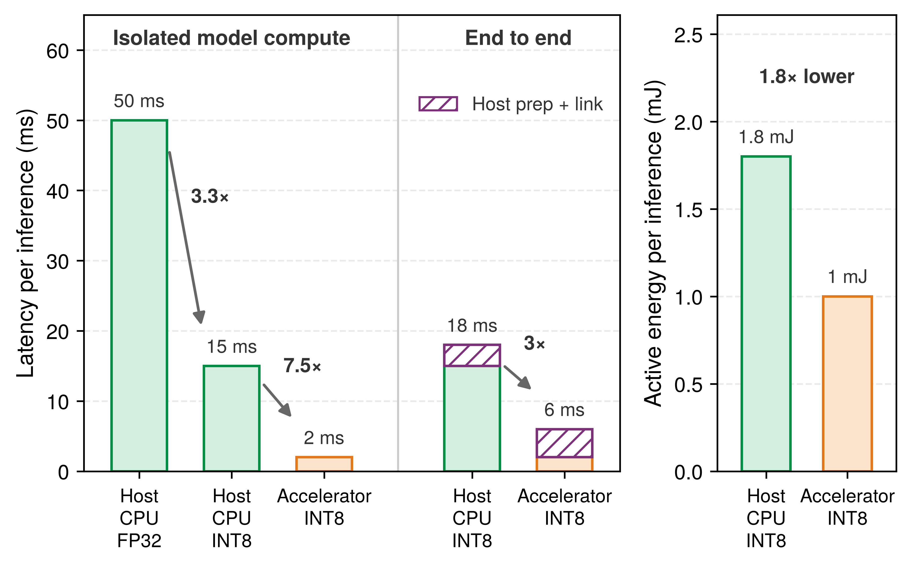
Содержание главы
Содержание
- 12 Бенчмаркинг
- 12.1 Разрыв «бенчмарк–производство»
- 12.2 Плотницкое дело бенчмаркинга
- 12.3 Гранулярность бенчмаркинга
- 12.4 Наборы бенчмарков
- 12.5 Бенчмарки обучения
- 12.6 Инференс-бенчмарки
- 12.7 Измерение мощности и энергии
- 12.8 Лучшие практики бенчмаркинга
- 12.9 Оценка модели и данных
- 12.10 Заблуждения и ловушки
- 12.11 Итоги
12 Бенчмаркинг
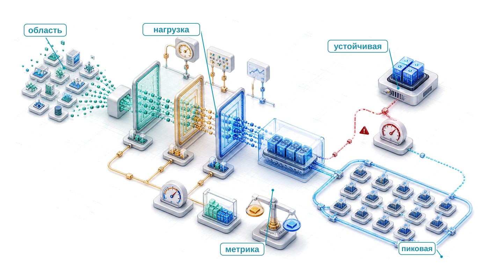
Назначение
Как справедливо сравнивать ML-системы, когда аппаратное обеспечение, модели, данные и развёртывание взаимодействуют друг с другом?
Каждое заявление об оптимизации рано или поздно сталкивается с условиями, представительными для развёртывания, и многие такие заявления эту встречу не переживают. Каждое решение нацелено на одно измерение (задержку, точность, пропускную способность или энергию), но ML-система есть произведение всех этих измерений одновременно: прореженная модель может работать быстрее на одном ускорителе и медленнее на другом, а увеличенный размер батча повышает утилизацию ускорителя ценой нарушения целевого значения задержки. Точно так же периферийное устройство может заявлять пиковую пропускную способность, которую троттлинг из-за нагрева резко снижает уже через несколько минут sustained-нагрузки, а ускорение, измеренное на прогретой простойной машине на синтетических входах, может исчезнуть или смениться замедлением, как только аппаратуру делят реальные запросы, холодные кэши и конкурирующие задачи. Вопрос не в том, улучшается ли локальная метрика, а в том, улучшается ли система в целом в условиях, которые действительно имеют значение. Бенчмаркинг делает такие сравнения систематическими, а не анекдотическими. Он требует определить, что измерять, с какой гранулярностью (одно ядро, целая модель, сквозной конвейер) и в каких условиях (размер батча, распределение входов, тепловое состояние, параллельная нагрузка). Без этой структуры команды сравнивают числа, которые никогда не измерялись на одних и тех же условиях, и решения, выглядевшие здраво в электронной таблице, рассыпаются под производственной нагрузкой. Выбор аппаратуры, модели или конфигурации развёртывания на основе таких чисел может обязать организацию к инфраструктуре на миллионы долларов, которая выдаёт лишь долю ёмкости, ради которой покупалась. Бенчмаркинг проверяет каждую оптимизацию, сталкивая заявления с свидетельствами и количественно оценивая разрыв между обещанием и результатом. В терминах D·A·M бенчмаркинг удерживает соразработку (co-design) подотчётной, выявляя, были ли данные (Data), алгоритм (Algorithm) и машина (Machine) согласованы или просто собраны вместе.
Цели обучения
- Объяснить разрыв «бенчмарк–производство» и бенчмаркинг как валидацию по схеме D·A·M, проверяющую, выполняются ли заявления об оптимизации в представительных условиях
- Спроектировать бенчмарк, превращающий заявление об оптимизации в проверяемое утверждение за счёт фиксации задачи, данных, модели, метрик, обвязки (harness) и правил запуска
- Выбрать гранулярность — микро-, макро- или сквозной уровень — исходя из проверяемого инженерного решения, и сопоставить предсказание по модели «крыши» (roofline) с измерением
- Сравнивать бенчмарки обучения и инференса, используя стандартизированные правила запуска, время до достижения качества, пропускную способность и перцентили задержки
- Измерять энергию на инференс и среднюю мощность при согласованных границах измерения, окнах и рабочих циклах
- Определить, превышает ли измеренная разница шум, с помощью повторных запусков, парных тестов и доверительных интервалов, и объяснить, почему конечная оценка является статистическим свидетельством, но никогда доказательством (разрыв верификации)
- Оценивать качество модели и данных с помощью калибровки уверенности, устойчивости, репрезентативности и метрик по срезам (slices), а также диагностировать разрывы «бенчмарк–производство», вызванные дрейфом, троттлингом из-за нагрева и динамической нагрузкой
12.1 Разрыв «бенчмарк–производство»
Модель, квантованная в INT8, может показать большое ускорение на синтетической рабочей нагрузке и не показать никакого на реальном трафике с переменными размерами входов и параллельными запросами. Прореженная модель может сохранять точность на тестовом наборе и проваливаться на граничных случаях, которые бенчмарк никогда не покрывал. Каждое инженерное заявление о скорости, размере или энергии — это число, измеренное где-то: на прогретом ускорителе или на холодном, при батче 256 или при батче из одного элемента, на отобранных тестовых изображениях или на том, что камера возвращает ночью. Разрыв «бенчмарк–производство» — это различие между тем, как система машинного обучения работает в условиях, зафиксированных измерением, и тем, как она работает в условиях, с которыми сталкивается при развёртывании. Бенчмаркинг — это инженерная дисциплина, которая измеряет этот разрыв до того, как за него заплатит развёртывание, и сокращает его, приводя измеренные условия в соответствие с развёрнутыми.
Аппаратное ускорение закончился предсказаниями. Его модель «крыши» сопоставила слои ResNet-50 с потолками вычислений и пропускной способности ускорителя. При INT8 удвоенная точка «хребта» (арифметическая интенсивность, в которой сходятся потолки вычислений и пропускной способности) увела часть этих слоёв с «крыши» вычислений. До этого Сжатие моделей создал артефакт INT8 размером в четверть от FP32, а Отбор данных достиг целевой точности на меньшем числе примеров. Каждое из этих чисел — благоприятный локальный результат, вычисленный для одного этапа в изоляции, и этапы начинают взаимодействовать, как только запускаются вместе на реальной машине под реальной нагрузкой. Бенчмаркинг измеряет, какие из этих чисел выживают. Он предшествует обслуживанию и эксплуатации, потому что каждое последующее решение — от того, сколько ускорителей выделять, до того, когда откатывать модель, — опирается на измерения, выполненные так, как предписывает эта глава.
Определение 12.1: Бенчмаркинг машинного обучения
Бенчмаркинг машинного обучения — это эмпирическое измерение рабочих нагрузок ML в заданных условиях, используемое для проверки заявлений о компонентах, моделях или сквозных системах против представительных свидетельств, а не только пиковых спецификаций.
- Значимость: Разрыв между пиковой и устойчивой производительностью может быть большим. H100 в пике выдаёт 989 TFLOP/s плотных FP16-вычислений, однако обучение ResNet-50 со скоростью около 5,000 images/s на ускоритель — скоростью, которую зафиксировала система из 64 ускорителей H100 от NVIDIA в MLPerf Training v3.1 (MLCommons 2023 г.), — реализует лишь около 123 TFLOP/s арифметики модели. Это утилизация FLOPs модели (MFU — достигнутые FLOP/s модели, делённые на пиковые FLOP/s оборудования) около 12.4 percent. Слои, ограниченные памятью, входной конвейер, а также накладные расходы на запуск ядер и синхронизацию составляют эту разницу. Бенчмаркинг количественно оценивает фактический разрыв
для данной рабочей нагрузки; спецификации поставщика — нет. - Различие: Бенчмаркинг ML охватывает несколько уровней. Микробенчмарки изолируют отдельные операции, такие как матричное умножение; бенчмарки уровня модели оценивают полные рабочие нагрузки обучения или инференса; сквозные бенчмарки включают окружающую работу — загрузку данных, предобработку, оптимизацию, ввод-вывод контрольных точек или инфраструктуру обслуживания. Уровень должен соответствовать проверяемому инженерному заявлению.
- Типичная ошибка: Распространённое заблуждение состоит в том, что числа бенчмарков — это стабильные ориентиры. Меняются и рабочие нагрузки (новые архитектуры моделей), и аппаратура (новые поколения GPU), поэтому результат, лидирующий в одной версии бенчмарка, часто становится базовой линией в последующей. Сравнения год к году, следовательно, осмысленны только при неизменной версии бенчмарка.
«Железный закон» из Железный закон МЛ-систем предсказывает, сколько времени должна занять рабочая нагрузка, исходя из перемещаемых данных, выполняемых операций и доли пиковой скорости, которую достигает машина, а бенчмарк измеряет, сколько она занимает на деле. Предсказание предполагает заявленные пиковые скорости и эффективность, тогда как измерение фиксирует условия, в которых рабочая нагрузка реально выполнялась, поэтому разница между ними — это разрыв «бенчмарк–производство», переведённый в количественную форму. Для рабочих нагрузок, ограниченных пропускной способностью, разрыв между пиком и устойчивой производительностью следует из «стены памяти». Рабочие нагрузки, ограниченные вычислениями, могут приближаться к пику, однако шаг обучения ResNet-50, номинально ограниченный вычислениями, реализует лишь около 12.4 percent пика, потому что большая часть времени шага уходит на работу, отличную от арифметики с пиковой скоростью. Каждый последующий раздел, приводящий пиковое число, измеряется относительно этого разрыва.
↩︎ «Железный закон», член утилизации
Системный взгляд 12.1: Заблуждение о пиковой производительности
Давняя острота в архитектуре компьютеров называет пиковую производительность «производительностью, которую производитель гарантирует, что вы не превысите». Для ML-систем этот разрыв может быть широким из-за «стены памяти». Модель, ограниченная пропускной способностью, оставляет значительную часть заявленных FLOP/s недостижимой, как бы быстро ни работали арифметические блоки. Стандартизированные бенчмарки вроде MLPerf требуют, чтобы системы выполняли заданные модели и данные, выявляя устойчивую производительность в документированной рабочей точке, а не универсальную скорость для любой рабочей нагрузки.
Бенчмаркинг ML работает в трёх взаимозависимых измерениях, которые напрямую отображаются на компоненты любой развёрнутой системы. Бенчмаркинг системы измеряет, выдаёт ли аппаратура обещанную производительность под реалистичными рабочими нагрузками, или насыщение пропускной способности памяти и накладные расходы программной диспетчеризации съедают выигрыш. Бенчмаркинг модели измеряет, сохраняют ли методы оптимизации качество модели на всём распределении входов, а не только на отобранных тестовых наборах. Бенчмаркинг данных измеряет, обобщает ли модель на реальные данные со всем их шумом, смещениями и сдвигами распределения. Каждое измерение может независимо выявить проблемы, невидимые для остальных, и система, прошедшая все три проверки, даёт гораздо большую уверенность в развёртывании, чем система, оценённая по любой одной оси.
Три измерения не получают равного объёма. Бенчмаркинг системы занимает большую часть главы, поскольку его измерительные проблемы (как строится бенчмарк, с какой гранулярностью он измеряет, какому стандартизированному набору следует и как он измеряет обучение, инференс и мощность) определяют и то, как оцениваются модели и данные. Оценка модели и данных следует после того, как этот механизм выстроен, а итоговый раздел спрашивает, выживают ли все три при живом трафике.
Системный взгляд 12.2: Бенчмарки как движущиеся цели
В традиционных системах (например, SPEC CPU) бенчмарк — это жёсткая спецификация. Алгоритм сортировки корректен, если он сортирует список. Корректность абсолютна и неизменна. В ML-системах бенчмарк — это мягкая спецификация. Корректность определяется конечным набором примеров (ImageNet), а мир движется. Модель, набирающая высокие баллы на ImageNet, может по-прежнему плохо работать на фотографиях пользователей, сделанных спустя годы после создания бенчмарка.
В архитектуре компьютеров инженеры проектируют под бенчмарк, потому что бенчмарк представляет рабочую нагрузку. В инженерии ML проектирование исключительно под бенчмарк — это переобучение. Устойчивость приходит из признания того, что бенчмарк — лишь прокси для изменчивой реальности.
Три «маяковых» рабочие нагрузки несут главу, и каждая выбрана потому, что её обычно ограничивает один ресурс, и потому, что она приходит с заявлениями из предшествующих глав. ResNet-50, ограниченная вычислениями «маяковая» нагрузка этой книги, несёт измерительную и обучающую половину. Это эталонная рабочая нагрузка MLPerf Training с опубликованной целевой точностью (75,9 процента top-1 на ImageNet) и опубликованной пропускной способностью на ускоритель, а её профиль INT8 — тот самый, который смоделировала Сжатие моделей и поместила на «крышу» Аппаратное ускорение. MobileNetV2 несёт половину развёртывания. Она выполняет гораздо меньше арифметики на изображение, чем ResNet-50, но в своём эффективном режиме всё ещё ограничена вычислениями. Она работает на одной периферийной плате в иллюстративном сценарии, собранном из типовых компонентов: фотоловушка для наблюдения за дикой природой, где маломощный хост-процессор и подключённый INT8-ускоритель должны классифицировать каждый кадр в его срок при питании от батареи. Измерения на этой плате повторяются от обвязки до энергетического бюджета. Keyword spotting (KWS), ограниченная мощностью «маяковая» нагрузка, несёт раздел о мощности, где вопрос — сколько энергии детектор слова-активатора тратит на прослушивание, а не насколько быстро он отвечает. Таблица 1 перечисляет операции и байты каждой рабочей нагрузки — величины, которые каждый последующий бенчмарк либо подтверждает, либо опровергает.
| Рабочая нагрузка | Параметры | Прямые FLOPs | Веса (FP32) | Веса (INT8) | Состояние обучения (16 Б/параметр) |
|---|---|---|---|---|---|
| ResNet-50 | 25.6M | 8.2 GFLOP | 102.2 MB | 25.6 MB | 408.9 MB |
| MobileNetV2 | 3.5M | 600 MFLOP | 14 MB | 3.5 MB | 56.1 MB |
| KWS (DS-CNN) | 200K | 20 MFLOP | 800 KB | 200 KB | 3.2 MB |
Таблица уже разделяет две половины главы. ResNet-50 выполняет 13.7× больше арифметики на изображение, чем MobileNetV2, поэтому его бенчмарки обучения — это вопрос о том, удерживает ли ускоритель свою скорость; INT8-веса MobileNetV2 помещаются в несколько мегабайт, поэтому его бенчмарки развёртывания — это вопрос о задержке, устойчивом тепловом режиме и энергопотреблении на небольшой плате.
↩︎ MobileNetV2, маяковая модель для задержки на периферии, вводится в Глубинно-разделяемые свёртки.
Опорный пример 12.1: Проверка развёртывания MobileNetV2
MobileNetV2 служит маяковым примером для проверки всего конвейера оптимизации. MobileNetV2 развивает depthwise-separable-схему первой версии за счёт инвертированных остаточных блоков и линейных узких мест, сохраняя сопоставимый масштаб параметров (Sandler и др. 2018 г.). Он демонстрирует те вызовы развёртывания, где успех или неудачу определяет бенчмаркинг: сжатие может уменьшить размер модели, аппаратное ускорение — снизить задержку инференса, и только бенчмаркинг способен установить, переживут ли эти выигрыши полный конвейер развёртывания.
- Сжатие модели (Сжатие моделей): квантизация INT8 уменьшает этот разборный пример MobileNetV2 с 14 MB до 3.5 MB (сжатие в 4×)
- Аппаратное ускорение (Аппаратное ускорение): в этом иллюстративном сценарии подключённый к плате INT8-ускоритель выполняет инференс за 2 ms против 15 ms на её хостовом CPU
- Проверка бенчмаркингом: убедиться, что конвейер delivers на практике
Систематическая оценка изолирует задержку ускорителя от накладных расходов на предобработку и передачу данных, подтверждает, что квантизация INT8 сохраняет точность на краевых случаях вроде необычного освещения, и проверяет, что пропускная способность выдерживается на собственных кадрах фотоловушки, а не только на отобранных тестовых изображениях ImageNet.
Каждый этап этого конвейера приходит с выгодным числом из собственной главы — например, файлом модели поменьше или более быстрым ядром. Вопрос бенчмаркинга в том, какие из этих локальных чисел остаются верными, когда этапы вместе работают на целевом устройстве, и три принципа определяют, как глава отвечает на этот вопрос.
Во-первых, бенчмарки — это прокси, а не истина. Каждый бенчмарк измеряет конкретные условия, которые могут не совпадать с целевым развёртыванием. Система может показать высокую пропускную способность по образцам, когда все входы доступны одновременно, и гораздо меньше запросов в секунду (QPS), когда запросы приходят во времени при ограничении на задержку, — два режима, которые MLPerf называет Offline и Server (Глава 12.4.4.1). Критический вопрос всегда в том, чего бенчмарк не измеряет.
Во-вторых, ранжированиями в бенчмарках управляет закон Гудхарта.1 «Когда мера становится целью, она перестаёт быть хорошей мерой». Команды, оптимизирующие под позиции в рейтингах бенчмарков, часто производят системы, которые блестят на оценке, но проваливаются в продакшене. Оптимизации под конкретный бенчмарк нередко ухудшают характеристики, важные для развёртывания: устойчивость, калибровку и эффективность.
В-третьих, сквозные метрики важнее метрик отдельных компонентов. Ускорение компонента размывается каждым этапом запроса, которого оно не касается, и это размывание подчиняется закону Амдала; Глава 12.3 количественно оценивает его на конвейере компьютерного зрения. Эти принципы снова появляются на протяжении всей методологии и возвращаются как заблуждения в Глава 12.10.
Отсюда и далее повторяются три термина. Цель уровня обслуживания (SLO) — это целевое значение измеряемой величины, которое развёрнутый сервис обязуется соблюдать, например отвечать на 99 процентов запросов в пределах заявленного времени. Соглашение об уровне обслуживания (SLA) — это контракт, построенный на таких целях; он добавляет последствия их нарушения, и Глава 12.6.2.1 формально определяет и то и другое. Задержка 99-го перцентиля (p99) — это время отклика, которое соблюдается или перекрывается в 99 процентах запросов, то есть она описывает самые медленные 1 процент запросов, а не типичный.
Глава строит измерение прежде, чем применить его (Таблица 2). «Бенчмарковое столярное дело» превращает утверждение в тест, фиксирующий задачу, данные, модель, метрики, обвязку и правила прогона. Гранулярность определяет, какую часть системы охватывает тест — от одного ядра до всего пути запроса, — и именно там предсказание модели «крыши» для ResNet-50 встречается с измерением. Наборы бенчмарков стандартизируют эти решения между организациями. Разделы об обучении и инференсе применяют их к ResNet-50 и к MobileNetV2 на его периферийной плате, а измерение энергопотребления добавляет джоули, с распознаванием ключевых слов в качестве примера. Лучшие практики дают статистику, решающую, реален ли измеренный выигрыш, а оценка модели и данных проверяет те два измерения, которые аппаратный результат удостоверить не может, — в том числе то, соответствует ли уверенность модели частоте её правильных ответов, измеряемая как ожидаемая ошибка калибровки (ECE). Заблуждения и резюме в конце спрашивают, переживают ли доказательства продакшн-трафик.
| Раздел | Проверяемое утверждение | Что измеряется | Гранулярность | Единица | Ловушка, от которой защищает |
|---|---|---|---|---|---|
| Бенчмарковое столярное дело | ResNet-50 в INT8 быстрее, чем в FP32 | Утверждение, переформулированное через задачу, данные, модель, метрику, обвязку и правила прогона | Задаётся утверждением | Указывается для каждой метрики | Число, сообщённое без своих условий |
| Гранулярность бенчмаркинга | Ускорение ядра ускоряет запрос | Время ядра, модели и пути запроса; предсказание по «крыше» против измеренного | Микро, макро, сквозной | с, FLOP/с, Б/с | Ускорение компонента, размытое нетронутыми этапами |
| Наборы бенчмарков | Числа двух поставщиков сравнимы | Референсная рабочая нагрузка при общих разделах, сценариях и правилах прогона | Модель и система | Время до качества, QPS | Выгодные условия, выбранные каждым поставщиком отдельно |
| Бенчмарки обучения | Больше ускорителей — пропорционально быстрее обучение | Время до целевой точности, пропускная способность, эффективность масштабирования, MFU | Модель на одном–восьми ускорителях | с, изображений/с, проценты | Пропускная способность, которая не достигает целевого качества |
| Бенчмарки инференса | MobileNetV2 укладывается в дедлайн кадра на плате | Перцентили задержки, пропускная способность, память, холодный старт | Сквозной на одной плате | мс (p50, p99), FPS, Б | Среднее, скрывающее хвост; всплеск, скрывающий троттлинг |
| Измерение мощности и энергии | Устройство работает от батареи | Энергия за согласованный интервал; средняя мощность по циклу работы | Граница устройства или системы | Дж на инференс, Вт | Эффективность, указанная в рабочей точке, которой устройство не придерживается |
| Лучшие практики бенчмаркинга | Измеренная разница реальна | Повторные прогоны, парные тесты, доверительные интервалы | Любая | Интервал | Разрыв в одну точку внутри шума выборки |
| Оценка модели и данных | Сжатая модель всё ещё права на развёрнутых данных | Калибровка уверенности, срезы, покрытие, качество разметки, дрейф | Модель и набор данных | ECE, проценты на срез | Агрегированная точность, скрывающая калибровку и потерю подгрупп |
Знать, что измерять, — лишь половина задачи. Измерение с ошибками — с неподходящей рабочей нагрузкой, смещённой базовой линией или неконтролируемой переменной — даёт числа, которые выглядят точными и вводят в заблуждение принимаемое по ним решение. История компьютерных бенчмарков2 полна технически корректных метрик, применённых с порочной методологией — от «обыгранных» компиляторами очков Whetstone до заявлений о пропускной способности, не предсказывающих ничего об устойчивой нагрузке (Глава 12.4.1). Защита — в конструкции. Бенчмарк должен быть построен так, чтобы измерять то, что заявляет его утверждение, и с этой конструкции глава и начинается.
12.2 Плотницкое дело бенчмаркинга
Утверждение, что ResNet-50 работает быстрее в INT8, чем в FP32, может оказаться верным или ложным в зависимости от того, начинается ли отсчёт времени с JPEG-файла на накопителе или с предобработанного тензора в памяти ускорителя, а также от того, опускается ли точность квантованных весов ниже целевого порога. Плотницкое дело бенчмаркинга — это ремесло построения бенчмарка, который измеряет именно то, о чём говорит его утверждение. Оно фиксирует задачу, данные, модель, метрики, испытательный стенд, спецификацию системы и правила проведения запусков так, чтобы число, которое выдаёт бенчмарк, отвечало на данный инженерный вопрос и ни на какой другой. Все эти зафиксированные вместе решения образуют спецификацию бенчмарка. Синтетический цикл матричного умножения, запуск обучения ResNet-50 на ImageNet и полный обслуживающий конвейер — все они нуждаются в таких спецификациях, и изменение одного компонента меняет то, что сможет измерить следующий. Компоненты следуют таксономии D·A·M. Определение задачи фиксирует представление входных данных (Data). Набор данных и целевая функция задачи ограничивают множество допустимых моделей (Algorithm), поскольку кандидат должен сначала достичь целевого качества на этих данных, и лишь потом имеет значение его скорость. Память, энергетический лимит и дедлайны целевого аппаратного обеспечения ограничивают то, как модель может исполняться (Machine).
Оценка ML-системы требует связывания статистических метрик задачи с физическими метриками эффективности. Квантизация и прореживание уменьшают занимаемый объём памяти параметров и трафик по шине памяти, но они изменяют числовые представления и рискуют ухудшить точность задачи. Бенчмарк, который регистрирует задержку исполнения без статистической точности (например, ошибки классификации), поощряет агрессивные аппроксимации, порождающие некорректные выходные данные. И наоборот, сообщение точности без задержки или потребления памяти скрывает, удовлетворяет ли модель физическим ограничениям целевой системы.
Испытательный стенд и правила проведения запусков дают экспериментальный контроль, делающий такие оценки воспроизводимыми. Протокол следует за проверяемым вопросом. Контролируемый стационарный эксперимент может использовать итерации прогрева, фиксированные частоты процессоров и закреплённую (заблокированную от подкачки) память хоста, из которой ускоритель может копировать напрямую, чтобы изолировать различия в исполнении. Бенчмарк развёртывания, напротив, сохраняет соответствующую политику динамического изменения напряжения и частоты (DVFS), холодные запуски и конкурирующие рабочие нагрузки, документируя их эффекты. Регистрация распределений хвостовой задержки (p95, p99) наряду со средним значением вскрывает задержки, скрытые усреднением. Каждый компонент здесь строится вокруг унаследованного этой главой утверждения — что ResNet-50 работает быстрее в INT8, чем в FP32, — а бенчмарк аномалий MLPerf Tiny в конце главы показывает все компоненты, зафиксированные одновременно на небольшой встраиваемой модели.
12.2.1 Превращение утверждения в тест
Всякий бенчмарк начинается с утверждения. Утверждение из предыдущих глав — что ResNet-50 в INT8 работает быстрее, чем в FP32, без неприемлемой потери точности, — пока не поддаётся проверке, поскольку оно не называет ни входные данные, ни выходные, ни условия, при которых «быстрее» должно выполняться. Фиксация этих границ — первый акт плотницкого дела. Эта глава проектирует тест, который позволил бы разрешить данное утверждение; она не сообщает результата, поскольку он зависит от ускорителя, на котором команда его запускает. Без явной спецификации задачи аппаратные и программные оптимизации невозможно оценивать на равных условиях: изменение входного разрешения, числового типа данных или дедлайна задержки меняет объём работы, который выполняет машина. Для ResNet-50 входом является декодированное RGB-изображение
Спецификации входных и выходных данных фиксируют, что каждый запуск должен перемещать, и определяют точные границы хронометрируемого исполнения. Спецификация входных данных фиксирует размерности тензоров, поведение формирования батчей, числовые представления (например, FP16 или INT8) и скорости приёма данных. Для утверждения о ResNet-50 она решает, начинается ли отсчёт времени с JPEG-файла на накопителе или с предобработанного тензора, уже находящегося в памяти ускорителя, — выбор, который может изменить измеряемое время сильнее, чем тестируемое изменение точности. Спецификация выходных данных, напротив, определяет границу завершения вычислений. Бенчмарки часто вносят смещение измерений, хронометрируя только прямые проходы ускорителя и игнорируя постобработку на CPU, необходимую для превращения сырых тензорных выходов в пригодные к использованию решения. Надёжная спецификация выходных данных определяет, выдаёт ли система сырые логиты, промежуточные эмбеддинги или финальные метки классов, учитывая все последующие операции пороговой обработки или редукции, потребляющие пропускную способность памяти хоста.
Спецификация производительности определяет операционный диапазон, который решает, жизнеспособна ли оптимизация. Ничего не значащие числа пропускной способности без ограничений бессмысленны, если статистическая точность падает ниже допустимых порогов, а высокая средняя пропускная способность не спасёт систему, нарушающую SLO по задержке. Для утверждения о ResNet-50 спецификация производительности связывает нижнюю границу качества (MLPerf Training требует 75,9 процента top-1, а развёртывание в INT8 может допустить потерю не более одного процентного пункта относительно FP32) с ограничениями аппаратного исполнения. Это потолок хвостовой задержки, устойчивая пропускная способность, соответствующая скорости поступления изображений, и резидентный занимаемый объём памяти, оставляющий место для активаций при выбранном размере батча. Определив эти три границы заранее, бенчмарк гарантирует, что последующие этапы — от построения набора данных до конфигурации испытательного стенда — будут оценивать системные оптимизации против реальных операционных ограничений развёртывания.
12.2.2 Задача и набор данных
Фиксация нижней границы качества ResNet-50 на уровне 75,9 процента top-1 точности ничего не значит, пока не зафиксирован сам оценочный набор данных: команда, тестирующая свою модель INT8 на приватной выборке простых дневных фотографий, может заявить об отсутствии потери точности, тогда как команда, тестирующая на всех 50 000 валидационных изображений ImageNet, увидит регрессию. Стандартизованные наборы данных обеспечивают одинаковые условия оценки для конкурирующих подходов, не позволяя командам отбирать приватные выборки, маскирующие сравнительные слабости. В компьютерном зрении ImageNet (Deng и др. 2024 г., 2009 г.), COCO (Lin и др. 2014 г.) и CIFAR-10 (Krizhevsky 2009 г.) задают эталонные задачи для классификации и детектирования. В обработке естественного языка SQuAD3 (Rajpurkar и др. 2016 г.), GLUE4 (Wang и др. 2018 г.) и WikiText (Merity 2016 г.; Merity и др. 2016 г.) выполняют те же функции, стандартизируя понимание, классификацию и языковое моделирование в разнообразных текстовых доменах.
Даже стандартизованный набор данных — первое место, где бенчмарк может утратить связь с реальностью развёртывания. Валидационный набор ImageNet фиксирует целевое качество ResNet-50, но его отобранные центрированные фотографии — это не те кадры, которые фотоловушка возвращает в сумерках; к этому разрыву возвращается Глава 12.9.2. Бенчмарк-набор данных должен быть достаточно репрезентативным, чтобы вскрывать отказы в развёртывании, и достаточно сложным, чтобы разделять модели, — так, чтобы выбранная далее архитектура модели и метрики проверялись на осмысленных входных данных.
12.2.3 Модель и метрики
Даже на одном и том же валидационном разбиении ImageNet два бенчмарка ResNet-50 нельзя сравнивать, если одна команда меняет ширины слоёв или подменяет среду исполнения, а другая меняет ускоритель. В системном бенчмаркинге модель определяет исполняемую рабочую нагрузку, поскольку её вычислительный граф задаёт арифметическую интенсивность, занимаемый объём памяти и топологию коммуникаций. Выбор и фиксация бенчмарк-модели определяют, отражают ли измеренные вариации производительности эффективность архитектуры, программные оптимизации среды исполнения или сырую производительность ускорителя. Оценка архитектурной модификации требует удержания среды исполнения и целевого аппаратного обеспечения неизменными. И наоборот, оценка аппаратных платформ или программных движков исполнения требует стандартизации на фиксированном репрезентативном графе модели, чтобы различия в пропускной способности изолировали эффективность исполнения, а не математические изменения рабочей нагрузки.
Базовые модели задают эмпирическую точку отсчёта для целевого домена. Вместо игрушечных алгоритмов системные бенчмарки опираются на канонические рабочие нагрузки с хорошо охарактеризованными вычислительными профилями и паттернами доступа к памяти. В компьютерном зрении эту роль играет ResNet-50 — именно поэтому утверждение главы сформулировано на нём. В обработке языка стандартной базовой линией служит BERT5, поскольку его многослойное само-внимание и плотные блоки прямой связи нагружают как ограниченные вычислениями матричные умножения, так и ограниченные пропускной способностью памяти операции редукции.
Однако спецификация базовой линии не может остановиться на математическом графе. Две реализации идентичной архитектуры в разных фреймворках или средах исполнения часто ведут себя по-разному во время работы. Различия в слиянии ядер (например, когда нормализация и активация применяются внутри ядра матричного умножения, так что его выход не записывается в высокоскоростную память (HBM) и не читается обратно), накладные расходы на запуск ядер и поведение аллокатора памяти могут превзойти влияние на производительность небольших архитектурных вариаций. Сравнение, изолирующее аппаратное обеспечение, должно контролировать реализацию среды исполнения наряду с математической моделью. Сравнение сред исполнения, напротив, называет эту реализацию вмешательством и документирует оба стека.
Бенчмарк должен выбирать операционный режим, соответствующий его инженерному вопросу. При обучении ограничивающими факторами могут быть ёмкость памяти и пропускная способность интерконнекта, поскольку хранение прямых активаций, обратных градиентов и состояний оптимизатора на нескольких ускорителях ограничивает размер батча и требует коллективных коммуникаций с высокой пропускной способностью. Поэтому бенчмарки обучения измеряют время до достижения точности при фиксированных критериях сходимости, а не одну лишь скорость итераций. При инференсе обратные проходы и состояния оптимизатора исчезают. Оценка вместо этого акцентирует цель обслуживания, например SLO по хвостовой задержке.
Перенос модели в продакшен часто требует снижения точности представления — квантизации весов и активаций из FP32 или BF16 в INT8 или FP8. Перемещение подходящих тензоров из 16-битного формата в 8-битный вдвое уменьшает их сырой объём хранения и может снизить трафик или поднять поддерживаемую пропускную способность арифметики. Выигрыш для всей модели зависит от пути исполнения, и валидация должна установить, остаётся ли численная ошибка в пределах целевого качества. Поскольку эффективное обучение не гарантирует применимости в обслуживании, утверждение, охватывающее разработку и развёртывание, требует раздельного измерения обучения и инференса. Для решения о развёртывании фиксированной предобученной модели можно измерить один лишь инференс.
Фиксация модели и её режима решает, что именно запускается; остаётся выбор того, какие числа этот запуск сообщает. Метрики оценки6 переводят сырое поведение модели в числа, которые можно сравнивать, ранжировать и использовать для инженерных решений. Сложность — в выборе правильных чисел. Метрика, учитывающая точность, но игнорирующая задержку, может объявить победителем модель, слишком медленную для продакшена; метрика, поощряющая пропускную способность, но игнорирующая энергию, может оптимизировать под бюджет развёртывания, которого не существует. Таблица 3 классифицирует меры оценки по виду отказа, который каждая из них вскрывает, и по контексту развёртывания, которому она служит.
| Категория | Метрика | Единица | Основное применение |
|---|---|---|---|
| Точность | Top-1/Top-5 Accuracy | Проценты | Классификация |
| mAP (mean Average Precision) | Оценка 0–1 | Детектирование объектов | |
| BLEU/ROUGE | Оценка 0–100 | Генерация в NLP | |
| Перплексия | Оценка (ниже = лучше) | Языковое моделирование | |
| Пропускная способность | Образцов/секунда | Образцов/с | Батч-инференс |
| Пропускная способность токенов | токенов/с | Инференс LLM | |
| Время обучения | Часы/дни | Бенчмарки обучения | |
| Задержка | Задержка p50 | Миллисекунды | Медианное время ответа |
| Задержка p99 | Миллисекунды | Хвостовая задержка (SLA) | |
| Задержка первого токена | Миллисекунды | Отзывчивость LLM | |
| Эффективность | Образцов/секунда/ватт | Образцов/с/Вт | Энергоэффективность |
| Точность/FLOP | проценты/PFLOP | Алгоритмическая эффективность | |
| TCO на инференс | $/инференс | Экономическая эффективность |
Метрики в Таблица 3 вскрывают физические компромиссы, определяемые архитектурой ускорителя. Пропускная способность измеряет совокупную производительность обработки, тогда как задержка измеряет время завершения отдельного запроса. Эти две цели прямо конфликтуют на границе аппаратного обеспечения. Максимизация пропускной способности требует группировки запросов в более крупные батчи, и каждый запрос затем ждёт, пока его батч сформируется и пока выполняется более крупная операция.
Даже при фиксированном размере батча арифметическое среднее задержки маскирует хвостовое поведение. Джиттер очередей, простои из-за выделения памяти и троттлинг из-за нагрева ускорителя приводят к расхождению времён исполнения; система со средней задержкой 10 мс всё ещё может страдать от задержки p99 в 500 мс, нарушающей её SLO по задержке. Поэтому бенчмарки должны сообщать перцентили распределения (p50, p95, p99), а не средние значения.
Составные метрики, такие как образцов/секунда/ватт, сжимают несколько измерений в один скаляр, упрощая высокоуровневые сравнения, но скрывая, где находятся узкие места. Сообщение атомарных метрик (распределений задержки, пропускной способности и энергопотребления) наряду с составными показателями изолирует, какой физический ресурс ограничивает систему.
↪ Размер батча, при котором ожидание формирования батча выталкивает задержку за пределы её бюджета, измеряется с помощью развёртки по размеру батча в Задержка формирования и граница «задержка–пропускная способность».
Метрики, специфичные для задачи, оценивают алгоритмическое измерение, количественно определяя, решает ли модель статистическую задачу. Рабочие нагрузки классификации оценивают точность (долю корректных предсказаний), точность-precision (долю предсказанных положительных, оказавшихся корректными), полноту (долю фактических положительных, которые находит модель) и F1-меру (их гармоническое среднее) (Sokolova и Lapalme 2009 г.). Precision и recall изолируют долю истинно положительных от ложных срабатываний, что существенно при несбалансированных распределениях классов. Задачи непрерывной оценки опираются на среднеквадратичную ошибку (MSE) или среднюю абсолютную ошибку (MAE), а генерация последовательностей использует специализированные правила подсчёта очков, такие как BLEU7, для измерения модифицированной n-граммной точности против референсных человеческих переводов (Papineni и др. 2002 г.).
Метрики задач оценивают алгоритмическое качество изолированно, но жизнеспособность развёртывания зависит от физических ограничений машины. Ёмкость модели, измеряемая количеством параметров и занимаемым объёмом памяти, определяет, помещаются ли веса в кэш SRAM на кристалле или память ускорителя либо же вытесняются через высокозадержные межсоединения. Задержка выполнения на один инференс определяет, соблюдает ли система требования реального времени, а энергопотребление на инференс (в джоулях или миллиджоулях) ограничивает тепловыделение и время работы от батареи.
Бенчмарки должны также учитывать чувствительность измерений к программным средам исполнения. Фреймворки различаются тем, как они сливают ядра (Барьер памяти и слияние ядер), а обучающий код — тем, как вычисляет функцию потерь и накапливает градиенты (Обучение модели), поэтому одна и та же модель может показывать разные числа на разных программных стеках. Тонкие различия в реализации сдвигают измеряемую точность и задержку достаточно сильно, чтобы инвертировать рейтинги бенчмарков, когда кандидаты различаются на малые величины. Примеры: сконфигурирована ли пакетная нормализация на использование сохранённой скользящей статистики или статистики текущего мини-батча при оценке, и как ядра редукции переупорядочивают неассоциативные сложения чисел с плавающей точкой. Контроль над тем, как управляется среда исполнения и как засекаются эти метрики, — задача бенчмарк-харнесса (тестового стенда).
12.2.4 Бенчмарк-харнесс
Когда хостовое ПО инициирует шаг инференса или обучения на ускорителе, среда исполнения фреймворка ставит команды в очередь (например, CUDA stream или аппаратный командный буфер) и возвращает управление CPU за микросекунды. Наивный таймер, обёртывающий хостовый вызов, измеряет постановку в очередь, а не выполнение на устройстве. Избегание таких измерительных ловушек — задача бенчмарк-харнесса: программного и инструментального каркаса, который подаёт входные данные в тестируемую систему, координирует выполнение через асинхронную границу хост-ускоритель, собирает временные и энергетические трассы и обеспечивает воспроизводимость. Строгий харнесс вставляет явные барьеры синхронизации устройства (например, torch.cuda.synchronize()) или опрашивает события с временными метками на устройстве (например, torch.cuda.Event), гарантируя, что записанные интервалы времени покрывают заявленный интервал работы устройства, а не накладные расходы на постановку в очередь на хосте.
Конечные точки таймера определяют, какая работа попадает в результат. Рисунок 1 разделяет хостовый вызов, синхронизированный хостовый интервал и интервал по событиям устройства для одного инференса.
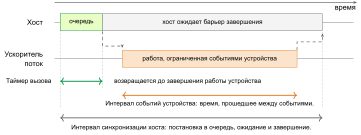
Эти интервалы отвечают на разные вопросы. Ранее поставленная работа устройства должна завершиться до запуска хостового таймера, иначе в интервал попадёт ещё стоящая в очереди работа от предыдущих вызовов. Синхронизированный хостовый интервал измеряет прошедшее время до завершения при заданной границе синхронизации, тогда как события измеряют интервал между своими позициями в потоке ускорителя. Отчёт должен указать эти границы до сравнения двух реализаций; ни один из методов не включает работу, выходящую за их пределы.
Архитектура харнесса должна соответствовать эксплуатационному режиму цели развёртывания. В серверных средах харнесс генерирует конкурентный трафик запросов с помощью load-генератора открытого контура, часто параметризуя интервалы между прибытиями распределением Пуассона.8 Харнесс открытого контура отправляет запросы согласно независимому расписанию прибытия, независимо от отзывчивости сервера. Эта развязка выявляет задержки в очередях и хвостовую задержку (например, времена ответа p99), когда всплески прибытия насыщают доступные вычисления.
Напротив, наивный бенчмарк-клиент часто использует паттерн закрытого контура: отправить запрос, блокироваться до получения ответа и только затем отправлять следующий. Такая схема вносит серьёзное измерительное искажение, известное как координированное упущение (coordinated omission). Рассмотрим сервер, переживающий кратковременную паузу сборки мусора или остановку перераспределения памяти на 500 мс. В производственной среде открытого контура независимые пользователи продолжают отправлять запросы, из-за чего десятки запросов накапливаются во входной очереди сервера; когда пауза заканчивается, каждый запрос из очереди страдает завышенной хвостовой задержкой. В бенчмарке закрытого контура клиент бездействует всю 500-мс паузу, не отправляя трафика, пока сервер борется с проблемой. Бенчмарк записывает один медленный запрос и нулевую очередь. Согласуя генерацию запросов с отзывчивостью сервера, харнесс закрытого контура искусственно дозирует трафик и систематически стирает сам коллапс очереди и всплески задержки p99, которые он был создан измерять.
Именно недостающие запросы являются источником искажения. Рисунок 2 сопоставляет две политики прибытия на одной паузе сервера так, чтобы изменение предлагаемой работы оставалось видимым.
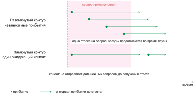
Результат закрытого контура валиден для популяции, чьи клиенты ведут себя таким образом. Сам по себе он не оценивает задержку для независимого потока прибытия, потому что сокращает предлагаемую нагрузку — скорость, с которой клиенты отправляют запросы, — именно тогда, когда сервер замедляется. Следовательно, харнесс должен воспроизводить политику прибытия развёртывания или объяснять, почему иная политика отвечает на поставленный вопрос. Клиенты сервера прибывают независимо друг от друга, поэтому бенчмарк обслуживания по умолчанию использует харнесс открытого контура с синхронизированным замером времени устройства.
Третья политика прибытия — офлайн-обработка батчей — полностью устраняет планирование прибытия. Харнесс заранее размещает большие входные батчи в памяти, чтобы насытить исполнительные блоки ускорителя, максимизировать использование пропускной способности памяти и измерить пиковую устойчивую пропускную способность.
Во встраиваемых и периферийных (edge) развёртываниях рабочие нагрузки не являются ни стохастическими сетевыми потоками, ни неограниченными пакетными очередями. Вместо этого входы приходят последовательно от физических датчиков (например, аналого-цифрового преобразователя звука или сенсора изображения), управляемых фиксированными аппаратными тактами дискретизации. Харнесс должен подавать эти потоки датчиков в ограниченные буферы SRAM на кристалле с частотой дискретизации и проверять, что каждый инференс завершается до прихода следующего сэмпла, поскольку запоздалый инференс переполняет буфер. Edge-харнесс также должен измерять напряжение и ток напрямую в активных циклах выполнения и в состояниях низкоэнергетического сна, чтобы фиксировать истинную энергию на инференс.
Воспроизводимость требует указания, какие условия среды исполнения контролируются, а какие являются частью рабочей нагрузки. Прогрев важен на каждом масштабе — от одного ядра до целого запуска, — поскольку современные ускорители и среды исполнения имеют существенные переходные процессы холодного старта. Первые проходы инференса запускают выделение памяти по требованию, динамическую JIT-компиляцию, инициализацию драйверов и перенос весов из вторичного хранилища в память ускорителя. Для измерений в установившемся режиме харнесс выполняет незасчитываемые итерации прогрева, пока не заполнятся кэши, не стабилизируются аллокаторы памяти и не будет достигнуто целевое тепловое состояние. Контролируемые эксперименты могут фиксировать частоты и убирать конкурирующие процессы; тесты развёртывания сохраняют и сообщают соответствующую политику DVFS и контеншн. Измерения холодного старта засекают инициализацию отдельно, а не отбрасывают её. Наконец, логирование телеметрии должно минимизировать эффект зонда, записывая временные метки выполнения и счётчики производительности в неблокирующие заранее выделенные буферы памяти. Оставшиеся накладные расходы инструментария следует проверять сравнением с минимально инструментированным запуском.
12.2.5 Спецификации и правила запуска
Даже хорошо инструментированный харнесс выдаёт неинтерпретируемое число, если в отчёте опущены машина и правила, при которых харнесс запускался. Цифра пропускной способности, сообщённая без модели ускорителя, пропускной способности памяти или рабочих частот, скрывает, проистекает ли наблюдаемое ускорение из алгоритмической эффективности или из улучшенного кремния, а результат без политики случайных seed скрывает, воспроизводим ли он вообще, — потому что стохастические процессы, рассмотренные в Глава 12.4.2, означают, что два запуска на идентичном оборудовании могут дать разные числа.
Спецификации системы фиксируют вычислительную среду — физическое аппаратное обеспечение и программный стек, задающие границы Машины (
| Пункт | Что фиксирует отчёт | Почему результат от этого зависит |
|---|---|---|
| Ускоритель | Микроархитектура, число активных ядер, базовые и буст-частоты, лимит мощности (TDP) | Задаёт пиковую арифметическую скорость и продолжительность буст-частот |
| Память устройства | Ёмкость, ширина шины, пиковая пропускная способность | Задаёт потолок пропускной способности и максимальный помещающийся батч |
| Топология нескольких ускорителей | Хостовый интерфейс (линии PCIe) и связи ускорителей (NVLink или общие PCIe-свитчи) | Время all-reduce ограничено пропускной способностью связей и топологией |
| Программный стек | Операционная система, драйвер, среда вычислений (CUDA или ROCm), математические библиотеки (cuBLAS, CUTLASS) | Выбор ядер, разбиение на тайлы и порядок редукции меняются с версией библиотеки |
| Слой фреймворка | Версия фреймворка, eager- или компилированное исполнение (torch.compile), настройки слияния |
Отделяет накладные расходы фреймворка от стоимости модели |
| Мощность и тепло | Устойчивая мощность платы, события троттлинга, энергия на сэмпл или токент | Ускорение от кратковременного буста частот не сохраняется |
| Случайность | Политика seed, порядок данных, известные недетерминированные ядра | Два запуска на идентичном оборудовании могут дать разные числа |
| Конфигурация | Каждый гиперпараметр, включая расписание скорости обучения | Изменение скорости обучения сдвигает сходимость и итоговую точность |
| Данные | Версия датасета, разбиения, предобработка; любые ограничения приватности или лицензирования на публикацию | Иные разбиения или предобработка определяют другую рабочую нагрузку |
| Код | Версии кода модели, предобработки, обучения и оценки; образ контейнера | Позволяет другой команде изучить и, где доступ есть, воспроизвести запуск |
Референсные наборы могут распространять контейнеризованные среды, инкапсулирующие зависимости и конфигурации, а экспериментальные логи сохраняют метрики обучения, контрольные точки и любые корректировки в середине запуска. Вместе эти записи превращают однократное измерение в доказательство, которое другая команда может изучить и, при наличии доступа, воспроизвести.
12.2.6 Интерпретация результатов
Когда харнесс и правила запуска дают число — например, задержку инференса 2 мс или пропускную способность 10 000 изображений/с, — одна метрика всё же редко раскрывает, увенчается ли оптимизация успехом при развёртывании. Превращение сырых чисел бенчмарка в инженерное решение требует проверки как экспериментального вмешательства, так и состояния исполнения. Проверка вмешательства означает явное указание, что меняется, а что остаётся сравнимым. ResNet-50 против MobileNet может быть корректным сравнением архитектур при совпадающих требованиях задачи и качества; FP32 против INT8 может быть корректным сравнением точности на поддерживаемом пути исполнения. Любое из сравнений либо фиксирует остальные релевантные условия, либо сообщает об их изменениях, включая размер батча, оборудование, среду исполнения, распределение входных данных и сервисные цели.
Проверка состояния исполнения означает отделение установившегося выполнения от инициализации с использованием протокола прогрева харнесса (Глава 12.2.4). Один запуск смешивает накладные расходы холодного старта (компиляция ядер, page faults, прогрев кэша) с устойчивой пропускной способностью, тогда как продолжительный стресс-тест может вместо этого зафиксировать троттлинг из-за нагрева, рассмотренный для edge-устройств в Глава 12.6.4. Отчёт приводит результаты холодного старта или установившегося режима в зависимости от вопроса развёртывания и фиксирует вариацию между повторными испытаниями. Превышает ли измеренная разница эту вариацию — статистический вопрос, решаемый правилами интервалов и парных тестов из Глава 12.8.1.
Системный взгляд 12.3: Интерпретация заявления из бенчмарка
Вендор заявляет: «Наша система достигает 10,000 inferences/секунду на ResNet-50». Само по себе это число не может обосновать планирование развёртывания, поскольку условия, определяющие его смысл, не названы.
Четыре неуказанных условия определяют, что означает это заявление:
- Размер батча: Крупные батчи могут повышать утилизацию вычислений, но увеличивают задержку в очереди; батч размера 1 минимизирует задержку, но оставляет исполнительные блоки недогруженными.
- Точность представления (precision): Выполнение в INT8 задействует целочисленные конвейеры с большей пропускной способностью и сокращает трафик памяти, но требует калибровки диапазонов квантизации, способной ухудшить числовую точность.
- Граница измерения: Измерительное окно должно указывать, изолирует ли оно чистое выполнение ядер на ускорителе или включает передачи хост–устройство, декодирование JPEG и преобразования форматов тензоров.
- Точность (accuracy): Утверждение должно указывать, сохраняет ли оптимизированная модель контрольную точность базовой линии (например, 76,1 процента top-1, которых достигает стандартная FP32 ResNet-50 на ImageNet — выше целевых 75,9 процента MLPerf Training) или обменивает качество задачи на сырую скорость выполнения.
Пример: “10,000 inferences/second on ResNet-50 at batch size 32, INT8 precision, 76 percent Top-1 accuracy, including JPEG decoding, on NVIDIA H100 at 700 W thermal design power (TDP).”
Заявление, у которого нельзя восстановить границу рабочей нагрузки, точность представления и исключённые издержки, следует отклонять. Маркетинговые формулировки сжимают такие упущения в несколько слов, обычно сообщая наиболее выгодную рабочую точку, не говоря об этом. Таблица 5 переводит распространённые формулировки в технические оговорки, стоящие за каждой из них.
| Заявление вендора | Что оно часто означает |
|---|---|
| «До 10 000 изображений/с» | Пиковая пропускная способность при максимальном размере батча, INT8, без предобработки |
| «Задержка менее миллисекунды» | Только вычисления на ускорителе, исключая передачу данных |
| «В 5 |
Эффективность на операцию, а не общая эффективность системы |
| «Оптимизировано для ИИ» | Может ускорять лишь конкретные операции или точности представления |
Какая метрика определяет жизнеспособность, зависит от развёртывания. В приложениях, критичных к безопасности, таких как медицинская визуализация или автономное вождение, прирост точности на 1 процент оправдывает существенные вычислительные затраты. В интерактивном поиске или расшифровке речи доминирует хвостовая задержка в рамках жёсткого SLO по задержке, поэтому незначительный прирост точности несущественен, если он нарушает бюджет задержки.
Оценке систем следует также остерегаться переобучения под бенчмарк (benchmark overfitting) — ситуации, когда оптимизация нацелена на характерные вычислительные паттерны стандартизированного набора в ущерб производственным рабочим нагрузкам. Например, агрессивное слияние ядер или разбиение на тайлы, настроенные исключительно на фиксированные длины последовательностей в тестовом окружении бенчмарка, могут снизить пропускную способность при развёртывании против динамических пользовательских запросов переменной длины. Надёжная интерпретация требует проверки производительности на разнообразных распределениях входных данных, возмущённых размерах батчей и представительных эксплуатационных циклах работы.
Контрольная точка 12.1: Расшифровка бенчмарк-заявлений вендоров
Оценивая аппаратное или программное обеспечение на основе бенчмарков, сообщённых вендором, проверьте, идентифицирует ли заявление рабочую нагрузку, границу измерения и условия эксплуатации.
12.2.7 Полный эталонный бенчмарк
Бенчмарк обнаружения аномалий в MLPerf Tiny фиксирует одновременно все компоненты на одной небольшой встраиваемой модели. Многостадийный конвейер на Рисунок 3 прослеживает этот промышленный аудиобенчмарк через девять последовательных фаз. Он ведёт задачу от постановки проблемы в верхних шевронах через извлечение спектрограммы, обучение автоэнкодера и квантизацию INT8 до встраиваемого развёртывания на микроконтроллере с ARM mbed OS. Каждая стадия фиксирует граничные условия для следующей: от представления входных данных (Data) через допустимые модели (Algorithm) к ограничениям устройства (Machine). На микроконтроллере ограничения Machine необычно жёсткие. Ёмкость SRAM, энергетический лимит и директивные сроки реального времени диктуют квантизацию INT8 и компиляцию ядер, экономных по памяти. Поскольку каждый выбор ограничивает следующий, бенчмарк, измеряющий только точность классификации или только сырую задержку инференса, пропустит межстадийные взаимодействия — ситуации, когда инженерное решение на любой стадии сужает допустимое пространство проектов ниже по цепочке.
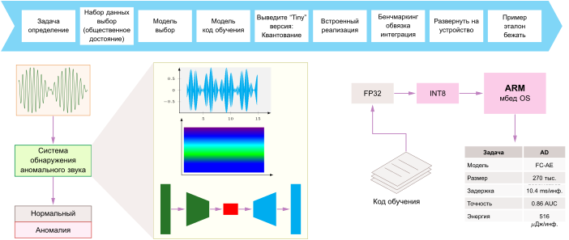
Её постановка проблемы фиксирует те же три спецификации, которые требовались для заявления о ResNet-50. Вход — одноканальный звук, потоковый на частоте 16 кГц в фиксированных окнах по одной секунде, что задаёт жёсткую скорость приёма данных и требование к буферу памяти ещё до извлечения признаков. Модель — автоэнкодер, сеть, обученная воспроизводить на выходе нормальные звуки машин, поэтому звук, который она плохо восстанавливает (большая ошибка реконструкции), сигнализирует об аномалии. Выход — бинарный флаг «Normal» или «Anomaly», включая всю пороговую обработку, превращающую ошибку реконструкции в это решение. Спецификация производительности связывает метрику качества с пределами выполнения. Метрика качества — площадь под ROC-кривой (AUC), оценивающая детектор при каждом значении порога, а не при одном. Пределы выполнения — задержка на инференс, поспевающая за входными окнами в одну секунду, устойчивая пропускная способность, соответствующая скорости поступления данных, и занимаемый объём памяти, позволяющий избежать сбоев нехватки памяти на микроконтроллере.
На стадии выбора набора данных (второй шеврон) конвейер бенчмарка принимает представительные образцы аудиоволновых форм нормальной работы машины вместе с аномальными условиями до извлечения спектрограммных признаков. Предметно-специфичные коллекции покрывают разные аудиозадачи: ToyADMOS9 (Koizumi и др. 2019 г.) поддерживает контролируемые исследования обнаружения аномалий, а Google Speech Commands (Warden 2018 г.) — распознавание ключевых слов. Упрощённые наборы данных вроде ToyADMOS ценны для методологической разработки, но могут не охватывать всю сложность производственных сред.
Набор данных также определяет, какой метрике качества бенчмарк может доверять. В промышленном мониторинге экстремальный дисбаланс классов делает сырую точность обманчивой. Если аномалии составляют лишь 0.1 percent рабочих образцов, тривиальная модель, постоянно предсказывающая нормальную работу, достигает точности 99.9 percent, не обнаруживая ни одного отказа. Вместо этого бенчмарк должен сообщать AUC — метрику, оценивающую, насколько хорошо модель ранжирует аномальные образцы выше нормальных при каждом пороге решения, — наряду с физическими ресурсными метриками.
Такой подход многосторонней оценки управляет конвейером обнаружения аномалий, балансирующим четыре одновременных ограничения. Модель имеет 270K параметров, и её сохранённое представление и буферы среды исполнения должны умещаться в бюджет встраиваемой SRAM. Обработка занимает 10.4 ms на инференс, что поспевает за выборкой в реальном времени. Точность обнаружения — 0.86 AUC. Энергопотребление — 516 μJ на инференс, в рамках целевого бюджета батареи. Оценка по всем четырём осям не позволяет объявить модель превосходящей, когда её прирост точности проистекает из архитектуры, слишком крупной для размещения в памяти или слишком энергозатратной для устойчивого развёртывания.
Развёрнутый рабочий процесс обнаружения аномалий на Рисунок 3 записывает четыре измерения из Глава 12.2.3 в итоговую отчётную таблицу (внизу справа). Для полностью связного автоэнкодера (FC-AE) на целевой платформе ARM mbed OS каждое из них удостоверяет своё. Число параметров и задержка на инференс удостоверяют вычислительные ресурсы, AUC удостоверяет эффективность задачи, а энергия на инференс — операционную эффективность.
На микроконтроллере каждая метрика управляет своим видом отказа: энергия на инференс задаёт время работы батареи на устройствах без кабельного питания, размер модели решает, умещаются ли веса в быстрой встроенной SRAM или вытесняются во внешнюю DRAM, а задержка определяет, обрабатывается ли потоковый звук без пропущенных кадров. Метрики конкурируют друг с другом. Уменьшение размера модели ниже 270K параметров может снизить трафик памяти и время выполнения на поддерживаемом пути, но рискует ухудшить точность обнаружения 0.86 AUC. Считаются ли эти измерения успешным прохождением бенчмарка, зависит от эксплуатационного лимита; спецификация бенчмарка стандартизирует протокол оценки, но пороги приёмки диктуют требования приложения.
Эталонный конвейер фиксирует задачу, данные, модель и границу измерения, но измеряет одну модель на одном устройстве в одном охвате. Прежде чем выбирать этот охват, бенчмарк должен пройти три методологические проверки.
Контрольная точка 12.2: Методология бенчмаркинга
Три практики отличают строгие бенчмарки от вводящих в заблуждение:
Бенчмарк, прошедший эти проверки, всё же сделал второй, часто неявный выбор. Он решает, какую часть системы измерять. Отдельное ядро, вся модель и путь запроса вокруг модели отвечают каждый на свой вопрос — и каждый отказывает по-своему.
12.3 Гранулярность бенчмаркинга
Ядро, которое в изоляции работает в 3× быстрее, может не дать никакого сквозного ускорения, если конвейер данных не успевает снабжать ускоритель работой. В иллюстративном запросе ускорение инференса в 3× для этапа модели длительностью 10 ms внутри запроса общей длительностью 50 ms даёт лишь примерно 1.2× сквозного улучшения — а то и меньше, если оптимизация усиливает давление на память. Из-за такого «размывания» выбор границы измерения становится проектным решением. Карпентри (carpentry) определяет как строится измерение, а гранулярность бенчмаркинга — какая физическая граница им охватывается. Валидация системы охватывает несколько архитектурных масштабов — от отдельных тензорных операций до полных производственных конвейеров, причём каждая гранулярность диагностирует свои узкие места:
- Микробенчмарки изолируют отдельные компоненты: время выполнения ядра, утилизацию пропускной способности памяти, числовое поведение отдельного слоя. Они диагностируют, где возникают низкоуровневые аппаратные неэффективности.
- Макробенчмарки оценивают составные подсистемы модели: сходимость полного обучения, пропускную способность конвейера инференса, метрики точности на датасете. Они выявляют, какие архитектурные компромиссы существуют между композициями слоёв.
- Сквозные (end-to-end) бенчмарки измеряют полные эксплуатационные конвейеры: задержку от запроса клиента до ответа, включая предобработку, время обучения до достижения заданной точности, включая дисковый ввод-вывод, и устойчивость модели на производственных распределениях данных. Они показывают, удовлетворяет ли система в целом реальным целям уровня обслуживания.
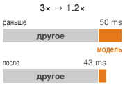
Ускорение отдельного компонента редко сохраняется как ускорение сквозного бенчмарка.
Техники оптимизации действуют на разных гранулярностях: слияние ядер (kernel fusion) работает на микроуровне исполнения, структурированное прореживание меняет параметрические структуры на макроуровне, а отбор данных определяет сквозное обобщение. Валидация системы должна соответствовать этим границам. Изолированный микробенчмарк может показать существенное ускорение ядра, однако макробенчмарк способен выявить, что возросший занимаемый объём памяти под активации вынуждает уменьшать размер батча, что деградирует общую пропускную способность. Аналогично сквозной бенчмарк вскрывает простои из-за хранилища или десериализации на хосте, невидимые на уровне ядра ускорителя.
Периметры измерений расширяются слева направо на Рисунок 4, и на рисунке между макро- и сквозным уровнем вставлен ещё один ярус. Микробенчмарки изолируют слои ядра (ML Layers), макробенчмарки оценивают составные модели (ML Model). Бенчмарк приложения добавляет поддерживающие хост-вычисления вокруг модели (AI Task), а сквозной бенчмарк — не-ИИ вычислительные узлы, через которые также проходит запрос. Три гранулярности в этом разделе сворачивают ярус приложения в сквозной уровень, но четырёхуровневая картина показывает, куда мигрируют узкие места по мере расширения границы: из ускорителя в окружающие его хост-системы.
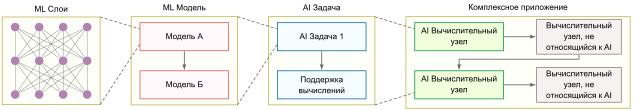
12.3.1 Микробенчмарки
Пока сквозные метрики решают, удовлетворяет ли сервис своему SLO, оптимизация конвейера ускорителя требует изоляции конкретных математических операций, на которые уходят время исполнения и энергия. Микробенчмарки выполняют эту диагностическую роль, оценивая отдельные тензорные операции в изоляции и напрямую измеряя аппаратные примитивы ускорителя. При профилировании медленного сервиса инференса макробенчмарки сообщают об агрегированных нарушениях задержки, но лишь микробенчмарки показывают, чем определяется время исполнения: матричными умножениями, проекциями самовнимания, копированиями памяти через соединение хост–ускоритель или поэлементными ядрами активаций.
↩︎ Вычислительные примитивы, которые изолируют микробенчмарки — векторные и матричные операции и блоки специальных функций, — вводятся в Вычислительные примитивы.
Тензорные операции составляют главный объект микробенчмаркинга, поскольку матричные умножения и свёртки доминируют в арифметическом бюджете глубоких нейронных сетей. Высокооптимизированные библиотеки среды исполнения, такие как cuDNN10 (Chetlur и др. 2014 г.), предоставляют вручную настроенные реализации ядер, заточенные под конкретные микроархитектуры. Микробенчмарки также оценивают отдельные функции активаций (такие как ReLU, Sigmoid и GELU) и структурные подмодули (например, проекции multi-head attention или блоки feed-forward трансформера) на стандартизованных формах входа. Наборы бенчмарков, такие как DeepBench от Baidu (Baidu Research 2016 г.), формализовали эту методологию, оценивая «сырые» примитивы общего матричного умножения (GEMM), свёртки и коллективной коммуникации на разнообразных аппаратных платформах, отделяя эффективность исполнения на уровне кремния от накладных расходов диспетчеризации более высокоуровневых фреймворков.
Измерение изолированных ядер требует строгого экспериментального контроля. Без дисциплинированных протоколов измерения динамическое масштабирование частот оборудования, асинхронные очереди исполнения и состояние кэша вносят переходные артефакты, искажающие время работы ядра.
Системный взгляд 12.4: Правила микробенчмаркинга
Пять правил позволяют микробенчмарку измерять ядро, а не аппаратный артефакт:
- Правило прогрева: не измеряйте итерации холодного старта как установившуюся производительность. Современное оборудование использует DVFS и динамический буст частот; кэшам, ядрам и тактовым частотам нужен прогрев, прежде чем измеряемый цикл будет отражать устойчивое поведение.
- Правило дисперсии: сообщайте коэффициент вариации (CV)
, где и — стандартное отклонение и среднее по повторным запускам. Исследуйте значения выше заданного протоколом порога для конкретной рабочей нагрузки; типичные причины — фоновый джиттер ОС, троттлинг из-за нагрева и конкуренция за память, а 5 процентов — не универсальный порог. - Проверка «скорости света» (SOL): сравнивайте достигнутую пропускную способность с моделью «крыши» (roofline). Если ядро достигает 10 TFLOP/s на H100 (пик ~989 TFLOP/s FP16 или ~1,979 TFLOP/s FP8 dense), диагностическим шагом будет выявление причины низкой утилизации до оптимизации самого кода. Внутри одного ядра типичные причины — слишком мало параллельной работы для загрузки исполнительных блоков либо шаблон доступа к памяти, удерживающий ядро ниже «крыши»; в последовательности мелких ядер причиной часто является задержка запуска между ними, которую пропускает попроверочная проверка одного ядра, но обнажает шкала времени профилировщика.
- Правило состояния кэша: приводите состояние кэша в соответствие с утверждением. Сбрасывайте или превышайте объём кэша L2 при измерении «холодной» пропускной способности динамической памяти (DRAM); сохраняйте прогретый кэш при измерении установившегося повторного использования. Иначе номинальный результат DRAM может на деле отражать пропускную способность кэша (~5 TB/s–10 TB/s), а не DRAM (~1 TB/s–2 TB/s).
- Правило барьера синхронизации: размещайте барьер устройства из Глава 12.2.4 непосредственно до и после измеряемого участка либо используйте события временных меток устройства, чтобы таймер измерял исполнение ядра, а не задержку постановки в очередь на хосте.
Проверка на скорость света в этих правилах сравнивает ядро с моделью «крыши» (roofline)11 из Границы производительности, которая строит границу закона арифметической интенсивности (принцип «Закон арифметической интенсивности»). Этот потолок — предсказание, а бенчмарк — измерение, которое его проверяет. Модель «крыши» ограничивает, где ядро может находиться; бенчмарк определяет, где оно находится на самом деле, и разрыв между ними и есть диагностический сигнал. Ядро, находящееся значительно ниже предсказанного потолка, теряет время на то, что модель не учитывает (накладные расходы на запуск, синхронизацию или плохое слияние обращений к памяти; см. Аппаратное ускорение), — именно это и ищет профилирование.
Чтобы сделать предсказание, нужна арифметическая интенсивность рабочей нагрузки на именованном интерфейсе памяти и соответствующие пределы вычислений и пропускной способности целевой платформы. Для NVIDIA H100 с 989 TFLOP/s плотной производительности FP16 на Tensor Core (FP32 — 67 TFLOP/s)12 и 3.35 TB/s пропускной способности памяти гребневая точка (пиковая вычислительная производительность, делённая на пиковую пропускную способность, — интенсивность, при которой оба потолка пересекаются) приходится на 295 FLOP/byte. Ниже неё нижний потолок задаёт пропускная способность; выше — вычисления (Аппаратные точки хребта выводит этот порог).
↪ Гребневая точка H100, с ограниченным вычислениями матричным умножением и ограниченным памятью поэлементным ядром по обе стороны от неё, собрана для справки в Конкретный пример: анализ H100.
Профилировщик переводит эти правила измерения в физические диагностики, разлагая время исполнения ядра на три определяющих слагаемых «железного закона»: перемещение данных, вычислительная производительность и накладные расходы задержки. Сравнение измеренной утилизации каждого ресурса с аппаратными пределами показывает, какое слагаемое доминирует в трассе.
Системный взгляд 12.5: Измерение членов железного закона
Переход от теории к трассе означает отображение уравнения «железного закона» на шкалу времени профилировщика (такого как Nsight Systems или PyTorch Profiler).
Измерение слагаемого данных
- Сигнал: ищите строку «Memory Throughput» или «DRAM Bandwidth».
- Формула:
. - Диагностика: если
(например, близко к пиковым 3.35 TB/s у H100), давление на пропускную способность — сильный кандидат в узкие места. Проверьте, улучшает ли время снижение трафика или увеличение пропускной способности; само по себе высокое значение пропускной способности не устанавливает, что изменение вычислений ( ) не даёт эффекта.
Измерение достигнутой вычислительной производительности
- Сигнал: отличайте «SM Active» — долю времени, в течение которой стриминговые мультипроцессоры (SM) GPU, его параллельные исполнительные ядра, имеют резидентную работу, — от производительности по исполненным операциям. Занятый мультипроцессор не означает высоких полезных FLOP/s модели.
- Формула:
, указывается в TFLOP/s. - Диагностика: если
И , ни один из заявленных пиков не достигается, и эти два значения сами по себе не могут объяснить почему. Ядра, слишком маленькие, чтобы окупить задержку запуска, простои из-за зависимостей и неэффективный путь доступа к памяти — все они кандидаты в причины, и профилировщики их разделяют.
Измерение слагаемого задержки
- Сигнал: ищите промежутки (пустое пространство) между цветными полосами ядер на шкале времени.
- Формула:
. - Диагностика: паттерн «пилы» (вычисления, промежуток, вычисления, промежуток) указывает на открытое ожидание; прежде чем приписывать его накладным расходам программного обеспечения, сопоставьте диспетчеризацию CPU, зависимости и передачи. Если доминирует диспетчеризация, кандидаты включают слияние ядер (kernel fusion), рассмотренное в Слияние ядер на ускорителе, или CUDA Graphs из Захват графа и JIT-компиляция.
Профилировщики поставляют измерения, которые нужны этому отображению. Профилировщик фреймворка, такой как PyTorch Profiler, изолирует доминирующий слой на шкале времени шага. Профилировщик ядер, такой как NVIDIA Nsight Compute, объясняет её по аппаратным счётчикам производительности на кристалле — методом «сверху вниз», развитым на шаге обучения в Выявление узких мест. Сбор счётчиков и повтор ядра искажают тайминги, поэтому диагностические трассы сравнивают с минимально инструментированным запуском. Применение в бенчмаркинге уже: подтвердить или опровергнуть предсказание.
Эти детальные измерения позволяют точно оптимизировать ядра, но не могут показать, как компоненты взаимодействуют при сборке в полные модели. Этот пробел закрывают макробенчмарки.
12.3.2 Макробенчмарки
Ядро свёртки, достигающее 80 процентов модель «крыши» в микробенчмарке, всё ещё может простаивать, будучи встроено в цепочку из 50 слоёв сети. Макробенчмарки определяют, сохраняются ли операторные выигрыши, когда слои составлены в полную модель. Композиция слоёв вносит физические взаимодействия, которые изолированные бенчмарки наблюдать не могут: промежуточные тензоры активаций расширяют пиковый занимаемый объём памяти, последовательные запуски ядер выставляют наружу накладные расходы диспетчеризации драйвера CPU, а потоки обращений к памяти от предшествующих операций вытесняют разделяемые строки кэша прежде, чем последующие ядра успеют их переиспользовать.
Оценка составленных архитектур моделей и конфигураций среды исполнения на стандартизованных рабочих нагрузках выявляет компромиссы между этими взаимодействиями, включая точность обобщения на невиданных валидационных данных, динамическое выделение памяти при разных размерах батчей и длинах контекста, а также агрегированную пропускную способность при разных паттернах прихода запросов. Архитектура с более высокой точностью может требовать такой объём памяти активаций, что из-за ограничений памяти устройства придётся уменьшить размер батча, обрушив вычислительную производительность, которая оправдывала её выбор. Шаг обучения ResNet-50 проверяет предсказание модели «крыши» именно на этой гранулярности, поскольку предсказание делается послойно, а измерение — на составленной модели.
Инженерный расчёт 12.1: ResNet-50 в модели предельной производительности: прогноз и измерения
Задача: модель «крыши» предсказывает максимум скорости, с которой H100 может обучать ResNet-50, а MLPerf измеряет, насколько быстро это происходит. Насколько велик разрыв и что он говорит о том, куда уходит время?
Предсказание: одно обучающее изображение стоит около 24.6 GFLOP — втрое больше, чем 8.2 GFLOP прямого прохода, поскольку обратный проход вычисляет градиенты и по активациям, и по весам. При обучающих размерах батчей свёрточные слои переиспользуют каждый вес на сотнях изображений и находятся выше гребня 295 FLOP/byte, поэтому модель «крыши» помещает шаг на вычислительную «крышу». Деление пиковых 989 TFLOP/s на работу на изображение даёт потолок около 40,200 images/s.
Измерение: в MLPerf Training v3.1 система NVIDIA на H100 с 64 ускорителями обучала ResNet-50 со скоростью около 5,000 images/s на ускоритель, что даёт около 123 TFLOP/s модельной арифметики — 12.4 percent от пика.
Диагностика: измерение оказывается в 8.0× ниже предсказания. Модель «крыши» не ошиблась: она ограничила свёртки и не учла остальное в шаге. Слои нормализации и поэлементные слои имеют интенсивность значительно ниже гребня и работают на наклонной «склоне» пропускной способности, хост должен декодировать и аугментировать тысячи JPEG-изображений каждую секунду, а каждый шаг платит накладными расходами на запуск и синхронизацию. Предсказание не может сказать, какое из этих слагаемых доминирует. Профилировщик распределяет разрыв между ними (perspective 12.5), а Выявление узких мест выполняет эту атрибуцию для шага обучения.
Системный вывод: предсказание и измерение вместе локализуют узкое место; поодиночке — нет. Модель «крыши» говорит, что ResNet-50 мог бы обучаться на этом ускорителе в 8.0× быстрее, а измерение говорит, что его темп задаёт что-то иное, кроме арифметики.
Утверждение, унаследованное этой главой, — что ResNet-50 работает быстрее в INT8, чем в FP32, — требует иного макробенчмарка, нежели обучающий. Его напрямую решает инференс-запуск по правилам MLPerf Inference. Сценарий Offline бенчмарка для ResNet-50 на ImageNet (Deng и др. 2024 г.), который отдаёт системе все входы сразу и измеряет объемную пропускную способность (Глава 12.4.4.1.4), можно запустить в INT8 и на базовой линии повышенной точности на одном ускорителе при фиксированных размерах батчей. Каждый запуск должен удерживать эталонную точность top-1 в пределах целевого качества бенчмарка, так что обе пропускные способности и задержки сообщаются по одному набору правил. Макробенчмарки обработки естественного языка применяют ту же дисциплину уровня модели к переводу «последовательность-в-последовательность» и авторегрессионной генерации, сопоставляя качество выхода со скоростью генерации токенов при заданных длинах контекста.
Индустриальные стандартные наборы делают эти сравнения на уровне моделей воспроизводимыми между платформами. Набор MLPerf охватывает дата-центры, пограничные устройства, мобильные устройства и микроконтроллеры (Глава 12.6.3), MLMark от EEMBC количественно оценивает пропускную способность инференса и энергию при строгих ограничениях встраиваемой памяти, а AI-Benchmark (Ignatov и Timofte 2024 г.) оценивает мобильные системы на кристалле с разнородными вычислительными блоками. Собственное развёртывание в главе переходит на MobileNetV2 на плате фотоловушки, где даже бенчмарк составленной модели ещё недостаточен, потому что синхронометрирование только модели упускает этапы предобработки на хосте, хранения и передачи, окружающие её в сквозном конвейере.
12.3.3 Сквозные бенчмарки
В сервисе компьютерного зрения декодирование сжатого JPEG-изображения, изменение размера, кадрирование и нормализация цветов на CPU хоста могут занимать в несколько раз больше времени, чем исполнение самой модели на современном ускорителе, оставляя высокопроизводительные тензорные ядра бездействующими в ожидании передач из памяти хоста. Макробенчмарки, начинающиеся с заранее подготовленного тензора, никогда не видят этого простоя. Сквозные бенчмарки охватывают весь производственный конвейер, фиксируя каждый этап, необходимый для приёма исходных данных, генерации предсказаний модели и доставки результатов нисходящим клиентам. Во всех рабочих нагрузках основное узкое место часто находится именно в этих окружающих этапах: конвейеры обработки естественного языка могут ограничиваться субтокенизацией на CPU хоста и динамическим дополнением последовательностей, а конвейеры детекции объектов — последовательной постобработкой, такой как подавление немаксимумов (NMS) и преобразования координат ограничивающих рамок, пока эти шаги остаются вне ускоряемого графа.
↩︎ Проблема кормления — время по настенным часам, которое ускоритель теряет в ожидании входного I/O, — установлена в Проблема питания данных.
Распределённые инфраструктурные компоненты вносят дополнительные ограничения производительности помимо вычислительного fabric. Удалённые системы хранения ограничивают пропускную способность обучения при чтении больших мультимодальных наборов данных, а насыщенный сетевой канал между машинами замедляет обмен градиентами, который многомашинное обучение выполняет на каждом шаге. Сквозные бенчмарки должны измерять пропускную способность конвейера при реалистичных сетевых задержках, паттернах одновременного прихода запросов и фактических ограничениях I/O хранилища, чтобы обеспечить воспроизводимую оценку развёртывания как интегрированной системы.
Публичные наборы бенчмарков редко измеряют хранилище, сеть и вычисления в рамках единого протокола. Хотя MLPerf Training и Inference оценивают сквозные сценарии ближе к реальности, чем изолированные тесты операторов, их закрытые дивизионы (категории, в которых каждый участник запускает одну и ту же референсную модель по одним и тем же правилам, Глава 12.4.4) намеренно стандартизируют загрузку входных данных, чтобы изолировать производительность ускорителя от вариативности хранилища и сети. В результате сквозное бенчмаркинг-тестирование в продакшене остаётся по преимуществу внутренней инженерной практикой: оценка выполняется через распределённую трассировку и продакшен-телеметрию на живых распределениях запросов, где первый диагностический шаг — отделить время исполнения модели от остальной части запроса.
12.3.4 Сквозная и покомпонентная задержка
Когда разработчики системы обслуживания Clipper профилировали конвейеры для лёгких моделей, десериализация JSON на стороне CPU и копирование данных между процессами занимали больше реального времени, чем исполнение модели на ускорителе (Crankshaw и др. 2017 г.). Отчёт только о задержке модели скрыл бы наибольшую стоимость в пути запроса — узкое место сериализации, которое разбирается в Узкое место сериализации для систем обслуживания. При измерении на уровне запроса ключевое различие, следовательно, заключается между покомпонентной задержкой (время, затраченное на вычисления модели) и сквозной задержкой (полное время от прихода запроса до доставки ответа). Поскольку сериализация, сетевые переходы и ожидание в очереди могут доминировать в общем времени запроса, бенчмарки, сообщающие только время инференса модели, затемняют то, что испытывает пользователь, и преувеличивают отдачу от оптимизаций, ограниченных моделью.
Таблица 6 даёт иллюстративную декомпозицию задержки для запроса инференса. Стадия инференса модели, которую вендоры приводят как своё число «бенчмарка», занимает от 5 до 100 ms, однако ожидание в очереди, за которым она стоит, составляет от 0 до более 1000 ms. Под нагрузкой единственный компонент, который измеряет бенчмарк, бледнеет рядом с тем, который он никогда не видит, поэтому приводимое число может оказаться лишь малой долей того, что в действительности испытывает пользователь.
| Компонент | Примерный диапазон | Примечания |
|---|---|---|
| Сетевой round-trip | 10–100 ms | Зависит от региона |
| Разбор запроса | 0.1–1 ms | JSON/protobuf |
| Предобработка входа | 1–50 ms | Токенизация, изменение размера изображения |
| Ожидание в очереди | 0–1000+ ms | Зависит от нагрузки |
| Инференс модели | 5–100 ms | Тот самый «бенчмарк» |
| Постобработка вывода | 0.5–10 ms | Декодирование, формат |
| Сериализация ответа | 0.1–1 ms | JSON/protobuf |
Эти покомпонентные вклады объясняют, почему оптимизация любой отдельной стадии даёт убывающую отдачу для сквозной производительности — это потолок оптимизации, формализуемый законом Амдала (принцип «Закон Амдала»). Само ограничение приведено в Уравнение (1), выведенном в Аппаратное ускорение для ускоряемого пути; приведённый ниже ноутбук применяет его к измеренному конвейеру.
Инженерный расчёт 12.2: Закон Амдала: потолок оптимизации
Задача: Конвейер обработки изображений тратит 8 ms на предобработку (декодирование JPEG, изменение размера, нормализация) и 10 ms на инференс. Если оптимизировать только инференс в 5×, насколько фактически улучшится сквозная задержка?
Математика: Предположим фиксированный объём работы, последовательные стадии и неизменённую предобработку, без обратной связи от очередей. Оптимизация инференса с 10 ms до 2 ms снижает общую задержку с 18 ms лишь до 10 ms — улучшение в 1.8×, а не в 5×. Закон Амдала формализует этот потолок: если инференс — ускоряемая часть — составляет долю
Системный вывод: Агрессивная оптимизация модели даёт разочаровывающие сквозные результаты всякий раз, когда доминирует недодельная модели доля. Любое ускорение компонента, приводимое изолированно, уменьшается, как только нетронутые стадии измеряются вместе с ним, и расхождение растёт по мере того, как эти стадии занимают большую долю конвейера. Исчерпывающие бенчмарки должны либо включать предобработку в измерения, либо явно оговаривать, что приводимые ускорения относятся только к компоненту инференса.
Таким образом, отчёт о задержке, поддерживающий решение о развёртывании, указывает, какие компоненты он включает, под какой нагрузкой проводилось измерение и является ли каждое число покомпонентным или сквозным. Выбор этой границы — компромисс между изоляцией узкого места отдельного компонента и измерением того, что испытывает пользователь.
12.3.5 Компромиссы гранулярности и критерии выбора
Выбор границы измерения означает выбор вопроса, на который должен ответить бенчмарк: инженеру, настраивающему ядро свёртки, нужна микроуровневая изоляция без сетевого дрожания; архитектору, сравнивающему ResNet-50 и MobileNetV2, нужен макроуровневый состав модели; инженеру выпуска, сертифицирующему SLO, нужен полный сквозной путь запроса. Таблица 7 сопоставляет диагностический фокус, охват и компромиссы трёх уровней гранулярности.
| Компонент | Микробенчмарки | Макробенчмарки | Сквозные бенчмарки |
|---|---|---|---|
| Фокус | Отдельные операции | Полные модели | Полный системный конвейер |
| Охват | Тензорные операции, слои, активации | Архитектура модели, обучение, инференс | Извлечение, преобразование, загрузка; модель; инфраструктура |
| Пример | Производительность свёрточного слоя на cuDNN | ResNet-50 на ImageNet | Продакшен-система рекомендаций |
| Преимущества | Точная идентификация узких мест, оптимизация компонента | Сравнение архитектур моделей, стандартизованная оценка | Реалистичная оценка производительности, системные выводы |
| Сложности | Может пропустить эффекты взаимодействия | Ограниченные выводы об инфраструктуре | Сложно стандартизовать, часто проприетарно |
| Типичное применение | Выбор оборудования, оптимизация операций | Выбор модели, исследовательское сравнение | Оценка продакшен-системы |
Выбор единственного уровня гранулярности редко бывает достаточным, поскольку бенчмаркинг содержит присущий компромисс между диагностической изоляцией и производственной репрезентативностью. Вдоль нисходящей диагонали на Рисунок 5 режимы оценки обменивают диагностическую силу на операционную реалистичность. Микробенчмарки (красная точка вверху слева) изолируют поведение на уровне ядра, такое как достигаемая пропускная способность памяти, ценой сквозного контекста. Макробенчмарки (синяя центральная точка) улавливают композиционные топологии моделей. Сквозные бенчмарки (зелёная точка внизу справа) охватывают живой продакшен-трафик, но затемняют корневые причины всплесков задержки. Эффективная оценка требует стратегического сочетания всех трёх уровней, чтобы убедиться, что ускорения ядер переживают развёртывание в полной системе.
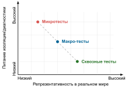
Этот компромисс напрямую отображается на таксономию D·A·M. Микробенчмарки оценивают физическую возможность Машины (
Ремесленничество и гранулярность позволяют одной команде построить достоверное измерение. Сравнение этого измерения с измерением другой команды или вендора требует, чтобы оба были построены одинаковым образом — и именно такое согласие обеспечивают стандартизованные наборы бенчмарков.
12.4 Наборы бенчмарков
Без единого протокола измерений команда, оценивающая пять кандидатских архитектур системы-на-чипе (SoC) для следующей платы камеры-ловушки, сталкивается с несопоставимыми заявлениями. Вендор A сообщает о 8 TOPS (триллионах операций в секунду) при INT8; вендор B — о 15 TOPS при INT4; вендор C приводит задержку инференса на проприетарной модели; вендор D цитирует результаты MLPerf двух поколений назад; вендор E указывает лишь пиковую пропускную способность при максимальном размере батча. Ни одну из этих цифр нельзя напрямую сравнить с другой, поскольку каждый вендор выделяет выгодный ему показатель в специфических условиях, скрывая реальные эксплуатационные компромиссы. Стандартизованные наборы бенчмарков устраняют эту раздробленность, вводя единые измерительные оболочки и правила оценки для всех представленных результатов.
Каждое поколение наборов бенчмарков возникало, чтобы закрыть разрыв именно такого рода — когда показатели эпохи переставали предсказывать то, что ощущали пользователи. Их история объясняет правила, которые современные наборы соблюдают.
12.4.1 От Whetstone к MLPerf
Три сдвига отмечают эту историю: переход от изолированных ядер к репрезентативным наборам приложений, от однопоказательной пропускной способности к многоцелевым энергетическим профилям и от обобщённых вычислительных метрик к доменно-специфичным ограничениям исполнения. Самые ранние вычислительные бенчмарки были уязвимы к «игре с бенчмарком». Whetstone (Curnow и Wichmann 1976 г.) использовал синтетическую смесь научных операций, а LINPACK (Dongarra и др. 1979 г.) измерял решение плотных систем линейных уравнений. Поскольку оба опирались на предсказуемые вычислительные циклы, производители компиляторов и аппаратного обеспечения могли оптимизировать код под ядра бенчмарка (разворачивая синтетические циклы или подгоняя разбиение кэша на тайлы под точные размерности матриц), не улучшая производительность реальных приложений. SPEC CPU (1989) решил эту проблему, оценивая полные переносимые программные наборы, нагружающие целочисленное ветвление, нерегулярные иерархии памяти и конвейеры с плавающей запятой (Dixit 1993 г.). Та же уязвимость применима и к машинному обучению. Подобно тому как компиляторы подгонялись под циклы Whetstone, ядра и схемы сжатия могут подгоняться под одну модель, не помогая никакой другой, поэтому заявления о сжатии моделей требуют валидации на репрезентативных задачах, таких как ResNet-50 и BERT, поверх полного программного стека исполнения.
Распределённые вычисления добавили ещё один урок: микробенчмарки уровня компонентов не предсказывают пропускную способность кластера, когда латентность соединений, сериализация и коллективная коммуникация доминируют во времени выполнения — как это происходит при распределённом обучении в машинном обучении. Чтобы уловить эти взаимодействия, DAWNBench (Coleman и др. 2019 г.) внедрил оценку «время до точности» (time-to-accuracy), связав пропускную способность аппаратуры с алгоритмической сходимостью. Максимизация числа примеров в секунду не имеет инженерной ценности, если численная нестабильность или неудачный размер батча не позволяют модели достичь целевой валидационной точности. MLPerf13 (2018) объединил эти уроки и институционализировал измерение всей системы, многоцелевые ограничения и репрезентативные рабочие нагрузки, охватывающие зрение, язык и рекомендации (Mattson и др. 2020 г.; Reddi и др. 2019 г.).
Энергопотребление прошло тот же путь. SPEC Power (2007) (Lange 2009 г.) и Green500 (2007) (Feng и Cameron 2007 г.) сделали производительность на ватт рейтинговой метрикой для серверов и суперкомпьютеров. MLPerf Power (MLCommons 2024 г.b) перенёс этот подход на рабочие нагрузки машинного обучения, чьи резкие колебания энергопотребления и общие компоненты хоста требуют калиброванных приборов и явных границ измерения (Глава 12.7.4).
Бенчмаркинг энергопотребления также выявляет алгоритмическую эффективность. Сжатие и эффективные архитектуры, такие как MobileNet (Howard и др. 2017 г.; Sandler и др. 2018 г.), экономят энергию, сокращая число операций и трафик за пределами кристалла. Сокращение трафика — первостепенный рычаг, потому что чтение из DRAM стоит на порядки больше энергии, чем арифметическая операция (Где точность экономит энергию).
С появлением специализированных ускорителей обобщённые бенчмарки перестали отражать доменно-специфичные ограничения исполнения. Учебные кластеры центров обработки данных оптимизируют суммарную пропускную способность в пределах лимитов энергопотребления стойки, мобильный ИИ работает в пределах тепловых ограничений (обычно менее 5 ватт), а встраиваемые микроконтроллеры функционируют в милливаттных бюджетах. Эти бюджеты определяют, приоритизирует ли бенчмарк число примеров в секунду или джоули на инференс. Требования приложений добавляют функциональные ограничения, такие как калибровка для клинических моделей, жёсткие пороги хвостовой задержки для торговых систем и ограниченная задержка в худшем случае для автономных автомобилей.
Поскольку рабочие нагрузки машинного обучения связывают тензорные вычислительные блоки, пропускную способность памяти и коммуникационные fabric, ни одна метрика или рабочая нагрузка не может охарактеризовать систему. Поэтому MLPerf разделяется на отдельные наборы для развёртывания. MLPerf Training оценивает масштабирование на нескольких узлах и высокоскоростные соединения при целевых показателях «время до качества» (Mattson и др. 2020 г.). MLPerf Inference измеряет пропускную способность и перцентили задержки при SLO на задержку в серверных и клиентских системах (Reddi и др. 2019 г.). MLPerf Tiny тестирует ультранизкопотребляющие микроконтроллеры, работающие в условиях жёстких ограничений памяти (Banbury и др. 2021 г.). Сквозной трек MLPerf Power измеряет полезную работу на ватт в каждой из сред. Читая колонку ограничений таблицы Таблица 8 сверху вниз, видим, что межузловая пропускная способность кластерного масштаба уступает место перцентилям задержки на периферии и, наконец, строгим требованиям к занимаемому объёму памяти на микроконтроллерах.
| MLPerf Variant | Целевой домен | Ключевые ограничения | Основные метрики |
|---|---|---|---|
| MLPerf Training | Центр обработки данных | Масштабирование на нескольких узлах, высокоскоростные соединения | Время до качества, пропускная способность (примеров/с) |
| MLPerf Inference | Сервер/периферия | SLO на задержку, требования к пропускной способности | QPS, перцентили задержки, сохранение точности |
| MLPerf Tiny | MCU/IoT | Ультранизкопотребляющий инференс, ограниченная память | Задержка, точность, энергия на инференс |
| MLPerf Power | Сквозной | Энергетические бюджеты, тепловые ограничения | Производительность/Вт, энергия на запрос |
Таблица 9 обобщает эволюцию от ранних синтетических циклов к многомерной оценке ML-систем: для каждого бенчмарка указана его собственная метрика, например миллионы инструкций Whetstone в секунду (MWIPS) у Whetstone и серверные Java-операции на ватт (ssj_ops/W) у SPEC Power; урок каждой строки сохраняется как правило, которое соблюдают современные наборы. В машинном обучении эти правила становятся ещё строже, поскольку обучение и инференс добавляют вариативность, с которой детерминированные программные бенчмарки никогда не сталкивались.
| Бенчмарк | Год | Основной фокус | Ключевая метрика(и) | Урок для бенчмаркинга ML |
|---|---|---|---|---|
| Whetstone | 1976 | Синтетические операции с плавающей запятой | MWIPS | Игра с синтетическими тестами подрывает валидность оценки |
| LINPACK | 1979 | Линейная алгебра (матричные операции) | FLOP/s | Изолированные операции упускают системную сложность и узкие места |
| SPEC CPU | 1989 | Реальные прикладные рабочие нагрузки | SPECrate, SPECspeed | Репрезентативные нагрузки раскрывают реальную эксплуатационную производительность |
| SPEC Power | 2007 | Энергоэффективность серверов | ssj_ops/W по уровням нагрузки | Энергоэффективность требует оценки при разных нагрузках, а не только пика |
| Green500 | 2007 | Энергоэффективность HPC | GFLOP/s на ватт | Рейтинги эффективности дополняют рейтинги «сырой» производительности |
| MLPerf | 2018 | ML-системы (обучение + инференс) | Время до качества, QPS, задержка, точность | Синтезирует все уроки: репрезентативные нагрузки + многоцелевость + система |
12.4.2 Проблемы измерений в машинном обучении
Три урока истории бенчмарков (репрезентативные рабочие нагрузки, многоцелевая оценка и интегрированное измерение системы) сходятся в требовании, уникальном для машинного обучения: управление статистической аппроксимацией. Традиционные вычислительные бенчмарки задают проверки корректности, которые могут требовать точных выходов или допускать заявленные численные допуски. В ML-системах низкоуровневые инженерные решения регулярно меняют численный результат: агрессивная квантизация весов, прореживание ядер или аккумуляторы пониженной точности обменивают точность на скорость исполнения и меньшее давление на пропускную способность памяти. Следовательно, ML-бенчмарк не может оценивать время исполнения изолированно; точность выхода служит неприкосновенным эксплуатационным ограничением.
Оценка ML-системы, таким образом, означает проверку связанных вместе решений «Данные, Алгоритм, Машина» (Data, Algorithm, Machine — D·A·M), а не измерение «сырой» вычислительной пропускной способности. Набор заслуживает доверия, решая три задачи. Он должен давать валидные измерения вопреки шуму между запусками, конечным тестовым наборам, нерепрезентативным нагрузкам и рассогласованным метрикам. Затем он должен изолировать вклад программно-аппаратного стека — в этом задача системного бенчмарка и его диагностической модели «крыши». Наконец, он должен делать результаты сопоставимыми между организациями — в этом задача стандартизации сообществом.
ML-системы объединяют несколько источников вариативности измерений, которые классические программные бенчмарки не были рассчитаны оценивать совместно. Эти флуктуации возникают как на уровне машины, так и на уровне алгоритмов. На стороне машины длительное исполнение прижимает ускорители к тепловым и энергетическим лимитам, запуская DVFS, которая снижает тактовые частоты процессора посреди запуска. Активность операционной системы хоста (джиттер планирования потоков, страничный обмен памятью и конкуренция за шину PCIe при подготовке батчей) дополнительно вносит вариацию задержки между запусками. На стороне алгоритмов параллельные потоки исполнения могут менять порядок операций сокращения с плавающей запятой, что слегка сдвигает результаты. Перемешивание мини-батчей, псевдослучайные аугментации, стохастические маски dropout и инициализация весов также возмущают траекторию стохастического градиентного спуска по невыпуклой поверхности потерь.
Чтобы отличить подлинную системную оптимизацию от фонового шума измерений, необходимо изолировать эти перекрывающиеся источники вариативности с помощью повторных запусков, парных сравнений и доверительных интервалов. Эти статистические методы применимы к каждому бенчмарку главы, поэтому Глава 12.8.1 собирает их в одном месте, включая то, насколько большим должен быть тестовый набор, чтобы разрешить разницу точности в один пункт.
Помимо вариативности между запусками, валидность бенчмарка зависит от репрезентативности рабочей нагрузки. Синтетические микробенчмарки генерируют однородные статически заданные тензоры прямо в HBM ускорителя. Исполняя непрерывные ограниченные вычислениями операции GEMM в изолированном цикле, микробенчмарки измеряют теоретический пик арифметической пропускной способности. Однако они скрывают иерархии памяти и узкие места планирования, доминирующие в производственных развёртываниях. Синтетические нагрузки минуют передачи данных PCIe от хоста к устройству, конвейеры декодирования входа, «перемалывание» динамического выделения памяти и вытеснения из кэша GPU. Напротив, бенчмаркинг на трассах воспроизводит журналы запросов с временными метками, записанные в живых обслуживающих кластерах. Производственные трассы захватывают пуассоновские и всплесковые распределения прихода запросов, переменную длину последовательностей и одновременные потоки запросов. Воспроизведение живых трасс заставляет обслуживающую инфраструктуру управлять динамическим формированием батчей (группировкой запросов, пришедших в коротком временном окне, в один батч), выделением KV-кэша (key-value) при дефиците памяти и задержками в очередях — стресс-тестированием системы в эксплуатационных условиях, которые скрыты синтетическими стационарными циклами.
↩︎ KV-кэш (key-value) — состояние внимания на запрос, растущее с каждым сгенерированным токеном, — вводится в Системные следствия.
Репрезентативная рабочая нагрузка всё же может вводить в заблуждение, если метрика оценки не отражает ограничений развёртывания. Когда инженерная команда оптимизирует отдельный алгоритмический показатель (например, офлайн-оценку BLEU, top-1 точность классификации или перплексию токенов) в отрыве от системных SLO, метрика перестаёт измерять подлинную эксплуатационную пригодность. Это расхождение — второй принцип главы, закон Гудхарта, действующий внутри выбора метрики одной командой: как только прокси становится единственной целью оптимизации, он перестаёт сообщать о здоровье системы в целом. В нейронном машинном переводе офлайн-оптимизация точности может полностью сорвать срок обслуживания.
Пример 12.1: Закон Гудхарта в действии
Сценарий: Инженерная команда оптимизирует модель нейронного машинного перевода по офлайн-оценке BLEU, увеличивая размер beam search (число частичных переводов-кандидатов, сохраняемых на каждом шаге декодирования) с 1 до 10.
Диагноз: Увеличенный beam search даёт «на бумаге» прирост BLEU на 0.5 пункта, но увеличивает число оценок кандидатов в 10×, поднимая задержку инференса с 50 ms до 200 ms (замедление в 4×), что превышает срок обслуживания.
Системный урок: Оптимизация офлайн-точности без ограничений на задержку приглашает сбои по закону Гудхарта. Производственные бенчмарки должны соблюдать строгие SLO на задержку обслуживания (например, задержка < 100 ms).
Пример с переводом показывает, как алгоритмическое изменение (beam шире в 10×) умножает вычислительную нагрузку и трафик памяти ради маргинального прироста качества, нарушая при этом аппаратный дедлайн по задержке.
Фиксированный бенчмарк к тому же оценивает исполнение при неизменном распределении входных данных, скрывая, как системы деградируют при производственных сдвигах распределения, поэтому оценка модели и данных должна проверять эти пределы распределения отдельно. Системные сравнения задают другой вопрос. Они фиксируют модель и набор данных, чтобы изолировать, насколько эффективно инфраструктура исполняет рабочую нагрузку, и стандартизованные наборы вроде MLPerf делают этот контроль явным. Они устанавливают эталонные рабочие нагрузки, наборы данных, целевые показатели качества и допустимые изменения реализации, обеспечивая воспроизводимые сравнения эффективности исполнения программно-аппаратного стека в пределах указанной версии и дивизиона бенчмарка.
12.4.3 Системные бенчмарки
Технические характеристики оборудования рекламируют пиковые скорости вычислений, которые рабочие нагрузки приложений не способны поддерживать. Обучение ResNet-50, например, достигает значительно меньшего объёма арифметики над моделью, чем плотный FP16-пик H100 (Глава 12.1). Системные бенчмарки выявляют этот разрыв, прогоняя стандартизованные ML-рабочие нагрузки на различных аппаратных архитектурах, подсистемах памяти и межсоединениях, вместо того чтобы полагаться только на пиковые значения из спецификаций.
Базовое оборудование — будь то CPU, GPU, тензорные процессоры (TPU),14 или специализированные интегральные схемы (ASIC),15 — определяет скорость, эффективность и масштабируемость ML-системы. Системные бенчмарки предоставляют стандартизованные методы сравнения оборудования для AI-рабочих нагрузок по вычислительной пропускной способности, пропускной способности памяти, энергоэффективности, покрытию операторов и масштабированию (Reddi и др. 2019 г.; Mattson и др. 2020 г.).
Системные бенчмарки выполняют две функции. Для практиков они обеспечивают обоснованный выбор оборудования, предоставляя сравнительные данные по различным конфигурациям. Для производителей они количественно оценивают улучшения между поколениями и направляют развитие ускорителей. Обе функции требуют отделять вклад самого оборудования от вклада модели и данных.
Определение 12.2: Бенчмарки систем машинного обучения
Бенчмарки систем машинного обучения — это стандартизованные протоколы оценки, которые фиксируют рабочую нагрузку и целевой показатель качества, варьируя аппаратно-программный стек, и измеряют
- Значимость: одна и та же модель ResNet-50 может показывать одинаковую точность ImageNet Top-1, но давать сильно различающуюся пропускную способность на разных аппаратных стеках, форматах точности, размерах батчей и конфигурациях компилятора. Именно системный бенчмарк выявляет этот разрыв.
- Отличие: в отличие от алгоритмических бенчмарков (которые варьируют факторы Данных и Алгоритма,
и — произведение которых даёт количество операций, — чтобы улучшить сходимость или точность), системные бенчмарки фиксируют алгоритм и целевой показатель качества и варьируют реализацию (библиотеки ядер, форматы квантизации, размеры батчей и поколения оборудования). Они измеряют, насколько эффективно аппаратно-программный стек исполняет рабочую нагрузку. В терминах «железного закона» оптимизация снижает реализованный фактор Машины ( , время, которое стоит каждая операция) по трём составляющим: вычисления ( ), перемещение данных ( ) и фиксированная задержка ( ). - Типичная ошибка: распространённое заблуждение состоит в том, что результат системного бенчмарка обобщается на любые рабочие нагрузки. Ускоритель, достигающий высокой утилизации на ResNet-50 (дружественной к вычислениям зрительной нагрузке), может показывать гораздо более низкую утилизацию на рекомендательной системе, где поиск по эмбеддингам ограничен памятью — ёмкостью и пропускной способностью, а не арифметикой. Системные бенчмарки специфичны для конкретной рабочей нагрузки; ни одна метрика в отдельности не характеризует аппаратную платформу.
Задача ImageNet показывает, почему отделить вклад оборудования от вклада модели задним числом трудно. С 2010 по 2014 год ошибка top-5 (синяя линия на Рисунок 6) снизилась с 28,2 процента до 7,3 процента, причём самый резкий единовременный скачок пришёлся на появление AlexNet в 2012 году. За те же годы доля решений с ускорением на GPU (зелёные столбцы) выросла с нуля до более чем 100 (Krizhevsky и др. 2012 г.; Russakovsky и др. 2015 г.; Gray 2015 г.). Эти парные ряды отображают одновременные эмпирические тенденции, а не причинно-следственную атрибуцию того, какая часть прироста точности проистекала из пропускной способности оборудования, а какая — из алгоритмического дизайна, расписаний обучения или расширения набора данных. Системный бенчмарк устраняет эту неоднозначность по построению: он фиксирует модель и целевой показатель качества, так что любое изменение результата относится на счёт аппаратно-программного стека.
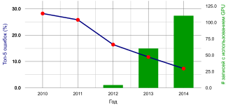
В то время как Глава 12.9.1 оценивает сжатие модели относительно базовых линий точности задачи, системный бенчмаркинг изолирует эффективность исполнения аппаратно-программного стека при фиксированной модели. Современные ускорители редко поддерживают теоретический пик пропускной способности, потому что физическое исполнение зависит от связки между формами тензоров и иерархией памяти. Обучение ResNet-50, которое по модели «крыши» лежит на вычислительной «крыше», поддерживает около 12.4 percent пика H100 (ноутбук 12.1). Декодирование трансформеров с большим числом параметров и свёрточные проходы с большими активациями нагружают совершенно разные уровни подсистемы памяти, поэтому один и тот же ускоритель поддерживает очень разные доли своего пика на этих двух рабочих нагрузках.
Измерение устойчивой утилизации вместо пиковой способности меняет ещё две части системного бенчмарка: учёт энергии и охват несколькими ускорителями. Во-первых, энергия на единицу работы зависит от утилизации, потому что недогруженный ускоритель всё равно потребляет значительную статическую мощность, производя мало вычислений, а производительность на ватт сильно различается между аппаратными платформами. Во-вторых, исполнение на нескольких ускорителях вводит коммуникационные границы. Хотя масштабирование на многоузловых кластерах затрагивает эффекты сетевой топологии, выходящие за рамки одноузлового охвата этой книги, бенчмаркинг внутри узла должен учитывать пропускную способность межсоединений, разделение памяти между ускорителями и синхронизацию градиентов по NVLink или PCIe.
12.4.4 Стандартизация силами сообщества
Без общих границ измерения показатели утилизации невозможно сравнивать. Если один бенчмарк включает предобработку на хосте и PCIe-передачи, а другой измеряет только исполнение ядер на устройстве, или если один измеритель мощности считывает только шину питания ускорителя, а другой включает хост-процессоры и вентиляторы корпуса, полученные цифры отражают несовместимые границы, а не архитектурную эффективность. Ни один отдельный производитель не может устранить это расхождение, потому что у каждого есть коммерческий стимул проводить границу вокруг сильных сторон собственного оборудования. Формальные органы стандартизации движутся слишком медленно для структур оборудования и моделей, меняющихся каждый год, поэтому консорциумы вроде MLCommons поддерживают «живые» наборы бенчмарков. Они сочетают эталонные реализации с открытым исходным кодом и правилами соответствия, чтобы цифры из разных лабораторий описывали сопоставимые рабочие нагрузки при одной версии, дивизионе, целевом показателе качества и сценарии.
Стандартизация системных бенчмарков требует формализации таксономии D·A·M, чтобы оценки изолировали фактор Машины, не смешивая его с изменениями Алгоритма или Данных. Бенчмарк MLPerf Training обеспечивает это разделение, измеряя время до обучения до заданного целевого показателя качества, а не сырую производительность операций с плавающей точкой или длительность эпохи (Mattson и др. 2020 г.). Высокий TFLOP/s от агрессивного использования низкой точности помогает лишь тогда, когда ускорение шагов перевешивает дополнительную работу, требуемую для достижения цели; прогон, не достигший цели, недействителен.
MLPerf разделяет подачи на два дивизиона. В закрытом дивизионе каждая подача должна использовать эталонную модель и достигать того же целевого показателя качества, так что различия во времени обучения относятся на счёт системы. Открытый дивизион допускает изменения модели и алгоритма, поэтому его результаты сравнивают целые решения, а не машины. Внутри закрытого дивизиона правила ограничивают рабочую нагрузку, но допускают указанные настраиваемые гиперпараметры и одобренные числовые форматы. Проверки качества и соответствия определяют, какие улучшения оборудования, компилятора и конфигурации обучения составляют допустимые подачи.
Бенчмарк MLPerf Inference применяет эту дисциплину к ограничениям промышленного развёртывания (Reddi и др. 2019 г.). Ускоритель не может просто сообщить пиковую пропускную способность при бесконечном батчинге, если интерактивное обслуживание требует гарантированной отзывчивости. Поэтому бенчмарк фиксирует, как поступают запросы, — через сценарии исполнения, сопоставленные с физическими режимами работы: один запрос за раз для единственного интерактивного пользователя, случайно поступающие запросы при ограничении на хвостовую задержку для общего сервиса и все входные данные, предоставляемые заранее, для массовой пропускной способности. Стандартизуя эти границы исполнения, бенчмарки сообщества учитывают задержки очередей и передачи «хост—устройство» по PCIe, делая явными тестируемые границы нагрузки и тайминга при интерпретации заявлений о пропускной способности.
Сценарии исполнения MLPerf
Одно и то же оборудование может показывать драматически разные числа бенчмарков в зависимости от того, как поступают запросы, — этим объясняется, почему заявления вендоров часто не позволяют предсказать производительность в эксплуатации. Классический MLPerf Inference определяет четыре сценария исполнения, характеризующие различные паттерны трафика, каждый из которых требует своих стратегий оптимизации (Reddi и др. 2019 г.). Помимо четырёх классических сценариев, описанных ниже, современные клиентские и генеративно-AI варианты бенчмарков включают также интерактивные измерения для чувствительных к задержке рабочих нагрузок больших языковых моделей (LLM), где центральными становятся время до первого токена и время на выходной токен — две измеряемые величины, определённые в Глава 12.6.2.2. Обе отражают то, что ощущает пользователь, читая ответ по мере его потоковой передачи.
Однопоточный режим
SingleStream обрабатывает один запрос за раз, измеряя задержку последовательного инференса. Этот сценарий моделирует мобильные и встраиваемые приложения, где с устройством взаимодействует единственный пользователь: приложение камеры смартфона, классифицирующее изображения, голосовой ассистент, обрабатывающий речь, или носимое устройство, распознающее жесты. Ключевая метрика — хвостовой перцентиль задержки на запрос (90-й перцентиль по правилам MLPerf), а формирование батчей между запросами недоступно, поскольку следующий запрос приходит после завершения предыдущего. Оптимизация сосредоточена на эффективности предобработки и энергопотреблении, а не на пропускной способности.
Многопоточный режим
MultiStream обрабатывает несколько синхронизированных входных потоков одновременно, моделируя сценарии вроде автономных автомобилей с несколькими камерами, данные которых нужно обрабатывать совместно для пространственного слияния. Бенчмарк измеряет, сколько времени система затрачивает на завершение группы входов, поступающих вместе. По действующим правилам каждый запрос несёт несколько образцов (например, по одному на камеру), следующий запрос ждёт завершения предыдущего, а оценкой является заданный перцентиль задержки по этим сгруппированным запросам. Более ранние версии использовали фиксированные интервалы поступления. Задержка сгруппированных запросов помогает оценивать исполнение с несколькими входами; она не устанавливает гарантию жёсткого дедлайна для контура планирования автомобиля.
Серверный режим
Server генерирует запросы по распределению Пуассона, моделируя трафик облачных API, где запросы приходят независимо и непредсказуемо. Этот сценарий моделирует веб-сервисы, обрабатывающие миллионы запросов от разных пользователей. В отличие от гарантированно последовательного поступления в SingleStream, трафик Server создаёт динамику очередей, где несколько запросов конкурируют за ресурсы. Ключевые метрики — пропускная способность (запросов в секунду) и ограничение на хвостовую задержку рабочей нагрузки, обычно устанавливаемое на 99-м перцентиле; динамический батчинг может повысить эффективность, группируя запросы, поступающие в пределах временного окна. Оптимизация балансирует пропускную способность и SLO по задержке.
Офлайн-режим
Offline предоставляет все входные данные заранее, измеряя максимальную пропускную способность при снятых ограничениях на задержку. Этот сценарий моделирует конвейеры батч-обработки: ночную обработку данных, научные вычисления или предварительное вычисление рекомендаций. Без требований к задержке на каждый запрос системы могут подбирать размер батча для устойчивой пропускной способности в пределах ограничений памяти и исполнения. Ключевая метрика — чистая пропускная способность (образцов в секунду), а оптимизация целиком сосредоточена на эффективности оборудования. Контраст с Server объясняет, почему один ускоритель показывает очень разные числа в этих двух сценариях. Offline может заполнять каждый батч из входов, уже ожидающих в памяти. Server же обязан отвечать на каждый случайно приходящий запрос в пределах его ограничения на хвостовую задержку, поэтому не может удерживать запросы достаточно долго для формирования полных батчей, и его устойчивый QPS обычно значительно ниже значения Offline на том же оборудовании.
Таблица 10 сопоставляет четыре классических сценария плюс интерактивный случай с их контекстами развёртывания и стратегиями оптимизации.
| Сценарий | Контекст | Стратегия | Фокус |
|---|---|---|---|
| SingleStream | Мобильные приложения, встраиваемые устройства | Без батчинга (батч = 1) | Предобработка, энергоэффективность |
| MultiStream | Автономное вождение, видеоаналитика | Синхронизированное слияние датчиков | Перцентиль задержки сгруппированных запросов |
| Server | Облачные API, веб-сервисы | Динамический батчинг с таймаутом | Настройка компромисса «пропускная способность—задержка» |
| Offline | Батч-обработка, конвейеры данных | Максимальный размер батча | Пропускная способность, утилизация оборудования |
| Interactive | Чат, агенты, локальный генеративный AI | Потоковая передача токенов, управление KV-кэшем | Время до первого токена, время на выходной токен |
Стандарты сообщества фиксируют рабочую нагрузку, дивизионы и паттерн поступления запросов. Разделы об обучении и инференсе применяют эти правила к «маячным» рабочим нагрузкам главы, начиная с той, что требует наибольшего объёма арифметики на результат: обучение ResNet-50 до его целевого показателя качества.
12.5 Бенчмарки обучения
Обучение и инференс на одном и том же ускорителе отказывают по-разному. Обучение останавливается, когда синхронизация градиентов между ускорителями насыщает соединительную сеть; развёртывание обслуживания нарушает свой SLO, когда всплеск запросов выстраивает очередь. Эти два режима также измеряют разные ресурсы. Обучение итеративно уточняет параметры на миллиардах примеров и должно удерживать параметры, градиенты, состояние оптимизатора и активации, сохраняемые для обратного прохода, — занимаемый объём памяти может многократно превышать сами веса (Таблица 1 приводит значения для ResNet-50). Его метрика качества — астрономическое время достижения целевой точности. Инференс оценивает фиксированные параметры по поступающим запросам, отбрасывает граф обратного прохода и состояние оптимизатора и оценивается перцентилями задержки и пропускной способностью при неравномерной нагрузке. Поэтому результат обучения и результат инференса на одном ускорителе измеряют разные ресурсы и не могут заменять друг друга — именно поэтому MLPerf поддерживает отдельные наборы Training и Inference (Mattson и др. 2020 г.; Reddi и др. 2019 г.). В этой главе измеряется обучение на ResNet-50 и обслуживание на MobileNetV2 (Глава 12.6).
↩︎ Бюджет памяти обучения — веса, градиенты, состояние оптимизатора и удерживаемые активации — установлен в Сокращение памяти оптимизатора.
Поскольку обучение связывает вычисления на каждом шаге с передачей градиентов и многогигабайтным состоянием, команда, приобретающая более крупный GPU-кластер в расчёте на пропорциональный рост скорости обучения, может обнаружить после закупки, что остановки соединительной сети и узкие места памяти поглощают значительную часть ускорения. Бенчмарки обучения существуют, чтобы выявлять этот разрыв до вложения капитала. Таблица 12 собирает сообщаемые ими метрики в шесть групп — от времени и пропускной способности до воспроизводимости. Одна из этих измеряемых величин — итоговый результат, астрономическое время достижения проверенной цели по качеству, остальные диагностируют, что замедляло или прерывало запуск.
Определение 12.3: Бенчмарки обучения моделей машинного обучения
Бенчмарки ML-обучения — это бенчмарки систем машинного обучения, измеряющие время достижения целевой метрики качества (например, заданной точности на валидации или порога функции потерь) на фиксированном наборе данных и модели, количественно оценивая скорость сходимости на единицу ресурса.
- Значимость: бенчмарки обучения вскрывают большие разрывы, невидимые для спецификаций оборудования. При фиксированных модели и цели по качеству время сходимости может сильно различаться между аппаратно-программными стеками, поскольку производительность обучения зависит от всего конвейера: загрузки данных
, утилизации вычислений , синхронизации градиентов и накладных расходов на восстановление после сбоев. Пиковое значение FLOP/s из спецификации не отражает ни одно из этих взаимодействий. - Отличие: в отличие от бенчмарков инференса, измеряющих задержку на запрос и пропускную способность под нагрузкой, бенчмарки обучения измеряют время до точности по всему циклу оптимизации: загрузку данных, прямой проход, обратный проход, синхронизацию градиентов и шаг оптимизатора. С ростом масштаба связь
может вытеснить вычисления как ограничивающий фактор; профилирование устанавливает точку перехода для конкретной рабочей нагрузки. - Типичная ошибка: распространённое заблуждение состоит в том, что бенчмарки обучения измеряют «скорость GPU». В крупном масштабе пропускная способность соединительной сети
для синхронизации градиентов и накладные расходы на отказоустойчивость (I/O контрольных точек, борьба с отстающими узлами) часто доминируют в результате бенчмарка в большей степени, чем пиковые FLOP/s.
Поскольку обучение представляет собой крупнейшую статью капитальных затрат во многих ML-организациях, только измерение времени до точности показывает, приносят ли добавленные ускорители и более быстрые ядра пропорциональную пользу, а не рассеиваются в неэффективности масштабирования, остановках ввода или накладных расходах на коммуникацию. Стандартизованные наборы отслеживают эти выигрыши, а ключевые метрики обучения за ними (время до точности, эффективность масштабирования, утилизация, энергопотребление и накладные расходы на контрольные точки) можно измерить на одной машине с одним-восемью ускорителями.
12.5.1 Зачем нужны бенчмарки обучения
MLPerf Training (Mattson и др. 2020 г.; MLCommons 2024 г.c) предоставляет стандартизованный каркас для этого измерения «время до качества». Долгосрочные кривые масштабирования на Рисунок 7 отслеживают кумулятивный относительный прирост производительности по девяти модельным рабочим нагрузкам с 2018 по 2024 год на фоне оранжевой базовой линии по закону Мура. Каждая кривая рабочей нагрузки обгоняет кумулятивный рост числа транзисторов (который достигает 6.6
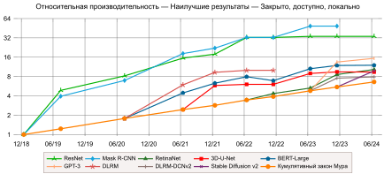
Разрыв между транзисторной базовой линией 6.6
Бенчмарки обучения, таким образом, выполняют четыре функции. Они сравнивают ускорители и фреймворки на стандартизованных задачах, что помогает выбирать оборудование и количественно оценивать программные оптимизации вроде обучения в смешанной точности16 и загрузки данных с экономией памяти. Они проверяют масштабируемость, поскольку добавленные ускорители должны пропорционально сокращать время обучения, а коммуникация, синхронизация и узкие места памяти этому препятствуют. Они учитывают стоимость и энергию, поскольку один крупномасштабный прогон обучения может потреблять мегаватт-часы электроэнергии (оценка для GPT-3 — в Глава 12.5.2.4). Их стандартизованные критерии оценки, контролируемая случайность, правила подачи и аудиты делают сравнения воспроизводимее и ограничивают специфические для реализаций обходные пути. Выполнение всех четырёх функций требует согласованного набора метрик обучения, где якорем служит время до качества, а поддержку дают диагностические измерения масштабирования, утилизации, энергии и восстановления после сбоев.
12.5.2 Метрики обучения
Ни один отдельный счётчик не охватывает все четыре функции бенчмарка обучения. Полная оценка сопоставляет метрику результата — астрономическое время, требуемое для достижения проверенной цели по качеству, — с диагностическими метриками, объясняющими, что замедляло или прерывало запуск: пропускная способность по примерам, эффективность масштабирования на несколько ускорителей, утилизация вычислений и памяти, суммарная энергия и накладные расходы на контрольные точки.
Время и пропускная способность
Учебный кластер, обрабатывающий вдвое больше изображений в секунду за счёт удвоения минибатча или снижения точности, не ускорил обучение, если для сходимости требуется вдвое больше эпох, или если он вообще не достигает минимально допустимого качества. Именно поэтому основной метрикой оценки эффективности обучения является время, необходимое для достижения предопределённого порога точности. «Время до точности», «время обучения» и «время до качества» — всё это названия одной и той же измеряемой величины. Время обучения
Прогон, не достигающий цели, не имеет конечного времени до точности — это не позволяет «сырой» скорости обучения вознаграждать систему, не прошедшую критерий качества бенчмарка.
Пропускная способность,17 часто выражаемая числом обучающих примеров в секунду, даёт дополнительную меру производительности системы. Пусть
Одна лишь пропускная способность не может подтвердить возможности системы. Платформа может поддерживать высокий темп обработки примеров за счёт агрессивных низкоточечных форматов или огромных минибатчей, но не достигнуть целевой точности из-за расходимости градиентов или плохого обобщения. Например, в MLPerf Training бенчмарк ResNet-50 на ImageNet действителен только если модель достигает требуемых 75.9 процента top-1 точности на валидации (Mattson и др. 2020 г.; MLCommons 2024 г.c). Оценка пропускной способности строго как скорости продвижения к сходимости гарантирует, что заявленные выигрыши отражают подлинную продуктивность обучения, а не потраченные впустую такты арифметики.
Масштабируемость и параллелизм
Масштабируемость измеряет, насколько эффективно производительность обучения улучшается при добавлении ресурсов. В идеале удвоение числа GPU должно вдвое сократить время обучения. На практике накладные расходы на коммуникацию, пределы пропускной способности памяти и неэффективность параллелизации ограничивают масштабирование значительно ниже линейного.
Инженерный расчёт 12.3: Расчет эффективности масштабирования
Задача: команда обучает классификатор изображений на фиксированном наборе данных. Обучение на одном GPU занимает 24 hours. С 8 GPUs обучение занимает 4 hours. Хорошее ли это масштабирование? Куда ушла эффективность?
Таблица 11: Источники потерь эффективности масштабирования: иллюстративное разложение недостающего бюджета эффективности на измеримые категории накладных расходов и соответствующий сигнал измерения, используемый для атрибуции каждой потери. Фактические проценты зависят от модели, соединения, хранилища, плана батчей и реализации фреймворка.
Шаг 1: определим эффективность масштабирования. Для сильного масштабирования (фиксированный размер задачи, больше процессоров) пусть
Шаг 2: вычислим эффективность.
При идеальном масштабировании 8 GPUs завершили бы работу за 3 hours (24 hours/8 GPUs). Фактические 4 hours соответствуют эффективности 75 percent.
Шаг 3: исследуем потерю эффективности. Два значения прошедшего времени устанавливают «недостающие» 25 percent, но не объясняют, куда они уходят. Таблица 11 приводит иллюстративные вклады и сигналы профилирования для синхронизации градиентов, копирования памяти, дисбаланса нагрузки и эффектов размера батча. Сравнения сильного масштабирования фиксируют общий объём работы; сравнения по времени достижения качества должны также учитывать изменение числа шагов до сходимости.
В обучении с параллелизмом по данным на нескольких ускорителях (например, 2, 4 или 8 GPU, соединённых через PCIe или NVLink внутри одного хоста) каждый ускоритель вычисляет градиенты на своём локальном срезе минибатча. Коллективная операция AllReduce из Параллелизм по данным должна суммировать эти градиенты так, чтобы каждый рабочий процесс получил одинаковый глобальный градиент (усреднённый) перед следующим шагом. Тензоры градиентов содержат по одному элементу на каждый обучаемый параметр, и их передача через соединения добавляет коммуникацию, стоимость которой зависит от топологии, алгоритма коллективной операции и перекрытия. При фиксированном общем объёме работы и идеальном разбиении время вычислений на шаг сокращается (
| Источник | Примерный вклад | Измерение |
|---|---|---|
| Синхронизация градиентов | 10–15% | Время AllReduce на шаг |
| Копирование памяти (CPU |
3–5% | Профилирование передачи данных |
| Дисбаланс нагрузки | 2–5% | Дисперсия времени шага по GPU |
| Эффекты размера батча | 2–5% | Крупные батчи сходятся иначе |
Шаг 4: системный вывод. Эффективность масштабирования может снижаться с ростом
MLPerf сообщает о «сырой» производительности, тогда как эффективность масштабирования можно вычислить по согласованным заявкам. Система, достигающая 2
↩︎ Коллективная операция AllReduce, усредняющая градиенты между рабочими процессами с параллелизмом по данным, вводится в Параллелизм по данным.
Стратегии параллелизма (параллелизм по данным, по модели и конвейерный) и требуемая ими синхронизация рассматриваются в Параллелизм по данным; в пределах одной машины на два–восемь ускорителей параллелизм по данным — обычный случай. Задача бенчмарка уже: сообщить, какая часть добавленной мощности конфигурации превращается в ускорение без ухудшения сходимости. Это преобразование — эффективность масштабирования. Если сильное масштабирование оценивает, сокращает ли добавление процессоров время обучения при фиксированном общем объёме работы, то слабое масштабирование пропорционально увеличивает размер задачи вместе с числом процессоров, сохраняя постоянной рабочую нагрузку на устройство. Оно измеряет, способна ли система обучать более крупные модели или поглощать более крупные наборы данных в рамках фиксированного бюджета времени без доминирования узких мест в коммуникациях.
Использование ресурсов
Эффективность обучения зависит от скорости обучения, масштабируемости кластера и того, насколько эффективно используются аппаратные ресурсы. Утилизация вычислений требует явного числителя. Утилизация FLOP модели (MFU), метрика из определения 8.3, сопоставляет полезную скорость операций модели с соответствующим пиком оборудования; счётчики активности вместо этого сообщают, заняты ли блоки, а занятый блок может выполнять работу, не нужную модели. Низкая утилизация может указывать на узкие места в перемещении данных, доступе к памяти или неэффективном планировании рабочей нагрузки.
Например, при обучении ResNet-50 на наборе данных, слишком большом, чтобы целиком поместиться в памяти хоста, извлечение батчей из хранилища и декодирование и аугментация тысяч JPEG-изображений в секунду на хосте могут ограничивать пропускную способность, даже когда ускорители располагают запасом вычислений, — переход от ограниченности вычислениями к ограниченности входными данными, который прослеживает Конвейер данных. Если извлечение из хранилища или предобработка на хосте не поспевают, ускорители простаивают; профилирование ввода-вывода и утилизации вычислений изолирует эту задержку, чтобы предзагрузка, кэширование и параллельная обработка входных данных восстановили устойчивую пропускную способность.
Пропускная способность памяти — ещё один ограничивающий фактор, поскольку модели глубокого обучения требуют частого доступа к большим объёмам данных во время обучения. Если пропускная способность памяти насыщается, одно лишь увеличение вычислительной мощности не ускорит обучение. Бенчмарки оценивают, насколько хорошо модели используют доступную память, гарантируя, что скорости передачи данных между хранилищем, основной памятью и вычислительными блоками не станут узкими местами производительности.
Энергоэффективность и стоимость
По оценкам, обучение GPT-3 потребило 1,287 MWh электроэнергии (Patterson и др. 2021 г.). В таком масштабе метрики энергоэффективности количественно оценивают энергопотребление рабочих нагрузок обучения, чтобы команды могли находить системы, достигающие целевой точности без лишних затрат энергии. Меньшее число итераций снижает энергопотребление только тогда, когда их полные энергетические затраты ниже; более дорогой шаг может компенсировать уменьшенное количество, поэтому наборы вроде MLPerf Training измеряют полную энергию за весь прогон до одной и той же цели по качеству. Тот же учёт энергии применим к инференсу, где точность представления — один из потенциальных рычагов экономии; Глава 12.7 разбирает, почему INT8-квантизация снижает энергию на инференс, воздействуя и на трафик памяти, и на стоимость арифметики.
Соображения о стоимости выходят за рамки расхода электроэнергии и включают расходы на аппаратное обеспечение, облачные вычисления и поддержку инфраструктуры. Бенчмарки обучения дают представление об экономической эффективности различных конфигураций аппаратного и программного обеспечения, измеряя время обучения в соотношении с затратами ресурсов. Организации могут использовать эти бенчмарки для балансировки требований производительности и бюджетных ограничений при выборе инфраструктуры обучения.
Отказоустойчивость и надёжность
Рабочие нагрузки обучения часто выполняются длительное время, иногда дни или недели, что делает отказоустойчивость существенным фактором. Устойчивая система должна справляться с непредвиденными сбоями (неисправностями оборудования, разрывами сети и ошибками памяти), не ставя под угрозу сходимость по точности.
Продукционные системы используют контрольные точки для отказоустойчивости, периодически сохраняя прогресс, чтобы сбой не приводил к перезапуску прогона. На одном хосте бенчмарк фиксирует интервал сохранения, записываемое состояние и паузу, вносимую каждым сохранением в обучение. Веса модели и состояния оптимизатора потребляют пропускную способность хранилища, а любая пауза увеличивает реальное время до цели по качеству. Асинхронное сохранение может перекрывать ввод-вывод с вычислениями, но его промежуточные буферы и конкурирующий трафик хранилища остаются частью измеряемой рабочей нагрузки. Восстановление кластера и параллельные файловые системы выводят эту проблему за пределы локальной машины; урок локального бенчмаркинга — включать предполагаемое поведение сохранения в измерения устойчивой производительности. MLPerf Training в первую очередь измеряет время до качества на стандартизованных рабочих нагрузках и не бенчмаркирует восстановление после сбоев напрямую.
Прогоны обучения — также место, где воспроизводимость достигается труднее всего, потому что стохастические процессы взаимодействуют с аппаратно-специфичным поведением на протяжении многих часов. То, что отчёт об обучении должен сохранить для воспроизводимости результата — полный контур прогона, а не только случайное зерно, — собрано вместе с другими статистическими средствами контроля в Глава 12.8.2.
12.5.3 Оценка производительности обучения
Единая оценка «время до точности» говорит инженерной команде, уложился ли прогон в срок, но не почему конфигурация с 8 GPU потеряла 25 percent идеального ускорения или исправило бы дело приобретение более быстрых соединений. Каждая категория метрик в Таблица 12 изолирует отдельный способ, которым вложения в аппаратуру могут не превратиться в сходимость, превращая общий показатель времени выполнения в действенный диагноз.
| Категория | Ключевые метрики | Пример использования бенчмарка |
|---|---|---|
| Время и пропускная способность обучения | Время до точности (секунды, минуты, часы); пропускная способность (образцов/сек) | Сравнение скорости обучения на разных архитектурах GPU |
| Масштабируемость и параллелизм | Эффективность масштабирования (процент от идеального ускорения); накладные расходы на коммуникацию (задержка, пропускная способность) | Анализ производительности распределённого обучения для крупных моделей |
| Использование ресурсов | Утилизация вычислений (процент использования GPU/TPU); пропускная способность памяти (ГБ/с); эффективность ввода-вывода (скорость загрузки данных) | Оптимизация конвейеров данных для повышения утилизации GPU |
| Энергоэффективность и стоимость | Энергопотребление за прогон (МВт·ч, кВт·ч); пропускная способность обучения на ватт (FLOP/с/Вт) | Оценка энергоэффективных стратегий обучения |
| Отказоустойчивость и надёжность | Накладные расходы контрольных точек (время на сохранение); доля успешных восстановлений (процент) | Оценка восстановления после сбоев в облачных системах обучения |
| Воспроизводимость и стандартизация | Разброс между прогонами (процентная разница в точности, времени обучения); согласованность фреймворков (TensorFlow vs. PyTorch vs. JAX) | Обеспечение согласованности результатов бенчмарков на разном оборудовании |
Блокнот по масштабированию показывает, как Таблица 12 используется на практике. Его времена завершения устанавливают ускорение и затраты на эффективность использования ресурсов, поэтому решение о закупке сначала использует результат «время до качества», а затем измерения утилизации и коммуникаций, атрибутирующие потерю, чтобы решить, решит ли проблему ограничивающего ресурса дополнительное оборудование или иная конфигурация исполнения.
Эти измерения сопоставимы только тогда, когда поведение частоты с ускорением (boost clock) GPU18 и тепловое состояние следуют одному протоколу в согласованных прогонах; иначе короткий быстрый прогон можно принять за устойчивое улучшение. Средства контроля повторных прогонов в Глава 12.8.1 определяют, превышает ли разница экспериментальную неопределённость.
В случае блокнота 8 GPUs достигают 75 percent эффективности масштабирования. Если требуемая цель по качеству и срок завершения достигнуты, конфигурация укладывается во временное ограничение, но оставшиеся накладные расходы масштабирования всё ещё важны для стоимости. Если срок пропущен, покупка дополнительных ускорителей пока не оправдана. Следующий эксперимент должен измерить открытую синхронизацию, задержки входных данных и работу на устройство при предполагаемом плане батчей и контрольных точек, прежде чем выбирать вмешательство. Если сходимость меняется между конфигурациями, сравнение использует полные прогоны «время до качества», а не трактует разницу как чистую потерю сильного масштабирования.
Критерии приёмки отчёта об обучении касаются обучения, поэтому эффективно обученная модель всё ещё нуждается в отдельном свидетельстве того, что она может обслуживать запросы при ограничениях развёртывания.
Контрольная точка 12.3: Проверка утверждения об обучении
Первая половина главы построила измерение и применила его к обучению. Прежде чем перейти к развёртыванию, вы должны уметь:
12.6 Инференс-бенчмарки
В отличие от бенчмарков обучения, которые допускают переменное время итераций, пока градиентный спуск достигает целевого качества, бенчмарки инференса проверяют, способна ли обученная модель обслуживать отдельные запросы в рамках жёстких дедлайнов развёртывания. Фотоловушка, запускающая MobileNetV2 на периферийной плате, должна классифицировать каждый кадр в пределах бюджета 33 миллисекунд, чтобы поспевать за видеопотоком с частотой 30 кадров в секунду. Если незабенчмаркенная пауза сборщика мусора или сбой запуска ядра растянет p99-задержку за этот дедлайн, кадры будут отброшены, и животное, пересекшее поле зрения менее чем за секунду, останется незарегистрированным — независимо от средней пропускной способности платы. Контур восприятия автономного автомобиля работает по той же арифметике дедлайнов, но с куда более высокими ставками, поскольку в рабочих нагрузках обслуживания каждое запоздавшее предсказание напрямую подрывает работоспособность приложения.
Инференс — это также точка, где сходятся главы об оптимизации, потому что именно на ускоренном оборудовании выполняются сжатые модели, обеспечивающие предсказания в реальном времени. Бенчмарки инференса показывают, превращаются ли эти теоретические ускорения в реальные сокращения задержки при реалистичных условиях развёртывания. Их центральная величина — сквозная задержка запроса
Определение 12.4: Бенчмарки инференса ML
Бенчмарки инференса ML — это бенчмарки систем машинного обучения, которые количественно оценивают способность системы соблюдать ограничения на задержку
- Значимость: Бенчмарки инференса вскрывают зависящий от рабочей нагрузки и системы разрыв между неограниченной пропускной способностью и пропускной способностью при соблюдении целевого уровня обслуживания (SLO), например целевого значения p99-задержки. Задержки в очереди выталкивают хвостовую задержку за целевое значение при высокой нагрузке, и только бенчмарк, принуждающий соблюдение цели на каждом уровне пропускной способности, это показывает.
- Отличие: В отличие от бенчмарков обучения, измеряющих время до достижения точности на фиксированном наборе данных, бенчмарки инференса измеряют время ответа на отдельный запрос при реалистичных паттернах нагрузки, фиксируя эффекты очередей, компромиссы формирования батчей и накладные расходы холодного старта, которые определяют реальную экономику обслуживания.
- Типичная ошибка: Распространённое заблуждение — считать среднюю задержку достаточной метрикой бенчмарка. Низкое среднее может сосуществовать с длинным p99-хвостом, а при высоких частотах запросов самый медленный 1 процент — это большое число затронутых пользователей. Бенчмарк должен сообщать ту статистику, которую называет целевой уровень обслуживания.
12.6.1 Мотивация бенчмарков инференса
Масштабное обучение по бенчмаркам обычно выполняется на выделенном оборудовании дата-центров, тогда как инференс охватывает широкий спектр сценариев развёртывания — от приложений реального времени, таких как автономное вождение и диалоговый ИИ, до мобильных устройств, IoT-систем и встраиваемых процессоров. Это разнообразие распространяется и на оборудование: пока доминирующими при крупномасштабном обучении являются GPU и TPU, рабочие нагрузки инференса часто используют специализированные ускорители, такие как NPU, программируемые вентильные матрицы и специализированные чипы инференса вроде Google Edge TPU.19 Бенчмарки инференса оценивают, насколько согласованно эти среды развёртывания работают вместе: подбор оборудования, оптимизация модели и проектирование конвейера данных.
При переносе моделей с разработки на такие цели обслуживания мотивирующие факторы параллельны факторам обучения (оптимизация оборудования, масштабируемость, стоимость, честное сравнение), но различаются в деталях. Фреймворки программной оптимизации применяют специфичные для инференса приёмы — слияние ядер (kernel fusion), калибровку точности и тюнинг ядер, — влияние которых на задержку, пропускную способность и энергоэффективность должно измеряться в реалистичных условиях, чтобы подтвердить реальные улучшения без деградации точности. Автотюнируемые компиляторы добавляют скрытую переменную. Сам компилятор может требовать часы оптимизации на пару «модель — оборудование», поэтому результаты бенчмарков отражают бюджет тюнинга в той же мере, что и возможности оборудования. Сравнение между заявками должно поэтому указывать бюджет тюнинга за каждым результатом.
Проблемы масштабируемости тоже меняют характер. Обучение масштабируется добавлением GPU для сокращения времени до достижения точности на фиксированной рабочей нагрузке, тогда как инференс должен масштабироваться динамически в ответ на колеблющийся пользовательский спрос, выдерживая всплески трафика без нарушения гарантий задержки. Приложения, загружающие модели по требованию, например serverless-развёртывания, выставляют пользователю напрямую и время загрузки модели — её холодный старт.
Стоимостной и энергетический профиль инференса резко отличается от обучения. Обучение концентрирует стоимость в отдельных запусках, которые могут повторяться при изменении данных, целей или моделей; стоимость инференса накапливается непрерывно вместе с производственным трафиком. Запуск неэффективной модели в масштабе может многократно умножить расходы на облачные вычисления, а на устройствах с батарейным питанием чрезмерные вычисления напрямую сказываются на удобстве использования. Бенчмарки, измеряющие стоимость на запрос инференса и эффективность на ватт, помогают организациям оптимизировать и производительность, и устойчивость на всех платформах развёртывания.
Удержание этих разнообразных стеков обслуживания в рамках воспроизводимых сравнений требует метрик, фиксирующих хвостовую отзывчивость, потоковую доставку токенов, пропускную способность под нагрузкой, задержку инициализации и энергию наряду с качеством модели (Reddi и др. 2019 г.).
12.6.2 Метрики инференса
Фотоловушка должна классифицировать каждый кадр до прихода следующего, голосовой ассистент должен отвечать достаточно быстро, чтобы пользователи не ощущали запаздывания, а рекомендательная система должна оценивать достаточно кандидатов, чтобы поспевать за прокруткой пользователя. Эти ограничения (задержка и пропускная способность) определяют перформанс-конверт, в границах которого должны работать все оптимизации обслуживания. Метрики инференса формализуют эти реальные требования в измеримые величины, причём отличаются от метрик обучения по существу, а не по степени, потому что цель оптимизации смещается со скорости сходимости при обучении на предсказуемость задержки при обслуживании. Обучение оптимизирует пропускную способность и время до достижения точности; инференс оптимизирует стабильность задержки, эффективность ресурсов и предсказуемость уровня обслуживания — от облачных дата-центров, обрабатывающих миллионы запросов, до периферийных устройств, работающих в условиях жёстких ограничений энергопотребления.
Задержка и хвостовая задержка
Сервис инференса, усредняющий 10 мс на запрос, всё равно может уходить в таймаут для тысяч пользователей каждый час, если всплески очередей или паузы сборщика мусора выталкивают самый медленный 1 процент запросов за его дедлайн. Задержка (latency) измеряет время, за которое система инференса обрабатывает вход и выдаёт предсказание. Поскольку средние скрывают задержки высоких процентилей, бенчмарки сообщают также хвостовую задержку (tail latency),20 обычно 95-й процентиль (p95) или 99-й процентиль (p99) — время, в пределах которого завершается 95 или 99 процентов инференсов. Приложения с жёсткими дедлайнами требуют явного анализа пропусков дедлайнов или наихудшего случая сверх этих процентилей. Каждая такая измеренная статистика является индикатором уровня обслуживания, а SLO и SLA формализуют ожидания по производительности, задавая целевые значения на этих индикаторах.
Определение 12.5: SLO и SLA
SLO и SLA — спецификации обязательств по производительности для производственных систем обслуживания ML: целевой уровень обслуживания (SLO) — это целевое значение или диапазон для индикатора уровня обслуживания, а SLA — контракт, определяющий цели обслуживания и последствия их несоблюдения.
- Значимость: SLO на задержку ограничивает сквозную задержку запроса
, задавая цель для указанного индикатора задержки, а «железного закона» — лишь часть этого бюджета с фиксированными накладными расходами. Постановка запросов в очередь и переходящие всплески потребляют часть этого бюджета. - Отличие: SLO сам по себе не имеет контрактных последствий, тогда как пропуск цели SLA влечёт последствия, указанные в соглашении, которые могут включать компенсации или штрафы. Команды обычно устанавливают внутренний SLO строже внешнего соглашения, чтобы оставить операционный запас, хотя определение этого не требует.
- Типичная ошибка: Распространённое заблуждение — что соблюдение средней задержки удовлетворяет SLO на хвостовую задержку. SLO могут использовать средние, процентили, частоты или другие индикаторы; когда цель определена на p99 или p99.9, отличное среднее не устанавливает соответствие.
Инженерные команды оптимизируют в направлении SLO, тогда как бизнес обязуется соблюдать SLA. Применимая цель по задержке также фиксирует популяцию запросов, предлагаемую нагрузку и окно измерения. Иначе две команды могут сообщить один и тот же порог процентиля по разным смесям трафика и прийти к несовместимым выводам о соответствии.
Контрольная точка 12.4: Выбор метрик
Метрика формирует оптимизацию.
Примените три правила перед завершением выбора метрик:
В производственном масштабе небольшие деградации p99 затрагивают многих пользователей. Если 1 percent запросов занимает на 10× дольше (например, 1000 ms вместо 100 ms), то 10,000 запросов на миллион достаточно медленны, чтобы грозить таймаутами и оттоком клиентов. Поисковые системы и рекомендательные системы демонстрируют эту чувствительность: эксперименты Google с задержкой поиска показали измеримое снижение ежедневных поисков на пользователя при серверных задержках в 100–400 мс (Brutlag 2009 г.), поэтому интерактивные сервисы часто рассматривают время отклика менее 100 мс как практическую проектную цель. Поскольку редкие медленные ответы сильно бьют по удовлетворённости пользователей, такие сервисы задают цели на основе процентилей, а крупномасштабные системы могут отслеживать более глубокие хвосты, например p99.9.
↪ Предоставление ёмкости обслуживания так, чтобы p99-задержка соответствовала SLO при пиковой нагрузке, разбирается в Хвостовая задержка.
Проблема соблюдения этих целей по хвостовой задержке в том, что источник хвоста часто архитектурный, а не алгоритмический. Среда исполнения со сборкой мусора, общий драйвер ядра или баг инверсии приоритетов в стеке обслуживания могут вносить всплески задержки, которые не устранит никакая оптимизация модели.
Сервис Read States компании Discord показывает эффект вне машинного обучения. Периодические паузы сборки мусора в его реализации на Go всплесками поднимали p99-задержку каждые две минуты, пока переписывание на Rust не устранило паузы (Howarth 2020 г.). Управляемая среда исполнения в хранилище признаков или пути извлечения может налагать такой же пол на хвост ML-сервиса, поэтому полный стек обслуживания должен входить в производственный бенчмарк задержки. Хвостовая задержка разбирает механизмы, формирующие хвост под нагрузкой.
Задержка токенов: TTFT и TPOT
Генеративные модели обслуживаются по одному токену за раз, поэтому их задержка распадается на две измеряемые величины. Время до первого токена (TTFT) — это интервал от прибытия запроса до его первого выходного токена; он определяется prefill — проходом, обрабатывающим весь промпт параллельно. Время на выходной токен (TPOT) — это средний интервал между последующими токенами, задаваемый авторегрессионным декодированием. Разрыв между любыми двумя последовательными токенами — это межтокеновая задержка (ITL), так что TPOT — это среднее ITL запроса, а распределение ITL вскрывает отдельные «провисания», скрытые средним. Бенчмарк, сообщающий единую агрегированную пропускную способность, скрывает и TTFT, и TPOT. Модель может достигать высокой пропускной способности в токенах в секунду и при этом ощущаться вялой, если первый токен приходит поздно. Она может также минимизировать TTFT, генерируя последующий текст слишком медленно для интерактивного чтения.
Пропускная способность по токенам переводит эти скорости генерации в ощущаемое пользователем реальное время: для ответа длиной 750 tokens скорость генерации 25 tokens/s требует 30 seconds, тогда как 100 tokens/s завершается за 7.5 seconds. Поэтому TTFT и TPOT — средняя межтокенная задержка — должны указываться вместе: одна характеризует начальную отзывчивость, другая — устойчивую скорость выдачи. Эти две величины также нагружают разные ресурсы, поскольку prefill обычно ограничен вычислениями, а низкобатчевый декод часто упирается в пропускную способность памяти (Авторегрессионное декодирование). Метрики производительности: TTFT и TPOT строит политики обслуживания на этих двух измерениях; требование к бенчмарку состоит в том, чтобы обе метрики указывались при одной и той же предложенной нагрузке для каждой генеративной рабочей нагрузки.
Метрики пропускной способности и ресурсов
Задержка — лишь половина картины обслуживания. Пропускная способность подсчитывает, сколько запросов на инференс система завершает в секунду, обычно выражаясь в запросах в секунду (QPS) или кадрах в секунду (FPS), и имеет смысл только вместе с задержкой, при которой она была измерена. Формирование батчей повышает пропускную способность, обрабатывая несколько входов одновременно, но добавляет время ожидания каждому из них, поэтому значение пропускной способности, приведённое без перцентиля задержки и предложенной нагрузки, ничего не говорит о том, соблюдается ли дедлайн обслуживания. Поэтому бенчмарк указывает пропускную способность батчей — число завершённых запросов в секунду при заданном размере батча — и задержку на запрос как пару при одной и той же предложенной нагрузке. Выбор размера батча, балансирующего эти величины, — это политика обслуживания (Задержка формирования и граница «задержка–пропускная способность»); задача бенчмарка — измерить обе стороны этого компромисса.
Одной скорости недостаточно, поскольку оптимизации инференса могут менять поведение модели. Понижение численной точности способно ускорить вычисления при сокращении затрат памяти и энергии, как показывает упрощённая оценка энергопотребления MobileNetV2, разобранная в разделе о питании (Глава 12.7.1), но вычисления с меньшей точностью могут вносить деградацию точности. Поэтому бенчмарки инференса оценивают, насколько хорошо модели работают при различных численных настройках, таких как FP32, FP16 и INT8.21 Техники сжатия моделей22 дополнительно повышают эффективность, но их влияние на точность модели зависит от задачи и набора данных. Бенчмарки помогают определить, применимы ли эти оптимизации к развёртыванию, гарантируя, что выигрыш в эффективности не обернётся недопустимой потерей точности.
Помимо скорости и точности, бенчмарк инференса должен указывать также несколько ресурсных показателей, и каждый из них существует потому, что система может пройти тест на задержку и всё же не подойти для развёртывания. Занимаемый объём памяти решает, помещается ли модель в бюджет устройства вообще, поскольку инференс редко распределяется по нескольким ускорителям, как это возможно при обучении. Производительность холодного старта — время загрузки плюс задержка первого запроса23 — раскрывает стоимость инициализации перед запрашивающим пользователем. Она доминирует в serverless-сценариях ИИ24 и на устройствах, вытесняющих модели для освобождения памяти. Когда выделение ресурсов, передача модели, инициализация среды исполнения и первый ответ лежат на пути пользовательского запроса, бенчмарк должен учитывать их; результат для прогретого инстанса отвечает на иной вопрос. Масштабируемость фиксирует, повышают ли добавленные ускорители или конкурентные модели пропускную способность или сталкиваются на пропускной способности памяти, а энергия на инференс (джоули на инференс, или QPS/W в облаке) определяет время автономной работы мобильных устройств и эксплуатационные расходы в центрах обработки данных.
12.6.3 Бенчмарки MLPerf Inference
Оценка обслуживания имеет смысл только с учётом ограничений целевой среды, поскольку стойку центра обработки данных, клиентский ноутбук, смартфон и микроконтроллер нельзя судить одним тестом. Разработанное MLCommons,25 семейство бенчмарков MLPerf Inference превращает баланс между задержкой, пропускной способностью, памятью, энергией и точностью в оцениваемые сценарии, привязанные к каждому уровню развёртывания, так что результат можно интерпретировать относительно ресурсных ограничений, с которыми столкнётся развёрнутая система.
MLPerf Inference
На уровне стоек центров обработки данных и периферийных appliance базовый набор MLPerf Inference (Reddi и др. 2019 г.) оценивает представления в закрытом и открытом дивизионах, определённых в Глава 12.4.4. Его рабочие нагрузки охватывают классификацию изображений, обнаружение объектов, обработку естественного языка и рекомендации, давая общую точку отсчёта для сравнения ускорителей и CPU, когда правила представления и сценарий соответствуют целевому развёртыванию. Поскольку разные рабочие нагрузки нагружают разные аппаратные подсистемы, результаты на DLRM26 могут разделить поколения ускорителей по объёму и пропускной способности памяти там, где ограниченные вычислениями модели зрения этого не могут, хотя величина выигрыша зависит от рабочей нагрузки, программного стека и конфигурации системы. В то же время стоимость всеобъемлющего бенчмаркинга ограничивает круг участников и глубину оценки систем.
Системный взгляд 12.6: Стоимость комплексного бенчмаркинга
Участие в MLPerf может требовать выделенных инженерных усилий, доступа к оборудованию, настройки, валидации и аккуратной документации по всем релевантным конфигурациям. Стоимость сильно зависит от рабочей нагрузки и охвата, но она достаточно высока, чтобы представления доминировали со стороны крупных технологических компаний и производителей оборудования, тогда как небольшие организации полагаются на опубликованные результаты вместо проведения собственных всеобъемлющих оценок. Этот барьер мотивирует потребность в более лёгких внутренних практиках бенчмаркинга, которые организации могут использовать для обоснованных решений без затрат на полномасштабный стандартизованный бенчмаркинг.
Остальная часть семейства MLPerf Inference сужает эту базовую линию по мере ужесточения бюджетов энергии и памяти. MLPerf Mobile (MLCommons 2024 г.a) оценивает, остаётся ли модель отзывчивой в пределах лимитов энергии и памяти смартфона (Janapa Reddi и др. 2022 г.). MLPerf Client (MLCommons 2026 г.b) спрашивает, могут ли потребительские устройства выполнять локальные генеративные ИИ-нагрузки на CPU, дискретных GPU и интегрированных NPU. MLPerf Tiny (Banbury и др. 2021 г.) охватывает встраиваемые и сверхнизкопотребляющие системы, такие как устройства IoT, носимые устройства и микроконтроллеры. Переход от серверов центров обработки данных к этим мобильным и периферийным целям меняет саму физику измерения, поскольку пассивное охлаждение и лимиты батареи превращают троттлинг из-за нагрева и междвижковые передачи в первичные узкие места.
12.6.4 Мобильные и периферийные бенчмарки
В отличие от центров обработки данных с подводом энергии в киловаттном масштабе и активным охлаждением, мобильные и периферийные развёртывания работают в строгих пределах энергопотребления от милливатт до ватт и лимитах пассивного тепловыделения. Бенчмаркинг таких систем означает совместное указание энергопотребления, задержки инференса и точности модели, поскольку выигрыш в одном обычно достигается ценой другого. Таблица 13 противопоставляет эти операционные ограничения облачным средам.
| Ограничение | Влияние в облаке | Влияние на краю |
|---|---|---|
| Энергия | Эксплуатационные расходы | Энергетический бюджет устройства |
| Задержка | Целевой уровень сервиса | Локальный дедлайн отклика |
| Точность | Целевое качество задачи | Балансируется с энергией/задержкой |
Рассмотрим камеру смартфона, выполняющую обнаружение объектов в реальном времени при 30 кадрах в секунду в тепловом конверте 3–5 Вт. В этих условиях эффективная архитектура, такая как MobileNet, служит реалистичной целью бенчмарка, тогда как более крупная модель ResNet нарушила бы тепловые лимиты, несмотря на её превосходную точность в облачных оценках. Поэтому периферийный бенчмарк должен оценивать точность совместно с устойчивым энергопотреблением и тепловыделением. Разрыв между пиковым и устойчивым режимами (Глава 12.1) особенно остро проявляется на краю, поскольку пассивно охлаждаемое устройство плохо рассеивает тепло. По мере роста температуры перехода контроллер динамического теплового управления (DTM) снижает рабочее напряжение и тактовую частоту, из-за чего устойчивая пропускная способность резко падает ниже пиковых значений в пакетном режиме. Этот тепловой механизм делает конфигурацию охлаждения частью спецификации бенчмарка.
Пример 12.2: Сравнительное тестирование периферийных устройств
Сценарий: Команда инженеров по периферийным устройствам тестирует чип-кандидат для платы фотоловушки с заявленной вендором спецификацией «AI 1 Вт».
Диагноз: Ранние тесты в импульсном режиме подтверждают заявления вендора, однако непрерывное выполнение цикла инференса приводит к разогреву p-n-перехода, вызывая троттлинг из-за нагрева (thermal throttling) и снижая пропускную способность в установившемся режиме.
Системный урок: Короткие импульсные бенчмарки скрывают долгосрочный троттлинг из-за нагрева. Тестирование периферийных МЛ-нагрузок требует непрерывного длительного выполнения, чтобы отразить реальные операционные пределы аппаратного обеспечения.
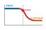
FPS импульсного бенчмарка обрушивается, как только включается троттлинг из-за нагрева.
Троттлинг — самый заметный способ, которым короткое измерение приукрашивает периферийное аппаратное обеспечение. Но и мощность в режиме простоя, коэффициент заполнения и перемещение данных вокруг ускорителя могут искажать «заголовочное» число, поэтому каждый из этих факторов нужно проверить, прежде чем заявление вендора ляжет в основу проектного решения.
Системный взгляд 12.7: Проверка реалистичности периферийного бенчмарка
При оценке заявлений о периферийном аппаратном обеспечении четыре фактора определяют, переводятся ли числа вендора в реальную производительность:
- Пик против устойчивого режима: Вендор может рекламировать пиковую пропускную способность 45 TOPS, тогда как длительный прогон с нагревом даёт ближе к 20 TOPS. В этом сценарии корректный тест использует прогон длиннее 30 s, проверяет температурную стабилизацию и охватывает рабочий коэффициент заполнения развёртывания.
- Мощность в простое против активной: В этом сценарии устройство, потребляющее 50 mW в простое и 2 W в активном режиме, может отчитываться активным потреблением в маркетинговых целях, но если приложение выполняет инференс лишь 1 percent времени, эффективное потребление составляет ~69.5 mW, а не 2 W.
- Тепловой конверт: Периферийные устройства часто работают внутри узкого конверта TDP. Его превышение вызывает троттлинг, поэтому отчёты по бенчмаркам без указания температурных условий неполны.
- Сквозной режим против только ускорителя: Бенчмарки NPU часто исключают накладные расходы на передачу данных. Перемещение данных изображения с камеры в NPU и обратно может превысить время инференса для небольших моделей.
Современный мобильный SoC размещает CPU, GPU, цифровые сигнальные процессоры (DSP) и нейронные процессорные блоки (NPU) на одном кристалле, разделяющем системную память и общий тепловой бюджет (Проектирование гетерогенных систем на кристалле подробно разбирает, как такие SoC распределяют работу). Поэтому периферийный бенчмарк должен измерять конвейер по всем этим движимым блокам, а не пропускную способность ядра одного движка. Бенчмарки одного движка упускают три издержки, возникающие между движками: пробуждение ускорителя из глубокого состояния сна, конкуренцию при доступе нескольких движков к общей DRAM и преобразование компоновки тензоров между форматами, требуемыми разными движками. Отследить, как ускорение изолированного ускорителя сжимается, когда учтены препроцессинг на хосте и междвижковые передачи, — задача следующего бенчмарка платы фотоловушки.
12.6.5 Построение бенчмарка периферийной платы
Плата фотоловушки — это объект измерений инференса, приведённых выше. Она сочетает маломощный хост-CPU с подключённым INT8-ускорителем, а утверждение, унаследованное из глав о сжатии и ускорении, состоит в том, что INT8 MobileNetV2 на ускорителе укладывается в дедлайн по кадрам камеры при доле энергии хоста. Бенчмарк строится в том порядке, в каком следовал бы аккуратный инженер: сначала точность на хосте, затем ускоритель, затем критерии, решающие, можно ли выпускать результат. Помеченные составные значения ниже — иллюстративные, а не измерения конкретного продукта.
Пример 12.3: Сравнительное тестирование модели компьютерного зрения для периферийного развёртывания
Сценарий: Команда периферийного ИИ оценивает MobileNetV2 на хост-CPU фотоловушки — сначала в FP32, затем в INT8 — при жёстких ограничениях на задержку и размер модели (Sandler и др. 2018 г.).
Диагноз: Выполнение в FP32 даёт задержку 50 ms (20 FPS) и размер 14 MB. INT8-квантизация ускоряет инференс в 3.3× — до 15 ms (66.7 FPS) — и уменьшает размер модели в 4× ценой 0.9 percentage points точности Top-1.
Системный урок: Тестирование периферийной модели требует оценки многомерных компромиссов между задержкой, точностью и занимаемым объёмом памяти. Квантизация обеспечивает высокопропускное периферийное выполнение, когда умеренное падение точности отвечает требованиям продукта.
Опорный пример 12.2: MobileNetV2 на периферийном ускорителе
Продолжая «маяк» 12.1, утверждение об аппаратном ускорении проверяется на иллюстративном периферийном сценарии инференса в стиле SingleStream (Reddi и др. 2019 г.; Banbury и др. 2021 г.).
Таблица 14: Сценарий «ускоритель против хост-CPU» для MobileNetV2: Иллюстративные значения задержки, мощности и энергии в стиле SingleStream показывают, как границы измерения меняют сравнительные отношения. Хотя сквозная задержка охватывает препроцессинг на хосте и накладные расходы на передачу по каналу, строки мощности и энергии отражают только активное выполнение компонента, а не потребление всей системы; это иллюстративные значения, а не контролируемые лабораторные измерения.
Утверждение об аппаратном ускорении: В этом иллюстративном сценарии периферийного ускорителя предположим, что инференс INT8 MobileNetV2 занимает ~2 ms на ускорителе — примерно в 7.5× быстрее, чем на маломощном хост-CPU той же платы (~15 ms). Столбец хост-CPU — это INT8-результат хоста из примера 12.3, так что оба измерения описывают одну и ту же плату. Фактические результаты зависят от покрытия операторов, тактовой частоты, температурного состояния и реализации.
Таблица 14 приводит иллюстративные допущения сценария в стиле SingleStream по различным областям измерения.
| Метрика | Область измерения | Хост-CPU | Ускоритель | Сравнительное отношение |
|---|---|---|---|---|
| Задержка инференса | Изолированные вычисления модели | ~15 ms | ~2 ms | 7.5× быстрее (изолированный заголовок) |
| Сквозная задержка | Полный путь запроса (подготовка + канал + выполнение) | ~18 ms | ~6 ms | ~3× быстрее (системный уровень) |
| Активная мощность | Компонент во время выполнения инференса | ~120 mW | ~500 mW | ~4.2× выше (активный компонент) |
| Активная энергия на инференс | Активная энергия компонента ( |
~1.8 mJ | ~1 mJ | ~1.8× эффективнее (активный компонент) |
Что это раскрывает: При этих допущениях ускорение инференса в 7.5× сужается до ~3× сквозного, поскольку препроцессинг в обоих случаях выполняется на хост-CPU (Рисунок 8). Путь через ускоритель несёт дополнительную задержку на копирование каждого входа по каналу хост–ускоритель и получение результата — накладные расходы на передачу, которых путь только на CPU никогда не платит.
Энергетическое преимущество в 1.8× столь же узко. Оно относится именно к активному интервалу инференса (
Паттерны прибытия рабочей нагрузки определяют, переводится ли энергоэффективность уровня компонента в продлённое время работы батареи. При прерывистых коэффициентах заполнения более низкая активная энергия инференса благоприятствует ускорителю, но полный разряд батареи зависит от мощности сна, задержки и накладных расходов пробуждения, стоимости передач хоста и любого тока утечки в ожидании, который ускоритель потребляет в ожидании работы. Для непрерывных потоковых нагрузок, таких как видеоаналитика, доминирует более низкая активная энергия ускорителя на инференс в кумулятивном потреблении энергии.
Согласование сценария MLPerf с развёртыванием важно, потому что SingleStream оценивает задержку, тогда как Offline оценивал бы массовую пропускную способность, а не границы задержки.
По сравнению с бюджетом кадра камеры в 33 мс оба пути формально укладываются в срок: примерно 18 ms сквозного времени на хосте и около 6 ms на ускорителе. Это показатели для одиночного запроса, тогда как дедлайн ограничивает устойчивый p99 прогретой платы, а такое измерение ещё не выполнено. Поскольку хост и так укладывается в бюджет, аргумент в пользу ускорителя строится на энергии, а не на дедлайне. Поэтому результаты INT8 платы поддерживают дальнейшую оценку, но не устанавливают, что сервисная цель камеры-ловушки достигнута. Для этого решения требуется совместно задать совокупность запросов, статистику задержки, нижнюю границу качества, а также бюджеты памяти и энергии.
Таблица 15 собирает метрики из Глава 12.6.2 и указывает на недостающие доказательства. Конвейеру камеры нужно устойчивое время завершения, соответствующее темпу поступления входных данных; периодическому приложению нужны также затраты на инициализацию и спящие режимы. Для любого из этих приложений кандидат обязан сохранять требуемое качество модели на представительных входных данных. Поэтому одно и то же ускорение на уровне модели может поддержать одно развёртывание и оказаться недостаточным для другого.
| Категория | Ключевые метрики | Пример использования в бенчмарке |
|---|---|---|
| Задержка и хвостовая задержка | Средняя задержка (мс/запрос); хвостовая задержка (p95, p99, p99.9) | Оценка интерактивной производительности и мягкого реального времени |
| Пропускная способность и эффективность | Запросов в секунду (QPS); кадров в секунду (FPS); пропускная способность батчей | Сравнение крупномасштабных облачных систем инференса |
| Влияние числовой точности | Деградация точности (FP32 против INT8); ускорение от сниженной точности | Балансировка точности и эффективности в оптимизированном инференсе |
| Занимаемый объём памяти | Размер модели (МБ/ГБ); использование RAM (МБ); использование пропускной способности памяти | Оценка реализуемости для граничных и мобильных развёртываний |
| Холодный старт и время загрузки | Время загрузки модели (с); задержка первого инференса (с) | Оценка отзывчивости в serverless-ИИ |
| Масштабируемость | Эффективность под нагрузкой; производительность обслуживания нескольких моделей | Измерение устойчивости динамических систем с высокой нагрузкой |
| Энергопотребление и энергоэффективность | Потребляемая мощность (Вт); производительность на Вт (QPS/Вт) | Оптимизация энергопотребления для мобильного и устойчивого ИИ |
Решение о приёмке может отклонить кандидата, не прошедшего любое из жёстких ограничений. Более низкая задержка только модели не доказывает сквозной выигрыш, если преобладает предобработка, а меньший файл весов не доказывает, что буферы среды исполнения помещаются на устройстве. Разложение задержки и расчёт по Амдалю в Глава 12.3.4 определяют, какие дополнительные измерения нужны для сравнения MobileNetV2.
Поскольку физические ограничения различаются между средами, ни один порядок метрик не управляет всеми системами. Бенчмаркинг требует установить иерархию приоритетов, выведенную непосредственно из спецификации развёртывания. Таблица 16 показывает, как приоритеты метрик смещаются в пяти эксплуатационных контекстах, причём рабочие нагрузки обучения включены как контраст к четырём контекстам обслуживания, отображая аппаратные и эксплуатационные ограничения в цели оптимизации.
| Контекст развёртывания | Первичный приоритет | Вторичный приоритет | Третичный приоритет | Ключевое проектное ограничение |
|---|---|---|---|---|
| Приложения реального времени | Задержка | Надёжность | Занимаемый объём памяти | Пользовательский опыт требует мгновенного отклика |
| Облачные сервисы масштаба | Пропускная способность (QPS) | Экономическая эффективность | Средняя задержка | Жизнеспособность бизнеса требует массового масштаба |
| Граничные/мобильные устройства | Потребляемая мощность | Занимаемый объём памяти | Задержка | Доминируют время работы от батареи и лимиты ресурсов |
| Рабочие нагрузки обучения | Время обучения | Утилизация GPU | Эффективность памяти | Скорость исследований ускоряет эксперименты |
| Научные/медицинские | Точность | Надёжность | Интерпретируемость | Корректностью нельзя жертвовать ради производительности |
Метрика, определяющая архитектурный успех в одном контексте развёртывания, может быть нерелевантна в другом. Задержка стоит на первом месте для приложений реального времени, таких как автономная робототехника, где конвейеры обработки данных с датчиков должны завершаться в строгие сроки исполнения для сохранения устойчивости транспортного средства, тогда как облачные батч-сервисы допускают более высокую задержку очередей в обмен на меньшую операционную стоимость на запрос. Двукратный выигрыш в пропускной способности представляет значительную экономическую ценность в гипер-масштабном облачном кластере, но почти бесполезен на устройстве с батарейным питании, таком как камера-ловушка, где снижение потребления мощности на 20 процентов продлевает время автономной работы.
Для примера с камерой требуемый дедлайн или перцентиль служит временным порогом, пиковое выделение памяти среды исполнения — пределом ёмкости, а допустимая потеря качества — критерием модели. Если хотя бы один из трёх параметров не измерен, решение остаётся не принятым, даже когда сообщаемое ускорение инференса велико. Протокол должен выявлять недостающие доказательства, а не трактовать благоприятную метрику как одобрение. Развёртывание по запросу добавляет четвёртый критерий — задержку холодного старта, измеряемую на пути пользовательского запроса, как указано в Глава 12.6.2.3.
Те же критерии качества и времени объясняют, почему заявленная производителем пиковая скорость операций INT8 не может заменить запуск модели на плате. Оптимизация числовой точности создаёт ловушку сопоставимости между платформами ускорителей, поскольку ускорители рекламируют существенно более высокую пропускную способность INT827, чем базовые показатели FP32, однако эти пиковые цифры превращаются в полезную производительность платы только тогда, когда бенчмарк проверяет сохранение точности при шуме квантизации, подтверждает аппаратную поддержку всех операторов модели без отклонений на хост и обеспечивает эквивалентные определения операций между архитектурами.
Когда кандидат прошёл проверки качества и ёмкости, варьирование предлагаемой нагрузки проверяет, насколько далеко переносится его временной результат. Среда исполнения может удерживать благоприятную задержку при одном запросе в полёте, но не достичь цели, когда заполняются очереди и разделяемая память. Значимый результат — поддерживаемая нагрузка при заявленной границе задержки, измеренная с тем же составом входных данных и политикой питания, а не изолированный пиковый пропускной показатель.
Теперь у платы есть задержка, пропускная способность и занимаемый объём памяти, но её энергетический показатель покрывает лишь активный интервал ускорителя. Долговечность устройства с батарейным питанием в поле зависит от энергии, которую оно расходует за весь рабочий цикл, включая время простоя, а её измерение требует собственных границ и окон измерения.
12.7 Измерение мощности и энергии
Оценивать энергию по спецификации производителя (datasheet) ненадёжно, потому что энергия — единственная бенчмарк-величина, которую нельзя снять с часов или вывести из изолированных пиковых характеристик. Производитель чипа может заявлять «10 TOPS при 0.5 W», однако под устойчивой нагрузкой инференса он выдаёт лишь 3 TOPS, потребляя 2 W. Ватты из спецификации были сняты в более лёгкой рабочей точке, чем та, которую удерживает рабочая нагрузка, а троттлинг из-за нагрева снижает пропускную способность, когда чип разогревается. Этот 13.3×-кратный разрыв в эффективности между спецификацией и реальностью остаётся необнаруженным до развёртывания, если только мощность не интегрируется по заданной границе и окну измерения под нагрузкой. Для устройства со скважностным режимом (duty-cycled) полная энергия зависит ещё и от того, как аппаратное обеспечение проводит интервалы простоя между инференсами. KWS — «маяк» этой книги в области ограничений по мощности — несёт здесь измерение энергии, потому что детектор ключевого слова оценивается не по скорости ответа, а по тому, как долго он слушает от батареи; кадры пограничной платы и стойки дата-центра служат контрастными примерами с высокой скважностью.
Разрыв между спецификацией и устойчивой эффективностью важен потому, что Анатомия ускорителя определяет ускорение через приросты плотности вычислений и производительности на ватт, делая TOPS/W первостепенной целью проектирования наряду с «сырыми» TOPS. Бенчмарки мощности проверяют, действительно ли оптимизированные по эффективности ускорители дают обещанную экономию энергии. TOPS/W особенно подвержена манипуляциям, потому что это отношение двух по отдельности цитируемых пиков. Производитель может снять числитель (операции) при размере батча и точности, максимизирующих пропускную способность, а знаменатель (ватты) — в почти холостой рабочей точке. Заявленная эффективность тогда описывает состояние, в котором чип никогда не находится под реальной нагрузкой. Бенчмарки мощности закрывают эту лазейку, фиксируя рабочую нагрузку и окно измерения и заставляя числитель и знаменатель сниматься в одной и той же рабочей точке.
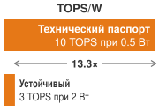
TOPS/W из спецификации завышает устойчивую эффективность в 13.3×.
Измерение мощности отличается от измерения времени исполнения тем, что мощность — не единственный временной интервал с меткой: мгновенная мощность (напряжение питания, умноженное на ток) непрерывно колеблется в фазах исполнения длительностью в микросекунды и дрейфует в течение минут по мере нагрева кремния, увеличивая зависящий от температуры ток утечки. Развёртывания машинного обучения охватывают и широкий физический диапазон. График «гантель» на Рисунок 9 демонстрирует этот разброс на логарифмической шкале мощности. Он отображает минимальные (синие) и максимальные (красные) огибающие по четырём уровням развёртывания: системы TinyML (от 5,6 мВт до 167 мВт), пограничное оборудование (от 3,9 Вт до 1,1 кВт), узлы инференса в дата-центрах (от 267 Вт до 6,3 кВт) и крупномасштабные обучающие кластеры (от 5,5 кВт до 498 кВт). Охватывая около восьми порядков величины от нижней границы TinyML до потолка обучающих кластеров, этот спектр объясняет, почему ни одна единственная метрика эффективности не подходит для всех контекстов развёртывания. Критерий качества, оптимизированный для пропускной способности многокорпусного дата-центра, становится бессмысленным для распознавателя ключевых слов на батарее, живущего в рамках милливаттных бюджетов.
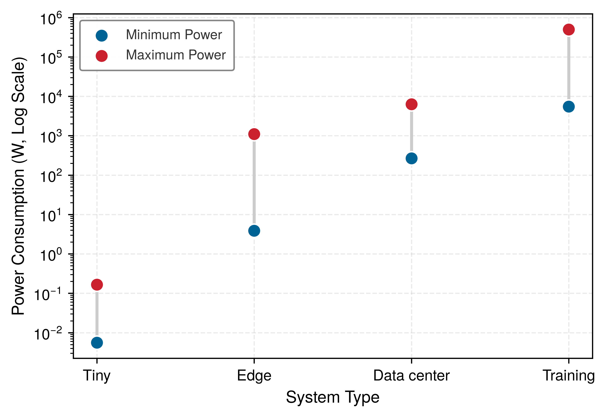
Поскольку измеренная мощность варьируется от милливатт до сотен киловатт, ни один прибор или протокол измерения не применим повсюду. Бенчмаркинг постоянно работающего распознавателя ключевых слов требует измерения токов в микроамперах на низковольтной шине питания, тогда как бенчмаркинг серверной стойки требует измерения высоковольтной мощности на блоке распределения питания. Это расхождение вынуждает стандарты бенчмаркинга устанавливать точные физические границы того, какое оборудование включается в измеряемую энергию.
При любой границе учёт энергии следует контрастным режимам обучения и инференса. Энергия обучения — это капиталовложения, амортизируемые в течение срока эксплуатации модели; крупный обучающий запуск может потреблять порядка тысячи мегаватт-часов (Глава 12.5.2.4) (Patterson и др. 2021 г.). Энергия инференса накапливается непрерывно с объёмом запросов и доминирует в полной стоимости жизненного цикла по мере роста числа запросов до миллионов.
Для изолированного окна инференса, содержащего один завершённый запрос, энергия подчиняется тождеству
12.7.1 Границы измерения мощности
То, где инженер проводит границу системы, определяет, что считается эффективным. Если бенчмарк измеряет только ядро ускорителя, он игнорирует хост-CPU, обслуживающий шину PCIe, внешнюю DRAM, хранящую веса, и вентиляторы охлаждения, рассеивающие тепло. Рисунок 10 разделяет эти периметры измерения по трём уровням развёртывания (Tiny, Inference и Training), где сплошные оливковые рамки обозначают измеряемые компоненты, а красные пунктирные блоки изолируют исключаемую инфраструктуру, такую как удалённое хранилище и чиллеры дата-центра (Tschand и др. 2024 г.).
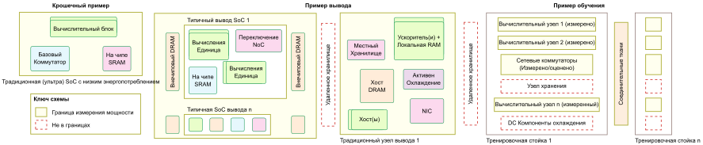
Три архитектурных уровня на Рисунок 10 (Tiny Example, Inference Example и Training Example) отражают различные физические точки измерения. В развёртываниях TinyML граница охватывает всю маломощную систему на кристалле (SoC), включая вычислительные ядра, внутреннюю SRAM и блоки управления питанием; измерение выполняется непосредственно на шине постоянного тока. Выделенные узлы инференса расширяют этот периметр, добавляя хост-процессоры, ускорители, шины PCIe, локальные накопители и активные вентиляторы шасси, но исключают удалённые сети хранения данных. Многостойковые развёртывания обучения измеряют вычислительные узлы и коммутаторы interconnect на вершине стойки, но исключают централизованные чиллеры дата-центра, устройства распределения питания уровня объекта (PDU) и вынесенные кластеры хранения.
Исключённые из границы компоненты могут более чем удвоить заявленную энергию. Google измерил энергию медианного текстового запроса, обслуженного его ассистентом Gemini, при двух границах измерения (Elsworth и др. 2025 г.). Учёт только активных ускорителей, на запросах, обслуженных наиболее эффективными дата-центрами компании, дал 0.10 Wh. Учёт всего, что потребляет сервис для ответа на этот запрос, дал 0.24 Wh — примерно на 2.4× больше. Из этой суммы активные ускорители потребили 58 percent, а хост-процессоры и DRAM, питающие их, — 25 percent. Оставшиеся 17 percent ушли на машины, простаивающие в резерве на случай скачков трафика, и на накладные расходы уровня объекта, такие как охлаждение и преобразование энергии.
Разрыв между двумя границами означает, что оценка только по ускорителям занижает реальное потребление развёрнутого сервиса, а две величины, измеренные при разных границах, несопоставимы. На значение влияет и утилизация, поскольку узкая граница измерения была взята с наиболее эффективно используемых машин. Открытые бенчмарк-наборы, такие как ML.ENERGY, измеряют энергию в реалистичных условиях обслуживания, чтобы их результаты отражали утилизацию в развёрнутых системах, а не идеализированный запуск (Chung и др. 2025 г.).
Граница измерения определяет, какие компоненты учитываются; состав рабочей нагрузки определяет, куда расходуется их энергия. На мобильных устройствах с TensorFlow Mobile перемещение данных составляет 57,3 процента общей энергии инференса (Boroumand и др. 2018 г.), что показывает, почему одного счётчика операций недостаточно для предсказания энергопотребления. Согласно принципу движения энергии («Принцип движения энергии»), общая энергия зависит от того, сколько событий каждого вида происходит и сколько стоит каждое из них, а не только от арифметики. Разбор примера в ноутбуке 12.4 раскладывает энергию инференса MobileNetV2, демонстрируя, как переход с FP32 на INT8 атакует и узкое место перемещения данных по памяти, и затраты на переключения в арифметике.
Инженерный расчёт 12.4: Почему INT8 экономит энергию
Задача: Насколько в рамках заявленной модели энергии компонентов 45 нм замена FP32 на INT8 снижает энергию чтения весов и арифметики MobileNetV2?
Перемещение данных стоит гораздо больше энергии, чем вычисления над ними (принцип «Принцип движения энергии», опирающийся на оценки энергии Хоровица (Horowitz 2014 г.)), поэтому квантизация может экономить энергию как при доступе к памяти, так и в вычислительных операциях.
Более узкие типы данных требуют меньше энергии на переключения и хранение в расчёте на операцию, а внешняя память обходится дороже того и другого. В модели компонентов 45 нм, сведённой в таблицу Точность и энергия (Таблица 8), 8-битный умножитель потребляет примерно на 18.5× меньше энергии, чем 32-битный умножитель с плавающей точкой. Чтение одного байта из DRAM, около 160 pJ/byte, стоит более чем на 1,600× дороже, чем доступ к регистру (Horowitz 2014 г.). Абсолютные значения и соотношения зависят от схемотехники и технологического процесса.
Математика: Энергия компонент — это сумма слагаемого перемещения данных и слагаемого вычислений (Уравнение (5)): слагаемое загрузки
Таблица 17 объединяет оба эффекта в нарочито упрощённой модели MobileNetV2. Она учитывает одно чтение из DRAM на каждый вес и начисляет каждому занесённому в каталог FLOP энергию умножителя из таблицы, исключая трафик активаций, поведение кэша, сложения как отдельную статью затрат, накладные расходы на управление и статическую мощность:
| Компонент | FP32 (14 MB) | INT8 (3.5 MB) | Экономия |
|---|---|---|---|
| Одно чтение веса из DRAM | 2243 μJ | 561 μJ | 4× |
| Вычисления (600 MFLOP) | 2,220 μJ | 120 μJ | 18.5× |
| Итого | 4,463 μJ | 681 μJ | 6.6× |
Системный вывод: В рамках этой упрощённой модели чтение весов и арифметика дают сопоставимую энергию FP32 (2243 μJ и 2,220 μJ), и INT8 снижает обе, уменьшая итог с 4,463 μJ до 681 μJ. Это разложение объясняет физический механизм возможной экономии, однако заявления о времени автономной работы или энергии на инференс требуют контролируемых измерений мощности всего устройства.
Помимо отдельных серверных узлов, крупномасштабные развёртывания вводят общую инфраструктуру, усложняющую определение границы. В дата-центрах системы охлаждения и подача энергии составляют от 20 до 30 процентов общего электропотребления объекта (Barroso и др. 2019 г.). Эти накладные расходы уровня объекта учитываются показателем эффективности использования энергии (PUE):
12.7.2 Бенчмаркинг батареи и тепловых характеристик
Разряд батареи зависит от общей энергии, потреблённой за время, а не от пиковой мгновенной мощности. Всплески вычислительной фотографии потребляют несколько ватт в течение сотен миллисекунд при съёмке изображения, тогда как фоновая обработка сенсоров должна укладываться в бюджет порядка милливатт, чтобы обеспечить многодневное время работы от батареи. Оценка влияния на батарею требует измерения полного энергопотребления
Главная эксплуатационная переменная — скважность рабочей нагрузки
Распознавание ключевых слов (keyword spotting) делает этот тезис конкретным. DS-CNN (Zhang и др. 2017 г.) — эталонная модель распознавания ключевых слов из MLPerf Tiny с вычислительной нагрузкой 20 MFLOP на инференс — выполняется здесь на плате на базе микроконтроллера класса ESP32-S3 с одним инференсом на односекундное аудиоокно. При пиковой скорости INT8-обработки платы инференс занимает около 8.3 ms, что соответствует рабочему циклу около 0.8 percent, и стоит около 3.3 mJ при активной мощности платы 0.4 W. Между инференсами плата простаивает, потребляя 50 mW. Средняя мощность, следовательно, составляет около 52.9 mW, причём 94 percent этой мощности тратится на ожидание. Бенчмарк, сообщающий только энергию на инференс, описывает лишь оставшиеся 6 percent расхода батареи. Активная энергия превзошла бы уровень простоя, только если бы инференс занимал более примерно 11 percent времени, а реальные ядра, работающие ниже пика, увеличивают долю активной энергии, не меняя вывода. Именно поэтому постоянно работающий аудиоконтур переносят на специализированный маломощный кремний с потреблением в режиме простоя порядка микроватт, и поэтому бенчмарк энергопотребления для устройства с рабочим циклом должен задавать рабочий цикл наряду с самим инференсом.
12.7.3 Вычислительная эффективность и энергопотребление
Даже при фиксированной рабочей нагрузке и рабочем цикле короткий всплеск на повышенной тактовой частоте и длительный прогретый запуск дают разную эффективность для одного и того же чипа. Это следует из физики CMOS: полная мощность складывается из динамической мощности переключения и статической мощности утечки, а в диапазоне, где напряжение питания отслеживает тактовую частоту, динамическая мощность растёт примерно пропорционально кубу частоты (Управление питанием и тепловым режимом выводит обе зависимости). Поскольку изменение тактовой частоты на несколько процентов сдвигает мощность куда сильнее, чем пропускную способность, измеренная эффективность строго привязана к той рабочей точке, в которой она была получена.
Статическая утечка также растёт с температурой, из-за чего прогретое устройство менее эффективно при той же тактовой частоте, чем холодное, — именно поэтому приведённый ниже протокол измерения мощности требует прогреть устройство до целевого теплового состояния до начала журналирования. Смена поколений оборудования тоже сдвигает эффективность: количество вычислений на киловатт-час исторически удваивалось примерно каждые 1,5 года — долгосрочная тенденция, известная как закон Куми (Koomey’s law) (Koomey и др. 2011 г.), — поэтому при сравнении эффективности разных устройств необходимо также указывать, какое поколение представляет каждое из них.
Поскольку масштабирование частоты быстро упирается в потолок TDP, разработчики систем оптимизируют эффективность по осям данных, алгоритмов и машины. Со стороны алгоритмов и данных арифметика пониженной точности (INT8 или FP8) напрямую уменьшает переключаемую ёмкость в АЛУ и сжимает трафик памяти через шины соединений, потенциально снижая динамическую энергию, если выбранный формат сохраняет требуемое качество модели (Jacob и др. 2018 г.; Wu и др. 2020 г.; Gholami и др. 2021 г.). Со стороны машины тактовая частота и напряжение задают рабочую точку, а точка наименьшей энергии может оказаться медленной тактовой частотой, чьё долгое время выполнения нарушает дедлайн. Устройства с ограниченной батареей и энерголимитированные дата-центры должны выбирать рабочие точки против собственных требований к задержке, пропускной способности и энергии, используя калиброванные измерители и синхронизированные окна измерений, которые захватывают утечку, активное переключение и мощность простоя вместе.
12.7.4 Стандартизованное измерение мощности
Бенчмарки энергопотребления общего назначения, такие как SPECpower_ssj2008, измеряют мощность сервера на ступенчатых уровнях нагрузки (от 0 до 100 процентов с шагом в 10 процентов), используя стационарные транзакционные рабочие нагрузки (Lange 2009 г.). Напротив, ML-нагрузки быстро колеблются по мощности: мгновенное потребление чередуется между умножениями матриц, ограниченными вычислениями (где систолические массивы или Tensor Cores потребляют пиковый ток), и паузами, ограниченными памятью, или передачами токенов (где исполнительные блоки простаивают в ожидании выборки из DRAM или через соединения).
Для характеризации этих колебаний требуется калиброванная физическая измерительная аппаратура. Программные счётчики, встроенные в процессоры и ускорители, удобны, но их точность, частоты обновления и накладные расходы на опрос различаются между устройствами. Измерительный прибор должен соответствовать границе измерения и требуемой неопределённости. Протоколы мощности MLPerf для систем инференса используют внешние калиброванные анализаторы, тогда как для измерений обучения и HPC допускается валидированная телеметрия узла или распределения питания; для измерений Tiny применяется аппаратура, подходящая маломощным устройствам (Tschand и др. 2024 г.).
Разрешение переходного процесса отдельного ядра требует полосы пропускания измерительного тракта и частоты дискретизации, достаточных, чтобы проследить за ним, ведь лог с частотой в килогерц не может отследить микросекундные всплески мощности. Полная энергия запуска, напротив, требует интегрирования мощности по всему окну измерения:
- Фаза прогрева выполняет неизмеряемые инференсы, пока кэши, буферы и температура не достигнут целевого рабочего состояния.
- Окно продолжительного измерения выполняет повторные инференсы в течение минут, чтобы усреднить микроархитектурные сдвиги фаз и тепловой дрейф.
- Аппаратно-программная синхронизация выравнивает временные метки мощности и рабочей нагрузки так, чтобы проинтегрированная энергия и выполненные запросы покрывали одно и то же окно. Для холодного старта или прерывистого развёртывания требуются дополнительные измерения, включающие стоимость инициализации, сна и пробуждения.
Структура рабочей нагрузки также меняет профиль мощности. В исполнении Transformer с малым батчем декодирование часто имеет меньшее переиспользование весов, чем prefill, и может упираться в более низкий потолок пропускной способности; их измеренные профили мощности зависят от форм, ядер и операционной политики. Поисковые выборки эмбеддингов в DLRM могут сделать трафик памяти существенным вкладчиком в энергопотребление, который должен измеряться наряду с плотными вычислениями и статической мощностью.
Операционная политика тоже сдвигает профиль мощности. Размер батча создаёт компромисс: более крупные батчи могут снизить энергию на инференс, одновременно меняя трафик активаций, время выполнения и мгновенную мощность. На периферии исход определяет рабочий цикл через среднюю мощность рабочего цикла из Глава 12.7.2, где кейс распознавания ключевых слов показывает, что уровень простоя задаёт срок жизни батареи.
12.7.5 Кейс MLPerf по мощности
MLPerf Power (Tschand и др. 2024 г.) переводит сырые электрические измерения в стандартизованные метрики эффективности: выполненные инференсы в секунду на ватт при строго определённой системной границе. Этот протокол применяет единые принципы измерения в сценариях дата-центров, периферии и tiny-инференса, где ограничивающее условие смещается от охлаждения стоек и стоимости эксплуатации к времени работы от батареи и сбору энергии в микроваттном диапазоне.
Стандартизация границы предотвращает вводящие в заблуждение сравнения между архитектурными семействами. Задавая аппаратуру, границы измерения, согласованные окна журналирования и применимые ограничения рабочей нагрузки, MLPerf Power делает результаты эффективности интерпретируемыми внутри проверенного сценария.
По последовательным раундам подачи бенчмарков с 2021 по 2024 год стандартизованные измерения фиксируют, как архитектурные улучшения, оптимизации компиляторов и арифметика пониженной точности превращаются в рост эффективности в продакшене. Отслеживая нормализованную энергоэффективность (сэмплов на джоуль) на протяжении восьми циклов подачи от v1.0 до v4.1, Рисунок 11 отображает расходящиеся траектории эффективности по семи различным рабочим нагрузкам MLPerf Inference.
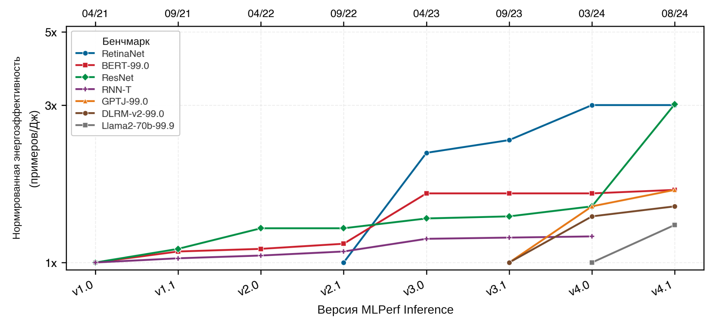
RetinaNet и ResNet показывают наибольшие отображённые приросты, каждый достигая 3
Протоколы хронометрирования и аппаратура измерения мощности дают сырые данные для бенчмаркинга. Однако одни лишь сырые данные не гарантируют корректных выводов. Превращение измерений в осмысленные сравнения требует понимания систематических источников ошибок, смещений и рассинхронизации, способных сделать вводящими в заблуждение даже тщательно собранные бенчмарк-числа.
12.8 Лучшие практики бенчмаркинга
Перечисленные источники ошибок, искажений и рассогласования объясняют, почему стек инференса, успешно проходящий стационарный запуск MLPerf в лаборатории, всё равно может не достичь целевой задержки, когда производственный трафик приходит коррелированными всплесками, или почему выигрыш в две точки в таблице лидеров может целиком лежать внутри шума выборки тестового набора. Для пропускной способности при обучении, задержки инференса и энергетической эффективности существуют устоявшиеся протоколы измерений, однако эти протоколы опираются на упрощающие допущения, расходящиеся с производственной реальностью.
Наборы для обучения замораживают датасеты и фиксируют случайность, хотя производственные данные и условия переобучения непрерывно меняются. Наборы для инференса делают акцент на определённом стационарном сценарии, хотя живой трафик приходит всплесками с переменной длиной последовательностей. Бенчмарки энергопотребления контролируют тепловую среду, тогда как развёрнутые ускорители сталкиваются с переменной температурой окружающей среды и длительными тепловыми нагрузками. Превращение сырых измерений в надёжные инженерные решения требует защиты от четырёх классов неудач: статистического и методологического шума, невоспроизводимых условий запуска, рассогласования системы и развёртывания (включая «лотерею железа»), а также организационных стимулов к «накрутке» результата.
12.8.1 Статистические и методологические проблемы
Падение точности на одну единицу на 1 000 тестовых изображений или улучшение задержки на 2 процента между отдельными запусками бенчмарка может целиком лежать внутри шума выборки и шума системы. Чтобы отличить реальное изменение от случайности, требуется один и тот же статистический аппарат для каждого бенчмарка в этой главе — от тайминга ядра до сравнения точности.
Чтобы изолировать вариативность от запуска к запуску, протоколы бенчмаркинга требуют повторных экспериментальных испытаний с контролируемыми псевдослучайными зернами. Количество запусков должно удовлетворять явным целям статистической мощности, задающим вероятность обнаружения заявленного реального эффекта, а не Opportunistic-выборке. Отчётность должна выходить за пределы единственного лучшего результата из
Даже когда вариативность исполнения от запуска к запуску полностью контролируется, бенчмаркинг сталкивается со структурным ограничением самого оценивающего датасета: ёмкостью измерения тестового набора. Тестовый набор работает как измерительный прибор с конечным пределом разрешения. Поскольку точность на конечной выборке — это биномиальная доля, эмпирические оценки несут внутреннюю дисперсию выборки, обратно пропорциональную размеру выборки. Когда оптимизация меняет точность на один-два процентных пункта, размер выборки и парный характер расхождений определяют, может ли тест отличить подлинный алгоритмический эффект от флуктуации выборки. Как показано в сопровождающем ноутбуке, предельные оценки точности на тестовом наборе из тысячи образцов недостаточны для установления значимости тонкого различия без рассмотрения парных исходов. Это конечное разрешение — половина разрыва верификации, ограничения на то, что вообще может подтвердить конечное оценивание; вторую половину рассматривает Глава 12.9.2.
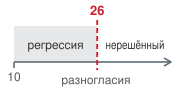
Не более 26 расхождений выявляют регрессию; решает число расхождений.
Инженерный расчёт 12.5: Статистическая ловушка доверия
Задача: Базовый классификатор показывает 95 percent, а сжатая версия — 94 percent на тех же 1,000 изображениях. Устанавливает ли это падение в 1 percentage-point регрессию?
Математика:
Ожидаемые ошибки: Оценкам соответствуют 50 errors и 60 errors. В базовой биномиальной модели число ошибок имеет стандартное отклонение около 7 errors.
Интервал разности (95 percent): Два маржинальных результата сами по себе допускают лишь непарный интервал, который предполагает, что модели оценивались на независимых тестовых наборах, отобранных из одной популяции. Обе модели видели одни и те же изображения, так что это допущение здесь ложно, и этот шаг показывает только то, что может сказать непарный взгляд, прежде чем шаг 3 применит корректный тест. Пусть
и — их оценки точности, а — число изображений, оценённых для каждой модели. В рамках допущения независимых наборов стандартная ошибка их разности равна Наблюдаемая разность в 1 percentage point имеет приближённый интервал от -1 percentage point до 3 percentage points, который включает ноль. При трактовке как независимых выборок падение на 1 percentage-point неотличимо от шума выборки. Спаривание может изменить этот вердикт, поскольку изображения, которые обе модели классифицируют одинаково, сокращаются из сравнения.
Парный тест на одних и тех же изображениях: В поставленной задаче один тестовый набор, поэтому решающим свидетельством является то, где две модели расходятся. Пусть
— число изображений, которые правильно классифицирует только базовая модель, а — только сжатая. Изображения, которые обе модели классифицируют одинаково правильно или одинаково неправильно, не несут информации о том, какая лучше, и тест Макнемара (McNemar 1947 г.) их отбрасывает. Поскольку сжатая модель делает в сумме на 10 ошибок больше, чем базовая, число «только базовая» должно превышать число «только сжатая» ровно на эту величину. Поэтому маржинальные оценки фиксируют чистую разность на значении 10, оставляя общее число расхождений свободным. Статистика теста, без поправки на непрерывность (распространённый вариант, уменьшающий чистую разность на единицу перед возведением в квадрат), равна и падение значимо на уровне 95 percent, когда
превышает 3.84 — критическое значение распределения хи-квадрат с одной степенью свободы на этом уровне доверия. Это происходит, только когда модели расходятся не более чем на 26 изображениях, например когда сжатая модель делает те же 50 errors, что и базовая, плюс 10 новых ( ). Следствие: Маржинальные оценки не могут ответить на вопрос; решает число расхождений. Если 10 дополнительных ошибок сжатой модели — почти её единственные расхождения с базовой, парный тест даёт свидетельство регрессии на заявленном пороге значимости. Если модели расходятся на значительно большем числе изображений, тест оставляет ту же разность в 1 percentage-point неразрешённой. Незначимость не устанавливает эквивалентность и соответствие допустимому допуску на потерю качества. Поэтому отчёт по бенчмарку должен сохранять исходы по каждому изображению, а не только две оценки точности; предлагаемое ниже решающее правило на основе интервалов разделяет неразрешённую разность и подтверждённое улучшение.
Системный вывод: Маленький тестовый набор ограничивает то, что бенчмарк может разрешить. Тестовый набор, рассматриваемый как измерительный прибор, должен быть достаточного размера, чтобы соответствовать точности изменения, которое он призван обнаружить. Одной оценке точности нужно около 1,825 изображений для точности ±1 percentage point, и этот размер выборки сам по себе не обеспечивает мощность сравнения двух моделей.
Та же парная логика управляет сравнениями таймингов. Пусть инженер измеряет среднюю задержку базовой и кандидатной версий при одном и том же составе запросов, предлагаемой нагрузке и границе тайминга. Каждое экспериментальное испытание спаривает полный запуск базовой версии с полным запуском кандидатной, следуя одному протоколу прогрева и теплового состояния и рандомизируя порядок их исполнения, чтобы медленные изменения — например, прогрев машины — не давали преимущества той реализации, которая запускается второй. Сравнение предполагает, что отдельно повторяемые пары запусков независимы, а постоянный фоновый нагрузочный или тепловой дрейф контролируется или учитывается. Запросы внутри одного запуска могут делить очереди, кэши и тепловые условия и потому не могут автоматически считаться независимыми испытаниями. В отчёте указываются метод интервала и уровень доверия, а пары запусков используются как повторные наблюдения. p99 задержки запроса описывает медленный конец наблюдаемой популяции запросов. Это ни доверительный интервал для средней задержки, ни мера неопределённости самой оценки p99.
Предположим, отчёт содержит интервальную оценку неопределённости для среднего сокращения задержки, определяемого как задержка базовой линии минус задержка кандидата. Если интервал простирается от отрицательного сокращения к положительному, например от −0.3 мс до +1.1 мс, он включает нулевое изменение, и эксперимент не позволяет установить, быстрее ли кандидат. Такой вывод не означает, что реализации работают одинаково. Если последующее адекватно контролируемое сравнение даст интервал целиком выше нуля, скажем от +0.4 мс до +1.2 мс, он подтверждает сокращение задержки в протестированных условиях. Развёртывание всё ещё требует заранее заданного минимально полезного сокращения, скажем 0.5 мс, отражающего стоимость перехода на кандидата. Интервал от +0.4 мс до +1.2 мс подтверждает наличие выигрыша, но не того, что выигрыш оправдывает внедрение, поскольку его нижняя граница лежит ниже этого порога; интервал, целиком лежащий выше порога, например от +0.6 мс до +1.2 мс, подтверждает оба утверждения — при условии, что проверки качества и ресурсов также пройдены.
Ещё две проблемы подрывают надёжность даже при корректном повторении и сравнении прогонов, поскольку каждая ограничивает то, что корректно проанализированный результат может удостоверить. Одна сужает множество входных данных, о которых говорит результат, а другая добавляет шум от самого оценивания. Неполное покрытие задач возникает, когда бенчмарк нагружает лишь узкую рабочую точку системы. Контролируемые наборы данных, такие как CIFAR-10 (Krizhevsky 2009 г.), ограничивают входы однородными низкоразрешёнными изображениями (
Средство оценивания также может вносить собственную дисперсию, что повышает число испытаний, необходимых, чтобы отличить алгоритмическое улучшение от шума измерений. Оценивание больших языковых моделей демонстрирует эту уязвимость: при выставлении оценок сгенерированным ответам кандидата относительно эталона — будь то людские рейтинги предпочтений или протокол «LLM-судья» — оценки существенно варьируются в зависимости от формулировки промпта, настройки судейской модели и порядка ответов. Заявленный перевес в два балла может исчезнуть при другом шаблоне промпта или конфигурации судьи. Строгая оценка требует парных проверок гипотез и бутстрэп-доверительных интервалов на сотнях независимых пар промптов. Пренебрежение этими доверительными границами скрывает, отражает ли заявленный отрыв действительный архитектурный прогресс или стохастический шум оценивания.
12.8.2 Воспроизводимость
Исследования воспроизводимости неоднократно показывали, что скромные выигрыши в бенчмарках могут исчезать при смене случайных зёрен, оборудования, версий фреймворков или деталей реализации (Henderson и др. 2018 г.). Стохастические процессы, которые Глава 12.4.2 определил как шум измерений, на протяжении длительного обучения взаимодействуют с аппаратно-специфичными особенностями (округление чисел с плавающей точкой, раскладка памяти, оптимизации компилятора) и дают результаты, которые могут существенно различаться между средами.
Более глубокий уровень недетерминизма даёт само параллельное оборудование. Операции вроде параллельных атомарных сложений, применяемых при накоплении градиентов для разреженных эмбеддинг-таблиц рекомендательных моделей, таких как DLRM, выполняются в недетерминированном порядке между потоками, когда конкурентные обновления нацелены на одну ячейку памяти. Порядок суммирования с плавающей точкой меняется между прогонами, и поскольку сложение с плавающей точкой не ассоциативно (Воспроизводимость и системные артефакты), другой порядок даёт побитово иные градиенты даже при идентичных входах и зёрнах. Обеспечение побитовой точности воспроизводимости в этих случаях требует детерминированного пути редукции, что может снизить пропускную способность обучения — прямой компромисс между воспроизводимостью и производительностью, который протоколы бенчмарков должны явно оговаривать. Без явного контроля всех этих источников изменчивости числа бенчмарка отражают конкретное стечение условий, а не подлинную возможность системы.
MLPerf Training решает это через стандартизованную предобработку данных, правила целевого качества и повторные принятые прогоны, характеризующие стохастическую вариацию (Mattson и др. 2020 г.). Цель — показать, что заявленная производительность отражает способность системы, а не удачное сочетание стохастических факторов, чего одиночный быстрый прогон показать не может.
Поэтому воспроизводимость для обучающего бенчмарка — это весь конверт прогона, а не только случайное зерно. Достоверный отчёт должен сохранять коммит модели, контрольную сумму набора данных, конвейер предобработки, план зёрен, версии фреймворка и компилятора, политику точности, расписание батчей, топологию оборудования, тепловые и энергетические лимиты и поведение контрольных точек. Он также должен приводить распределение принятых прогонов, а не единственный лучший. Только тогда бенчмарк способен отделить реальное улучшение системы от удачного взаимодействия версии ПО, состояния оборудования и стохастической траектории обучения.
Воспроизводимость также ограничивает сравнения между программными средами. Ревизия компилятора или библиотеки может изменить разбиение ядер на тайлы, доступ к памяти и порядок редукции, так что необъяснённое изменение версии — это второе вмешательство в эксперимент. Конверт прогона, описанный выше, должен сопровождать результат; совпадение имени модели и зерна само по себе не делает два стека эквивалентными.
12.8.3 Системные проблемы проектирования
Даже статистически значимый, побитово воспроизводимый бенчмарк терпит неудачу, если измеряет неверный операционный режим — как когда стек обслуживания, выдающий высокий QPS в режиме Offline или при гладких пуассоновских прибытиях Server, нарушает свой SLO по задержке, как только коррелированные производственные всплески или длинные промпты заполняют его очереди и память. Рассогласование с реальными целями сохраняется даже тогда, когда стандартизованный бенчмарк чисто выполнен и воспроизведён, поскольку сценарии Offline и Server отвечают на разные вопросы, а сценарий Server задаёт лишь одно распределение прибытий. Эксперимент должен указывать, какие рабочие условия охватывает его вывод, а квалификация в производстве проверяет эти границы до релиза; итоговое резюме возвращается к этим разрывам как к проблеме релиза, когда оценивание модели и данных уже выполнено.
Помимо согласованности с развёртыванием, существует ещё одна категория ограничений, проистекает прямо из физического оборудования, исполняющего рабочую нагрузку. Поведение ускорителя колеблется в зависимости от тепловых условий, конкуренции за ресурсы операционной системы и лежащей в основе микроархитектурной топологии.
Контроль условий среды должен соответствовать проверяемому утверждению. Фиксированные частоты, привязка к CPU и изолированные аллокации памяти могут снизить шум при сравнении реализаций, тогда как тест на развёртывание должен сохранять релевантную конкуренцию и тепловую политику. Механизмы устойчивого состояния из Глава 12.6.4 применимы к серверам так же, как и к граничным устройствам. Результат, полученный при более жёсткой изоляции, подтверждает сравнение реализаций, но сам по себе не устанавливает производственную ёмкость.
«Аппаратная лотерея»28 (Hooker 2021 г.) усугубляет эту физическую вариацию, связывая жизнеспособность алгоритмов со специализированной аппаратной поддержкой. Современные ускорители отводят большую часть площади кремния блокам плотного матричного умножения (таким как Tensor Cores или систолические массивы), подкреплённым широкими векторными блоками и высокоскоростными иерархиями памяти. Алгоритмические архитектуры, такие как плотные трансформеры, достигают высокой арифметической интенсивности за счёт переиспользования весов по батчевым токенам, удерживая большую долю пиковых теоретических FLOP/s. Напротив, архитектуры, опирающиеся на динамический поток управления, мелкозернистую разреженность или передачу сообщений в графах, читают память разбросанными паттернами и ветвятся непредсказуемо, оставляя большую часть вычислительного кремния простаивающей (Аппаратное ускорение). Алгоритмическая производительность в бенчмарке часто отражает то, насколько естественно вычислительный граф модели ложится на доминирующие исполнительные блоки ускорителя, а не внутреннее математическое превосходство.
Аппаратная лотерея — это то, как горький урок проявляется в таблице лидеров. Общие методы выигрывают, оседлав рост вычислений, но растущие вычисления — это плотная форма, которую поставляют доминирующие ускорители, так что выигрывающие методы оказываются и теми, что подогнаны под неё.
↩︎ Горький урок — о том, что общие методы, масштабирующиеся с ростом вычислений, обгоняют рукотворную структуру, — установлен в Горький урок.
Аппаратная совместимость вносит систематические смещения при оценивании моделей на разнородных целевых платформах исполнения. Архитектура, оптимизированная под исполнение на GPU, может показывать худшие результаты на встраиваемом CPU, DSP или специализированном граничном ускорителе с иной разрядностью векторов, иерархиями кэша и поддержкой квантизации. Пять аппаратных целей на Google Pixel 4 иллюстрирует Рисунок 12: фронтира Парето «задержка–точность» перетасовывается между исполнением CPU float, CPU uint8, GPU, EdgeTPU и DSP. Диагональная фиолетовая стрелка связывает MobileNetV3 Large при примерно 75 процентах точности top-1: от примерно 20 мс на CPU float до 4.5 мс на DSP. Multi-MAX — семейство мобильных моделей, найденное архитектурным поиском как хорошо работающее на нескольких аппаратных целях, — достигает примерно 75 процентов точности при 2.2 мс на EdgeTPU и 3.4 мс на DSP; его точки с более высокой точностью несут большую задержку. Поэтому сравнения должны сопоставлять и вариант модели, и рабочую точку по точности. Смещённые фронтиры показывают, почему выбор модели требует измерений на целевом пути исполнения, а не унаследованного от другого процессора рейтинга задержек.
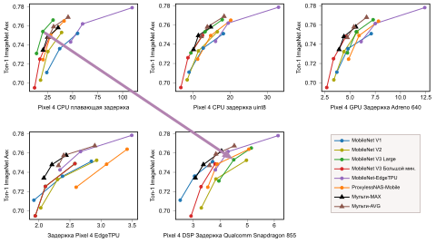
Без бенчмаркинга на разнородных аппаратных конфигурациях системные проектировщики рискуют выбирать архитектуры только потому, что они соответствуют существующим иерархиям памяти ускорителей и наборам инструкций. Оценка моделей на разнообразных исполнительных движках гарантирует, что архитектурные решения отражают вычислительную эффективность, а не артефакты платформенно-специфичной совместной разработки.
12.8.4 Организационные и стратегические вопросы
Статистическая мощность, воспроизводимые диапазоны запусков и тесты на целевом оборудовании решают вопросы методики измерений. Отдельная категория неудач связана с человеческими стимулами: когда многомиллионный контракт на закупку или принятие статьи зависит от одного места в рейтинге, команды испытывают сильное давление в сторону оптимизации под саму оценку, а не под репрезентативную производительность при развёртывании.
Инженерия бенчмарков
Если «лотерея оборудования» — непреднамеренное следствие специализации оборудования, то инженерия бенчмарков — это сознательная практика подгонки моделей или систем под эксплуатацию особенностей конкретных тестовых стендов. Такая практика даёт завышенные показатели производительности, которые рассыпаются в производственных условиях.
Инженерия бенчмарков возникает, когда разработчики подбирают гиперпараметры, конвейеры предобработки или пути исполнения специально для максимизации оценок бенчмарка, а не обобщаемой производительности. Легитимная оптимизация соблюдает правила запуска и заявленную рабочую нагрузку; вводящая в заблуждение инженерия бенчмарков эксплуатирует ограниченные условия тестирования, делая более широкие заявления, чем способно подтвердить свидетельство. Например, конвейер инференса может жёстко зашивать размерности входных тензоров и дополнять батчи нулями специально под шаг памяти тайловой конфигурации GEMM ускорителя. Такой конвейер достигает пиковой пропускной способности на фиксированных формах бенчмарка, но на произвольных производственных входах вызывает дорогостоящие откаты ядер и перевыделения памяти. Аналогично дообучение конвейера оценки под стилистические предпочтения автоматической оценочной модели даёт высокие места в рейтингах, которые не работают при взаимодействии с неструктурированным человеческим диалогом.
Контракты на закупку и маркетинговые заявления поощряют именно такую подгонку. Это закон Гудхарта (Глава 12.1), действующий на уровне организации, а не на уровне выбора метрики одной командой.
Чтобы такая игра с бенчмарками не искажала закупки и инженерные оценки, стандартизованные наборы вводят строгие правила запуска, подкреплённые эталонными реализациями, аудитом отправленных результатов и границами дивизионов. Их правила запрещают три класса необобщаемых сокращений:
- Урезание точности без раскрытия: компилятор молча снижает числовую точность (например, выполняя промежуточные активации в FP8 или INT8 вместо BF16), чтобы завысить арифметическую пропускную способность, не раскрывая уменьшенный динамический диапазон и не проверяя, не ухудшает ли пониженная точность численную стабильность на производственных рабочих нагрузках.
- Прореживание работы и устранение операторов: исполнительный движок использует фиксированные тестовые наборы бенчмарка, чтобы пропускать операции, требующиеся произвольным производственным входам, — например, обходить удаление динамического дополнения, маскировать выходящие за границы токены или пропускать проверку границ входа.
- Снятие отпечатка бенчмарка: среда исполнения исследует размерности входных тензоров, хэш-отпечатки наборов данных или паттерны раскладки памяти, чтобы опознать набор бенчмарка и исполнять жёстко зашитые, заранее настроенные графы исполнения и bespoke-конфигурации ядер, недоступные произвольным рабочим нагрузкам пользователей.
MLPerf выявляет и сдерживает эти сокращения через свои дивизионы отправки результатов (определённые в Глава 12.4.4), проверки эквивалентности с эталоном и рецензируемые аудиты кода. Закрытый дивизион допускает воспроизводимые оптимизации среды исполнения, преобразования раскладки памяти (например, изменение порядка размерностей тензора с channels-first NCHW на channels-last NHWC), аппаратно-обобщаемое слияние ядер и утверждённые низкоточные форматы при документированном и проверяемом качестве выхода, тогда как необобщаемые сокращения остаются запрещёнными. Более широкие архитектурные изменения — в открытом дивизионе.
Смещение и избыточная оптимизация
Системные инженеры, оценивающие результаты бенчмарков, должны отличать легитимные архитектурные улучшения от инженерии бенчмарков, и несколько практик вскрывают разницу. Отправленные результаты, публикующие полные флаги компилятора, конфигурации ядер и трассировки исполнения, позволяют независимым оценщикам отделить общие улучшения эффективности от подгонки под конкретный стенд. Парные результаты — на контролируемом бенчмарке и на некурировируемых производственных трассах — вскрывают расхождения в распределениях задержек и использовании памяти. Оценка на нескольких независимо поддерживаемых наборах повышает барьер против переобучения, поскольку оптимизация под причуды одного стенда редко переносится на другие.
Верификация третьей стороной добавляет подотчётность. Независимые аудиты проверяют, воспроизводятся ли заявленные ускорения на идентичном оборудовании — как в валидации «эталон против отправленного результата» в MLPerf (Глава 12.8.4.1), — а специализированные стресс-тесты зондируют режимы отказа, которые статические бенчмарки упускают: например, модели зрения в неблагоприятных условиях съёмки или движки инференса под перекошенным трафиком запросов.
Эволюция бенчмарков
Бенчмарки — не статичные стандарты; они должны развиваться вместе с архитектурами моделей и возможностями оборудования. Бенчмарк, эффективно разделявший возможности систем в одном архитектурном поколении, устаревает, когда модели исчерпывают его предел точности или когда аппаратные инновации сдвигают основное узкое место системы. Устаревшие бенчмарки поощряют избыточную оптимизацию устаревших вычислительных ядер вместо продвижения эффективности систем.
Ранние бенчмарки глубокого обучения оценивали классификацию изображений и обнаружение объектов на свёрточных сетях. По мере расширения рабочих нагрузок до больших языковых моделей, рекомендательных систем и генеративного ИИ эти бенчмарки на изображениях перестали отражать внимание на длинных контекстах, авторегрессионное декодирование и разреженную маршрутизацию к экспертам, и бенчмарки сообщества сместились к пониманию языка (Wang и др. 2018 г., 2019 г.) и возможностям фундаментальных моделей (Liang и др. 2022 г.). Как насыщение подрывает различительную силу статичного бенчмарка — вопрос данных; он рассматривается в Глава 12.9.2.
Эволюция бенчмарков также расширяет измеряемые размерности. Пока ранние бенчмарки сосредотачивались на пропускной способности и точности, современные системы требуют многоцелевой оценки: энергоэффективность, занимаемый объём памяти и хвостовая задержка в условиях ограниченных ресурсов. Ещё один режим ограничений задают научные приборы — см. Рисунок 13. Его заштрихованный конверт «Fast ML for Science» относит триггерные конвейеры физики частиц, которые должны решать, какие показания детектора сохранить, за время существенно меньше миллисекунды, далеко за пределами типичных рабочих точек мобильных и IoT-устройств (Duarte и др. 2022 г.). Именно расстояние между этими рабочими точками объясняет, почему бенчмарк должен соответствовать своему приложению.
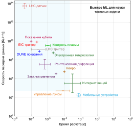
Управление эволюцией бенчмарков вводит прямой компромисс между продольной стабильностью и архитектурной актуальностью. Бенчмарки должны оставаться неизменными достаточно долго, чтобы допускались строгие сравнения оборудования и программного обеспечения между поколениями. Если бенчмарки меняются слишком часто, отслеживать исторический прогресс становится невозможно. Напротив, бессрочная заморозка бенчмарка ведёт к стагнации метрик и избыточной специализации. Современные бенчмаркинговые консорциумы балансируют этот компромисс, работая по фиксированным циклам релизов: они вводят новые репрезентативные рабочие нагрузки и выводят из употребления устаревшие наборы.
Даже самые строгие системные бенчмарки валидируют лишь одну размерность готовности к развёртыванию. Рекордная пропускная способность и энергоэффективность на рабочей нагрузке MLPerf подтверждают, что стек оборудования и среды исполнения способен обеспечить высокую вычислительную эффективность. Но он не может определить, обобщается ли развёрнутая модель на реальные распределения и представляет ли базовый набор данных операционную популяцию. В таксономии D·A·M пропускная способность оборудования (Machine) — необходимый фундамент, но алгоритмическая точность (Algorithm) и целостность наборов данных (Data) должны выполняться одновременно. Поэтому валидация продолжается — моделью и данными.
12.9 Оценка модели и данных
Сжатая модель, работающая на ускоренном оборудовании — например, INT8 MobileNetV2 в фотоловушке, — всё равно может давать сбой, если она обучена на нерепрезентативных данных. Системные бенчмарки могут подтвердить, что аппаратное обеспечение обеспечивает обещанные пропускную способность при обучении, задержку инференса и энергоэффективность, но одна лишь валидация оборудования не гарантирует успеха развёртывания. Конвейер оптимизации из части III включал также сжатие модели и отбор данных, каждое из которых требует собственной валидации. Именно на этот разрыв направлены два других измерения бенчмаркинга, названных в начале главы: бенчмарки моделей проверяют, сохранило ли сжатие точность и ключевые свойства модели, а бенчмарки данных — позволяет ли обучающая выборка устойчиво обобщать.
12.9.1 Бенчмаркинг моделей
Прореженная модель может сохранять точность top-1 на ImageNet, теряя устойчивость к состязательным входам. Квантованная модель может сохранять производительность в среднем случае, деградируя на редких граничных случаях. Дистиллированная модель может сравняться с учителем по точности, потеряв калибровку уверенности. Бенчмарки моделей проверяют, сохранило ли сжатие свойства, важные для развёртывания, помимо итоговой точности. Исторически бенчмарки были сосредоточены почти исключительно на точности, но сжатие делает многомерную оценку необходимой.
↩︎ Прореживание, квантизация и дистилляция — техники сжатия, которые проверяют эти бенчмарки, — описаны в Сжатие моделей.
Оценка сжатой модели требует сравнения её поведения с несжатой базовой линией — эталонной моделью, из которой она была получена. В компьютерном зрении маяковые архитектуры из Таблица 1 задают базовые линии по точности и ресурсам, относительно которых оцениваются техники сжатия: любая прореженная или квантованная вариант должна показать, какую точность на задаче она уступает ради данного снижения задержки, занимаемого объёма памяти или энергопотребления. ResNet-5029 служит стандартной эталонной рабочей нагрузкой MLPerf именно потому, что его умеренный масштаб (25.6M параметров) и хорошо охарактеризованный вычислительный профиль (8.2 GFLOP на изображение) делают его чувствительным как к аппаратным, так и к программным оптимизациям, не требуя распределённых многоузловых конфигураций (He и др. 2016 г.; Mattson и др. 2020 г.).
Метрики точности и их слепые зоны
Наиболее распространённые метрики моделей (точность, precision, recall, F1) каждая раскрывает одни аспекты поведения модели, скрывая другие, и понимание их слепых зон необходимо для валидации сжатия. Точность top-
Precision и recall важны, когда классы несбалансированы или ошибки имеют несимметричную стоимость (Sokolova и Lapalme 2009 г.). Классификатор фотоловушки с 99-процентной точностью может иметь 10-процентный recall на редком виде (улавливая лишь один из 10 кадров, где он присутствует) — неприемлемый результат, несмотря на высокую точность.
Агрегированные метрики также скрывают сбои в подгруппах. Модель, достигающая 95 процентов общей точности, может достигать лишь 60 процентов на критически важной демографической подгруппе. Проект Gender Shades (Buolamwini и Gebru 2018 г.) показал, что коммерческие системы гендерной классификации для анализа лиц работают существенно хуже на темнокожих женщинах, чем на светлокожих мужчинах, — различие, невидимое для агрегированных бенчмарков. Разагрегированная оценка по значимым для развёртывания подгруппам необходима.
↪ Разагрегированная оценка как критерий выпуска — со срезами, метриками и порогами, решающими, будет ли модель выпущена, — развивается в Measure: критерии справедливости для выпуска.
Калибровка уверенности
Во многих сценариях развёртывания то, насколько уверена модель, важно не меньше, чем то, что она предсказывает. У хорошо калиброванной30 модели оценки уверенности соответствуют фактической вероятности правильности: среди 100 предсказаний с 80-процентной уверенностью в ожидании правильными должны быть около 80.
Сбои калибровки создают серьёзные операционные риски в автоматизированных конвейерах. Слишком уверенная модель автоматизирует катастрофические ошибки, которые следовало бы передавать человеку на проверку (например, сообщает 95-процентную уверенность, но ошибается в 30 процентах случаев). Напротив, слишком неуверенная модель переполняет очереди ручной проверки решениями, которые можно безопасно автоматизировать (сообщает 60-процентную уверенность, будучи правильной в 98 процентах случаев).
Чтобы количественно оценить калибровку на наборе данных, предсказания разбиваются на
Сжатие часто нарушает калибровку, даже сохраняя агрегированную точность, — это центральная проблема при валидации техник квантизации из Числовая точность: как меняется хранение значений. Точность top-1 зависит только от того, какой логит последнего слоя наибольший, тогда как вероятности softmax, задающие уверенность, зависят от числовых зазоров между логитами. Когда веса и активации с плавающей точкой квантуются в 8-битные целые, дискретное округление и отсечение диапазона могут сохранить победивший класс на большинстве входов, растягивая или сдвигая зазоры между старшим логитом и его конкурентами. В итоге итоговая точность top-1 почти не меняется, но квантованная модель становится слишком уверенной и присваивает крайние вероятности входам, где базовая линия была неопределённой. Апостериорные техники, такие как температурное масштабирование, могут восстановить калибровку, не меняя того, какой класс ранжируется первым (Guo и др. 2017 г.), как показывает маяк 12.3.
Бенчмарки сжатия
Сжатие нейронных сетей (прореживание, квантизация, дистилляция знаний и оптимизация архитектуры) требует специализированных бенчмарков, потому что сжатие меняет ландшафт компромиссов: каждый сэкономленный байт или устранённая операция должны взвешиваться против потенциальной потери точности, сдвига калибровки и аппаратной совместимости. Базовая метрика сжатия — снижение размера по числу параметров, занимаемому объёму памяти в байтах и требованиям к сжатому хранению. Однако размер сам по себе вводит в заблуждение без контекста точности и оборудования, разделяющего два маяковых примера этой главы из области компьютерного зрения. На ImageNet MobileNetV2 достигает примерно 72 percent точности top-1 с 3.5M параметров против 76 percent точности ResNet-50 с 25.6M параметров, используя примерно на 7.3× меньше параметров, чтобы отставать по точности в пределах 4 percentage points (Sandler и др. 2018 г.; He и др. 2016 г.).
Бенчмарки прореживания должны различать структурированную и неструктурированную разреженность, поскольку на реальном оборудовании они дают качественно разные результаты, как показывает точка безубыточности хранения и исполнения из Точка безубыточности хранения и исполнения. Структурированное прореживание даёт меньшие плотные операции, которые используют обычные ядра (Li и др. 2017 г.). Неструктурированное прореживание может достигать высокой разреженности, но даёт ускорение только при специализированной поддержке разреженных вычислений, поэтому протоколы должны указывать аппаратную платформу и программную реализацию (Han и др. 2015 г.; Gale и др. 2019 г.).
Бенчмарки квантизации оценивают снижение точности представления по типам данных. В иллюстративном сценарии MobileNetV2 INT8 сокращает сырой объём хранения весов на 4×, а принятые значения задержки дают ускорение из примера 12.3; реальная производительность зависит от оборудования и реализации. Компромисс «точность представления — точность модели» (Jacob и др. 2018 г.) разобран в маяке 12.3, а энергетические следствия — в Глава 12.7.1. Назначение смешанной точности, при котором чувствительные слои остаются в FP16, а вычислительно тяжёлые используют INT8 или INT4, умножает число конфигураций, которые должен называть бенчмарк. Дистилляция знаний (Дистилляция знаний) добавляет меньшую «ученицу», чей бенчмарк должен подтвердить, что она обобщает, а не просто запоминает выходы учителя (Hinton и др. 2015 г.).
Коэффициенты ускорения различаются между аппаратными платформами, поскольку разреженные модели, модели с пониженной точностью и эффективные архитектуры требуют совместимых ядер, раскладок памяти и поддержки ускорителей. Нынешние наборы бенчмарков вроде MLPerf сосредоточены прежде всего на стандартизированных эталонных моделях, тогда как в production-развёртываниях часто используются сжатые или специфичные для оборудования варианты. Поэтому отчёт о сжатии должен называть своё представление и путь исполнения, прежде чем сравнение «эффективность — качество» сможет установить, пригоден ли вариант к развёртыванию.
Валидация сжатия: граница «эффективность — качество»
Отчёт о сжатии определяет представление и аппаратный путь, но принятие решения о развёртывании требует установить, оправдывают ли измеренные выигрыши изменения в поведении модели. Улучшения размера, задержки и энергопотребления должны оцениваться относительно свойств и ограничений качества, от которых зависит приложение.
Оценка границы Парето31 (принцип «Фронт Парето») определяет, представляет ли сжатая модель удачный компромисс. Отложив точность против целевой метрики эффективности (задержка, размер модели, энергопотребление), получают границу «точность — эффективность» из Граница «качество — эффективность», на которой ни одна модель не может улучшить одну метрику, не ухудшив другую. Задача бенчмарка — поместить каждого измеренного кандидата на эту границу или ниже неё.
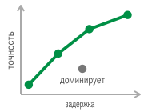
Доминируемая модель проигрывает или равна модели на границе и по точности, и по задержке.
О квантизации, прореживании и дистилляции обычно сообщают по тому, насколько хорошо они сохраняют агрегированную точность (Jacob и др. 2018 г.; Han и др. 2015 г.; Gale и др. 2019 г.; Hinton и др. 2015 г.). Поскольку эти агрегированные результаты не устанавливают сохранение калибровки или поведение на хвостовых случаях, валидация должна оценивать эти свойства напрямую (Guo и др. 2017 г.).
Оценка калибровки при сжатии требует стандартизированного протокола. Ожидаемая ошибка калибровки (ECE) сопоставляет предсказанную уверенность с эмпирической точностью, но у неё нет универсальных порогов. Метрика зависит от схемы разбиения на корзины, количества корзин, размера выборки и распределения предсказаний. Поэтому бенчмарк-протокол должен зафиксировать оценщик и оценивать деградацию относительно несжатой базовой линии при фиксированном допуске задачи.
Оптимальность по Парето выявляет недоминируемые варианты, но не устанавливает, что какой-либо из них преодолевает абсолютный порог качества развёртывания. Приемлемая деградация зависит от контекста развёртывания: падение точности на 2 процента может быть приемлемым для рекомендательной системы, где пользователи терпимы к неидеальным рекомендациям, но недопустимым для медицинской диагностики, где каждый ложноотрицательный результат влечёт тяжёлые последствия. Производственные критерии приёмки должны задавать абсолютные пороги точности до сжатия, оценивая одновременно агрегированную точность, стабильность калибровки и критичные для развёртывания срезы. Пороги, зафиксированные заранее, нельзя двигать под результат, который команда уже хочет выпустить, а абсолютный порог улавливает малую относительную потерю, опускающую маржинальную базовую линию ниже потребностей развёртывания. Маячный пример MobileNetV2 делает этот многомерный протокол валидации конкретным. Разобранный пример предполагает базовую линию FP32, чей запас над порогом развёртывания превышает допустимую деградацию, так что каждый порог может быть сформулирован как ограничение относительно этой базовой линии.
Опорный пример 12.3: Сжатие MobileNetV2 INT8
Вернёмся к маяку 12.1 и рассмотрим иллюстративный протокол валидации для INT8-квантизации, опирающийся на архитектуру MobileNetV2 (Sandler и др. 2018 г.) и практику пост-тренировочной квантизации (Jacob и др. 2018 г.). Значения в Таблица 18 являются принятыми условно. В этом примере приёмка допускает потерю менее 1 percentage point по точности top-1 или top-5 и требует отсутствия регрессии по ECE и точности на критичных краевых случаях в рамках того же протокола оценки:
Базовая линия до сжатия: MobileNetV2 достигает точности top-1 71.8 percent на ImageNet при 3.5M параметров (14 MB FP32).
В Таблица 18 агрегированная точность после INT8-квантизации почти не меняется — модель занимает 3.5 MB, — но ошибка калибровки и точность на краевых случаях выявляют существенную деградацию. ECE INT8-модели возрастает с 0.031 до 0.089, что не проходит критерий отсутствия регрессии этого примера при фиксированном протоколе ECE.
| Метрика | FP32 | INT8 | Приемлемо? |
|---|---|---|---|
| Точность top-1 | 71.8% | 70.9% | ✓ (падение 0.9 pp; ниже порога 1 pp) |
| Точность top-5 | 91% | 90.4% | ✓ (ниже заданного порога потери точности) |
| Ошибка калибровки ECE | 0.031 | 0.089 | Нет (деградация) |
| Точность на краевых случаях | 68.2% | 61.4% | Нет (падение 6.8 pp) |
Определение краевого случая: изображения с
Что это показывает: при этих допущениях точность на средних случаях выглядит приемлемой (падение 0.9 percentage-point), но калибровка деградирует, а точность на краевых случаях падает на 6.8 percentage points. Если развёртывание использует пороги уверенности (например, «действовать только при уверенности > 85 percent») или встречает много краевых случаев (необычное освещение, частичные перекрытия), INT8-версия MobileNetV2 может потерпеть неудачу, несмотря на прохождение агрегированных бенчмарков.
Исправление: температурное масштабирование — кандидат на апостериорную коррекцию калибровки (Guo и др. 2017 г.). Оно подбирает положительный скаляр
Компромиссы прореживания также нелинейны. Итеративное прореживание находит подсети, совпадающие по точности с плотной сетью вплоть до критической разреженности, и резко деградирует за её пределами (Frankle и Carbin 2019 г.); это доказательная база гипотезы лотерейного билета из Гипотеза лотерейного билета (углублённо, опционально). Поэтому валидация сжатия должна устанавливать эмпирические кривые компромиссов для каждой конкретной модели и архитектуры, определяя, где модель находится на фронте Парето и даёт ли дальнейшее прореживание аппаратную эффективность или лишь деградацию точности.
Бенчмарки больших языковых моделей
Фреймворк оценки сжатия безупречно применим, когда задача имеет стабильную метку, как в классификации изображений, где у каждого тестового изображения один правильный класс. Большие языковые модели ломают эту схему. Команда может выбрать модель, потому что она хорошо scored на публичном бенчмарке, а затем обнаружить в развёртывании, что модель распознаёт факты в формате множественного выбора, но не способна генерировать обоснованный ответ, отвечает слишком медленно для интерактивного продукта или порождает уверенный небезопасный текст, который бенчмарк никогда не проверял. Поэтому LLM-бенчмаркинг начинается с называния того сбоя развёртывания, который оценка призвана исключить.
Таксономия метрик в Таблица 19 организует оценку вокруг этих режимов отказа, а не позиций в лидербордах. Её строки используют Massive Multitask Language Understanding (MMLU),32 HELM (Holistic Evaluation of Language Models),33 и перплексию34 как примеры оценок, отвечающих на различные вопросы развёртывания. Строка отзывчивости измеряется как время до первого токена и время на выходной токен, определённые вместе с прочими метриками инференса в Глава 12.6.2.2:
| Исключаемый сбой развёртывания | Семейство метрик или бенчмарков | Что показывает оценка | Что оценка не может доказать |
|---|---|---|---|
| Модель плохо распознаёт факты | MMLU (Massive Multitask Language Understanding) | Широкие фактические и дисциплинарные знания по пятидесяти семи предметам, с оценками, интерпретируемыми относительно случайного угадывания в множественном выборе | Способна ли модель генерировать обоснованные открытые ответы, а не выбирать среди вариантов множественного выбора |
| Модель способна, но небезопасна | HELM (Holistic Evaluation of Language Models) | Точность наряду с калибровкой, робастностью, справедливостью, предвзятостью, токсичностью и эффективностью | Охватывает ли одна агрегированная оценка риск развёртывания; модель может быть сильна по точности и слаба по калибровке, безопасности, стоимости или стабильности промптов |
| Модель хорошо предсказывает свой корпус | Perplexity | Отложенное предсказание следующего токена на том же корпусе; перплексия 10 означает, что модель в среднем «путается в 10 вариантах» | Полезны, безопасны или обоснованны ли генерируемые ответы вне этого корпуса |
| Модель кажется медленной в использовании | Задержка первого токена, межтокенная задержка и пропускная способность по токенам | Задержка обработки промпта до начала генерации и скорость декодирования после начала генерации | Скрывает ли одно число пропускной способности плохую интерактивную отзывчивость, особенно когда батчи повышают пропускную способность, но ухудшают задержку первого токена |
Последний режим отказа состоит в том, что оценка бенчмарка может отражать запоминание обучающих данных, а не общую способность. Загрязнение бенчмарка особенно трудно проверить в LLM, потому что предобучающие корпуса веб-масштаба могут содержать вопросы бенчмарков, завышая оценки за счёт запоминания, а не навыка (Xu и др. 2024 г.). Обнаружение утечек превращает этот риск из предмета подозрений в то, что создатели бенчмарков могут проверять. Временные отложенные выборки используют контент, опубликованный после даты отсечки обучения; динамические бенчмарки непрерывно генерируют свежие экземпляры; тесты на загрязнение проверяют, не воспроизводит ли модель дословную формулировку вопросов бенчмарка. Эти техники удерживают бенчмарк согласованным с вопросом развёртывания, вместо того чтобы вознаграждать предобучающий контакт с оценочным набором.
12.9.2 Бенчмаркинг данных
Сжатая модель, прошедшая все проверки точности, калибровки и загрязнения на отложенном тестовом наборе, всё же может развалиться в продакшене, если и обучающая, и тестовая выборка не содержали условий, с которыми сталкивается развёрнутый сенсор: сумеречные или инфракрасные кадры фотоловушек, новые клинические площадки или недопредставленные демографические срезы. Ни бенчмарки системы, ни бенчмарки модели не видят этот изъян, потому что оба фиксируют датасет. Бенчмарки данных проверяют, покрывает ли и представляет ли сам датасет, а также стратегии эффективности из Отбор данных (активное обучение, проектирование учебных программ, аугментация данных и синтетическая генерация данных), операционный домен.
В рамках таксономии D·A·M оптимизация Алгоритма и Машины не может компенсировать структурные дефекты Данных. Кластер ускорителей, работающий на пиковой арифметической интенсивности, при дефектных обучающих распределениях лишь быстрее вычисляет неверные представления. Поэтому бенчмаркинг данных начинается с операционного протокола, а не с агрегированной оценки. Протокол определяет развёртываемый срез (deployment slice), который модель должна обслуживать. Он резервирует устойчивую к утечкам отложенную выборку (holdout), не разделяющую ни одной записи или исходной группы с обучающим множеством. Каждый дубликат или почти-дубликат исходной записи и каждая группа, способная переносить информацию через разбиение — например, записи одного диктора или одного домохозяйства, — находится только по одну сторону; это правило защиты от утечки данных из Данные как код, применённое к оценочному множеству.
Протокол задаёт минимальное покрытие редких классов и подгрупп, формулируемое как минимальное число тестовых примеров, которое должен иметь каждый срез, чтобы оценка его точности была достаточно точной для принятия решений, — конечновыборочный предел, который квантифицирует Глава 12.8.1. Он проверяет качество разметки. Он также устанавливает пороги дрейфа, каждый из которых называет тест на сдвиг и расстояние от собственного распределения бенчмарка, по достижении которого бенчмарк перестаёт представлять продакшен и должен быть обновлён. Только после того как эти проверки явно описаны, агрегированные метрики становятся интерпретируемыми.
Метрики покрытия
Первый вопрос, на который должен ответить бенчмаркинг данных, — покрывает ли обучающее распределение операционный домен, с которым модель столкнётся в продакшене. Обобщение на слабо представленные режимы входных данных неопределённо и требует прямой оценки; механизмы, посредством которых обучающее покрытие оказывается недостаточным, зачастую неочевидны.
Баланс классов — наиболее очевидный режим отказа. В датасете фотоловушек 99 percent кадров пусты или показывают распространённые виды, а 1 percent показывают редкий вид, ради подсчёта которого исследование и проводится. Как и с детектором аномалий из Глава 12.2.7, модель, всегда предсказывающая мажоритарный класс, достигает точности 99 percent, не выполняя своего операционного назначения. Смягчение сильного дисбаланса классов требует переназначения весов в функции потерь, направленного oversampling или калибровки порога решения. Коварнее дисбаланс подгрупп внутри классов: датасет может в совокупности иметь сбалансированные положительные и отрицательные классы, однако черпать отрицательные примеры непропорционально из конкретной демографической когорты или географического региона. Агрегированные метрики точности маскируют такие систематические локализованные отказы. Когда системы взаимодействуют с человеческими популяциями, аудит репрезентативности по демографическим измерениям (возраст, география, диалект и т. п.) необходим, хотя отсутствие или шумность демографических метаданных часто затрудняет обнаружение проблемы.
Покрытие признаков выходит за пределы дискретных меток классов в непрерывное пространство операционных вариаций. Пока баланс классов проверяется непосредственно по статистике меток, покрытие признаков требует отображения физических параметров среды развёртывания. Конвейер компьютерного зрения, обученный исключительно на дневных снимках, отказывает при низком освещении из-за шума сенсора; конвейер обработки речи, обученный на чистых студийных сигналах, деградирует при акустическом реверберационном эхе и фоновом шуме. Эти вариации среды (различное сенсорное оборудование, условия освещения, редкие операционные граничные случаи) лежат вне дискретных распределений меток. Поэтому бенчмаркинг покрытия признаков требует до оценки производительности модели задать вместе с экспертами предметной области конкретные границы входного пространства.
Метрики качества
Даже когда обучающий датасет покрывает операционный домен, ошибки разметки искажают обучающий сигнал. Ошибки меток, в среднем составляющие около 3 процентов на десяти канонических тестовых наборах и доходящие до 6 процентов на валидационном наборе ImageNet (Northcutt и др. 2021 г.), не являются безобидным шумом. Обучение с учителем воспринимает неверные метки как ground truth. Когда оценочное множество содержит испорченные метки, модель, выучившая истинное лежащее в основе распределение, получает штраф, тогда как модель, запомнившая артефакты разметки, получает завышенную оценку.
Для небольших корпусов ручные аудиты по стратифицированным случайным выборкам дают базовые оценки доли ошибок. В масштабе ошибки меток алгоритмически выявляет confident learning. Когда модель, оценивающая данные, на которых она не обучалась, устойчиво приписывает высокую уверенность классу, конфликтующему с присвоенной меткой, пример становится кандидатом на ошибку разметки. Отметка таких кандидатов позволяет точечно перемаркировать или отфильтровать их, минуя запретительно высокую стоимость исчерпывающей ручной проверки.
Согласие между аннотаторами измеряет устойчивость разметки до обучения модели. Это те же статистики, которые инженерия данных уже использует для мониторинга качества меток в продакшене; бенчмарк данных применяет их однократно, чтобы сертифицировать само оценочное множество. Каппа Коэна для двух оценщиков и каппа Флейса для нескольких количественно оценивают согласие сверх случайного ожидания (Cohen 1960 г.; Fleiss 1971 г.). Когда метрики согласия падают ниже установленных порогов на задачах с объективным ground truth, отказ указывает на неоднозначную таксономию разметки, усталость оценщиков или непоследовательные инструкции. Хотя качественные диапазоны каппы Лэндиса и Коха служат историческим ориентиром (Landis и Koch 1977 г.), продакшен-конвейеры требуют порогов согласия, калиброванных непосредственно под специфическую для приложения толерантность к риску.
↩︎ Каппа Коэна, её поправка на случайное согласие и дрейф качества меток рассматриваются в Дрейф качества меток.
Структурная форма шума меток определяет его влияние на последующие этапы. Случайный шум меток размывает градиентные сигналы между классами, увеличивая выборочную сложность, но редко обучая связным ложным представлениям. Напротив, систематические ошибки — например, устойчивая неправильная разметка слабо представленного подкласса или связывание метки с артефактом среды — вносят структурированное смещение в веса модели. Если изображения волков, сфотографированных на фоне снега, устойчиво размечены как собаки, модель выучивает ассоциацию снега с целевым классом. При наличии систематической ошибки меток сбор дополнительных обучающих данных по тому же протоколу разметки смещение не исправляет — он лишь укрепляет ложную ассоциацию с большей параметрической уверенностью.
Согласование распределений
Бенчмаркинг данных в конечном счёте должен оценивать, обобщает ли модель от условий обучения к средам развёртывания. Стандартные протоколы оценки предполагают, что обучающая, валидационная и тестовая выборки независимы и одинаково распределены (i.i.d.). В продакшен-системах это предположение регулярно нарушается: временной дрейф меняет поведение потребителей, деградация сенсоров сдвигает характеристики оборудования, географическая экспансия вводит не смоделированные подгруппы населения. Когда предположение i.i.d. рушится, точность на отложенной валидации может стать плохим предиктором операционной производительности. Направление и величина изменения зависят от сдвинувшейся популяции.
Независимо от того, сдвигается ли популяция, конечная оценка удостоверяет поведение только на той популяции, которую она сэмплировала, и только в пределах неопределённости, допускаемой её размером. Этот предел — разрыв верификации, формально сформулированный в начале Части IV как принцип «Разрыв верификации». У разрыва две составляющие, и каждая ограничивает свой вывод. Первая — покрытие. Тестовое множество — это выборка из пространства возможных входов, настолько огромного, что любое тестовое множество покрывает практически нулевую его долю. В изображении
Вторая составляющая разрыва — разрешение. Внутри сэмплированной популяции измеренная точность — это оценка, и её интервал сужается лишь с ростом тестового множества — биномиальный предел, разобранный в Глава 12.8.1. Оценка, следовательно, является статистическим свидетельством и никогда — доказательством корректности. Критерий релиза, уважающий этот разрыв, называет популяцию, которую представляет тест, проверяемый допуск на ошибку и доверительную вероятность полученной границы, и эта граница должна пересчитываться при каждом изменении развёрнутой популяции.
Этот разрыв согласования обучения и продакшена систематически квантифицируется бенчмарком WILDS35 (Koh и др. 2021 г.), который оценивает модели при сдвигах распределения, охватывающих больничные системы, расположения фотоловушек и спутниковые проходы. На Camelyon17-WILDS сообщённая базовая линия, обученная минимизацией эмпирического риска (ERM) — стандартной процедурой, минимизирующей средние потери на обучающем множестве, — достигла 93,2 процента средней точности in-distribution и 70,3 процента средней точности out-of-distribution по не встречавшимся клиническим площадкам. Это падение производительности происходит при неизменных архитектуре, гиперпараметрах и вычислениях для обучения, демонстрируя зависящий от распределения разрыв производительности для данной фиксированной модели и процедуры обучения. Сравнение не изолирует, какие изменения ёмкости, представления или данных могли бы его закрыть.
Сплит iWildCam того же бенчмарка — версия этой проблемы для фотоловушек. Модели, обученные на изображениях с одного набора расположений фотоловушек, оцениваются на ловушках, которых они никогда не видели, где фон, освещение и состав видов меняются (Koh и др. 2021 г.). MobileNetV2, соответствующий всем целевым показателям задержки и энергопотребления на плате, может провалить этот тест, и ни один системный бенчмарк этого бы не выявил.
Чтобы обнаруживать изменения, требующие расследования, обслуживающие конвейеры могут применять статистические тесты на сдвиг и таксономию ковариационного, лейблового и концептуального сдвига из Обнаружение дрейфа данных и реакция на него к входным потокам инференса. Применение в бенчмаркинге — решение вопроса о том, когда оценочное множество перестало представлять продакшен. Тест Колмогорова—Смирнова (Berger и Zhou 2014 г.) из того раздела сравнивает по одному входному признаку за раз, а максимальное среднее расхождение (maximum mean discrepancy) (Gretton и др. 2012 г.) — расстояние между двумя множествами эмбеддингов — сравнивает сразу много признаков; оба обнаруживают изменения маргинального входного распределения
↪ Работающие детекторы ковариационного сдвига питают мониторинг статистических расстояний и автоматические оповещения о дрейфе, разработанные в Мониторинг распределений признаков.
Проваленная проверка согласования поднимает вопрос о том, что менять дальше, а data-centric AI, представленная в От логики, заданной кодом, к поведению, заданному данными, — альтернатива изменению модели. Схемы на Рисунок 14 отмечают различие расположением замка и пути обратной связи. На панели, ориентированной на модель, датасет зафиксирован, а петля обратной связи уточняет параметры модели. На панели, ориентированной на данные, зафиксирована архитектура модели, а петля возвращается к качеству, разнообразию и разметке обучающих данных. Двунаправленная красная стрелка отмечает обе стратегии как взаимодополняющие.
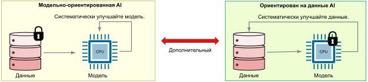
Подход Data-centric AI отражает важный сдвиг в понимании, бросающий вызов допущению «больше данных — всегда лучше»: состав набора данных значим не меньше его масштаба. Появились такие инициативы, как DataPerf (Mazumder и др. 2023 г.) и DataComp36, предназначенные для систематической оценки того, как построение набора данных влияет на качество модели. В условиях DataComp с контролируемым вычислительным бюджетом базовая линия, сохранявшая топ-30 процентов пула кандидатов с помощью CLIP-фильтрации — оценки того, насколько каждое изображение соответствует своей подписи (Отбор данных), — превзошла базовую линию с неотфильтрованным пулом по совокупной оценке на нижележащих задачах (Gadre и др. 2023 г.). Этот результат подтверждает ценность курирования для данного протокола, но не универсальную оптимальную долю.
Насыщение наборов данных и динамические бенчмарки
Даже когда протоколы покрытия, качества и согласования распределений соблюдены, статические бенчмарки сталкиваются с проблемой насыщения набора данных. По мере приближения моделей к эмпирическим верхним границам на фиксированных наборах тестов разрывы в таблицах лидеров сжимаются, из-за чего становится трудно отличить подлинный прогресс возможностей от сверхоптимизации под артефакты конкретного бенчмарка. Траектории возможностей на Рисунок 15 показывают это исчерпание за два десятилетия: оценки ИИ растут от нормированной стартовой точки −100 — первого заявленного результата каждого бенчмарка — до пересечения нулевой линии, отмечающей уровень человека (Maslej и др. 2024 г.). Если распознаванию рукописного текста и речи потребовалось более десятилетия, чтобы достичь человеческого уровня (зелёная заштрихованная область), то понимание прочитанного и понимание языка пересекли этот порог менее чем за два года, между 2016 и 2020, быстро исчерпав различительный запас статических наборов тестов.
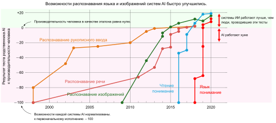
Как только статический бенчмарк насыщается, высокая точность в таблице лидеров может маскировать хрупкие эвристики. Распознавание цифр MNIST (LeCun и др. 1998 г.) рано показало, что модели могут эксплуатировать специфичные для набора данных артефакты съёмки, а не инвариантные признаки, — это опасение в итоге побудило исследователей заново проверить, не достиг ли ImageNet конца своего срока полезной диагностической службы (Beyer и др. 2020 г.). Когда оценочное распределение остаётся замороженным, итеративный отбор моделей рискует переобучиться под идиосинкразические тестовые артефакты вместо улучшения обобщаемой способности решать задачу.
Среды динамического бенчмаркинга, такие как Dynabench37 (Kiela и др. 2021 г.), борются с насыщением путём непрерывного обновления оценочных данных. В этой парадигме люди-разметчики генерируют состязательные входы, нацеленные на режимы отказа текущих лучших моделей, гарантируя, что бенчмарк продолжает проверять пределы представлений. Однако динамические бенчмарки вносят прямой системный компромисс: поскольку оценочное распределение меняется между итерациями, лонгитюдные сравнения между поколениями моделей становятся трудно калибруемыми. Поэтому статические и динамические бенчмарки играют взаимодополняющие роли: статические наборы обеспечивают лонгитюдную воспроизводимость на стандартизованных задачах, а динамические бенчмарки выявляют вновь возникающие границы ошибок.
12.9.3 Целостная оценка системы, модели и данных
На плате фотоловушки инженерная команда может пройти каждый бенчмарк по отдельности и всё же выпустить сломанную систему. Пусть INT8-модель зрения проходит целевой показатель частоты кадров на ускорителе, держит top-1 точность на дневных валидационных изображениях и обучается на аккуратно размеченном наборе данных, но ночью терпит неудачу, потому что инфракрасные кадры дают диапазоны активаций вне окна калибровки диапазона квантизации, подогнанного по дневным изображениям ImageNet, — происходит отсечение активаций признаков на распределении данных, которого обучающий конвейер никогда не видел. Целевой бенчмарк модели по уровням экспозиции выявил бы чувствительность к отсечению, а аудит покрытия данных обнаружил бы недостающие инфракрасные кадры, но ни одна из этих неудач не видна внутри одного лишь системного бенчмарка. Поэтому успешное прохождение системного, модельного и информационного бенчмарков по отдельности недостаточно: производительность в реальном мире возникает из взаимодействия всех трёх измерений, и оптимизация одной оси может вскрыть скрытую уязвимость в другой.
Межизмерная связанность означает, что успешный бенчмарк в одной области может быть обесценен неизмеренной неудачей в другой. Когда системные бенчмарки проходят при модельной неудаче, аппаратура выдаёт обещанную пропускную способность, тогда как агрессивное сжатие деградирует точность ниже порогов развёртывания. Когда они проходят при неудаче данных, быстрый инференс выполняется на бенчмарковых входах, тогда как смещение обучающих данных вызывает серьёзные расхождения точности между демографическими подгруппами. Наоборот, успех модели при системной неудаче даёт точные предсказания, у которых вариация хвостовой задержки под конкурентной нагрузкой нарушает SLO по задержке. Аналогично, успех модели при неудаче данных даёт высокую точность на отложенных тестовых наборах, которая незаметно деградирует при сдвиге распределения в продакшене.
Эти режимы отказа отображаются на попарные пересечения таксономии D·A·M (Рисунок 4), хотя оценочные линзы бенчмарков не соответствуют один к одному изолированным физическим вершинам. Информационные бенчмарки оценивают качество и покрытие входного распределения (
↩︎ Таксономия D·A·M и её попарные пересечения установлены в Определение МЛ-систем.
Таксономия D·A·M предоставляет диагностический каркас для систематического выявления того, какая ось ограничивает производительность. Таблица 20 формализует этот подход, скрещивая каждую ось D·A·M с ограничениями по вычислениям, памяти и вводу-выводу.
| Компонент | Ограничение по вычислениям | Ограничение по памяти | Ограничение по вводу-выводу |
|---|---|---|---|
| Данные | Предобработка на хосте насыщает вычисления | Ёмкость: рабочий набор превышает RAM | Хранилище не успевает подпитывать ускоритель |
| Алгоритм | Требуемые операции превышают вычислительный бюджет по времени | Ёмкость: активации ограничивают допустимый размер батча | Выставленная наружу синхронизация градиентов ограничивает время шага |
| Машина | Полезная скорость операций приближается к «крыше» вычислений | Пропускная способность: трафик приближается к пределу интерфейса | Выставленные наружу пересылки приближаются к пределу интерконнекта |
Применение этой матрицы упорядочивает гипотезы, когда системная телеметрия расходится с теоретическими пиками аппаратуры. Если ускоритель достигает лишь 30 процентов загрузки GPU при обучении, строка «Алгоритм» предлагает изменить модель, тогда как столбец ограничения по вычислениям в строке «Данные» — рабочих процессов хоста, не успевающих подготавливать батчи, — тот входной застой, который прослеживает Конвейер данных. Матрица направляет исследование; трассировки и контролируемые вмешательства устанавливают, какая физическая подсистема является узким местом.
↪ Производственная матрица поиска неисправностей, сопоставляющая типичные симптомы отказов с кандидатом-осью D·A·M и измерением, подтверждающим диагноз, собрана для справки в Подтверждение гипотезы.
Валидация в контролируемых лабораторных условиях отличается от валидации в продакшене. Лабораторный протокол может фиксировать данные, упрощать поступление запросов или изолировать исполнение, чтобы ответить на контролируемый вопрос. В продакшене все три допущения могут нарушаться одновременно: данные дрейфуют, трафик непредсказуемо скачет, а конкурентные рабочие нагрузки конкурируют за общее аппаратное обеспечение. Приведённые ниже повторяющиеся заблуждения — это способы, которыми команды забывают об этой разнице.
12.10 Заблуждения и ловушки
Бенчмаркинг создаёт ложную уверенность, когда стандартизированные измерения заслоняют реалии развёртывания. Команды исходят из того, что контролируемые оценки предсказывают поведение в продакшене, однако реальные системы сталкиваются с изменчивостью, ограничениями ресурсов и многомерными компромиссами, которые бенчмарки не способны охватить. В итоге инженерные усилия тратятся на системы, оптимизированные под оценку, а не под развёртывание.
Заблуждение: Производительность на бенчмарке напрямую переносится на производительность реального приложения.
Кажущаяся ясность изолированных чисел бенчмарка приводит команды к убеждению, что измерение прямого прохода модели предсказывает время отклика, которое видит пользователь. Это не так. В исследовательских бенчмарках сырой инференс модели может выполняться за 5–10 ms. Однако внутри production-микросервиса, обслуживающего модель, накладные расходы на десериализацию запросов, токенизацию, извлечение признаков и передачу по сети расширяют полное время отклика до 50–100 ms. В иллюстративном тесте только модели команда сообщает о средней задержке при синтетических равномерно распределённых входных данных (15 ms). Под трафиком рассматриваемого сценария всплески прибытия запросов и очередь в очередях повышают хвостовую задержку p99 до 150–200 ms (разрыв в 10–13.3× относительно среднего значения для теста только модели). Это отношение сравнивает среднее по тесту только модели с хвостом сквозной задержки под реальным трафиком, поэтому оно показывает, насколько число для теста только модели занижает то, что испытывают пользователи, а не насколько замедлилась сама модель. В том же иллюстративном сравнении модель с точностью 92 percent на бенчмарке падает до 78–82 percent при столкновении с реальными сдвигами распределения, такими как шумный текст и необработанные данные с датчиков. Оценка изолированного ядра нейронной сети не может заменить бенчмаркинг полного сквозного конвейера обслуживания.
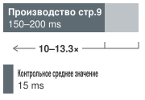
В этом сценарии среднее значение для теста только модели занижает продакшн-хвост на порядок.
Ловушка: Оптимизация исключительно ради метрик бенчмарка без учёта более широких требований системы.
Таблицы лидеров бенчмарков поощряют агрессивную оптимизацию, но оптимизации, поднимающие позицию в рейтинге, часто ухудшают именно те характеристики, которых требует продакшен. Это пример закона Гудхарта (Глава 12.1), организационную форму которого рассматривал раздел Глава 12.8.4. В одном иллюстративном сценарии команда снижает задержку инференса с 12 ms до 8 ms посредством агрессивной квантизации, улучшая позицию в рейтинге MLPerf на 15 мест, но при этом деградирует калибровка так, что оценки уверенности в предсказаниях становятся ненадёжными для принятия последующих решений. Другая команда повышает точность на ImageNet на 2.1 процентных пунктов благодаря обширной настройке гиперпараметров, однако оптимизированная модель потребляет на 40 percent больше энергии и показывает на 25 percent худшие результаты на изображениях вне распределения, поступающих с продакшен-камер.
Заблуждение: Оценка по одной метрике даёт достаточное представление о производительности системы.
Одночисловое утверждение выглядит обманчиво просто («точность 94 percent» или «скорость 1,200 QPS»), однако успех в продакшене требует балансировки нескольких конкурирующих целей, которые любую одиночную метрику заслоняет. Современные системы инференса требуют оценки по измерениям точности, задержки, пропускной способности, энергопотребления и устойчивости (Глава 12.6.2). В иллюстративном компромиссе рекомендательная модель с точностью 94 percent и задержкой p99 180 ms не выполняет целевые требования к уровню обслуживания, требующие p99 < 100 ms, несмотря на отличную точность. Наоборот, система, оптимизированная под пропускную способность 1,200 QPS, достигает этой скорости, потребляя 4.2 W против 1.8 W у чуть более медленной системы с 1,000 QPS (разница в потребляемой мощности — 2.3×). Для устройств на батареях на периферии потеря 17 percent пропускной способности даёт в 2.3× более длительное время работы. Разные заинтересованные стороны приоритизируют разные метрики: ML-инженеры сосредоточены на точности, инфраструктурные команды — на пропускной способности и стоимости, продакт-менеджеры — на перцентилях задержки.
Ловушка: Использование устаревших бенчмарков, которые уже не отражают вызовы и требования развёртывания.
У бенчмарков есть инерция. Команды продолжают отчитываться по устоявшимся бенчмаркам после того, как их результаты перестают давать полезное различение. Насыщение наступает, когда множество подходов достигают почти идентичной производительности, устраняя полезное сравнение. Ошибка классификации top-5 на ImageNet снизилась с 28.2 percent в 2010 году (Russakovsky и др. 2015 г.) до 3.57 percent к 2015 году (He и др. 2016 г.), резко сжав запас, измеряемый этой метрикой. По мере сужения разрывов статистические доверительные интервалы, обсуждённые в Глава 12.8.1, и практическая применимость результата к развёртыванию значат больше, чем позиция в таблице лидеров. Изменение контекстов развёртывания усугубляют проблему. Бенчмарки, спроектированные для серверного оборудования, становятся вводящими в заблуждение для периферийных устройств с в 10× меньшим объёмом памяти и в 100× более низкими лимитами энергопотребления. Эффективный бенчмаркинг требует вывода насыщенных бенчмарков из употребления и разработки оценочных фреймворков, соответствующих реалиям целевого развёртывания.
Заблуждение: Короткий прогон бенчмарка отражает устойчивую производительность.
Короткий изолированный лабораторный прогон может упускать тепловые и архитектурные ограничения длительного выполнения в продакшене. Во-первых, лабораторные прогоны часто страдают от ошибок инициализации: пропуск прогревочных запусков смешивает однократную JIT-компиляцию, инициализацию среды исполнения GPU и промахи страниц аллокатора памяти со стационарным выполнением. Во-вторых, короткие лабораторные всплески (например, 30 секунд) фиксируют переходные повышенные тактовые частоты. Под устойчивой продакшен-нагрузкой тепло накапливается быстрее, чем инфраструктура охлаждения способна его рассеивать; аппаратный governor запускает динамическое масштабирование напряжения и частоты (DVFS), снижая частоту кремния для защиты температур переходов. В результате система, достигающая пропускной способности 800 QPS в коротких всплесковых бенчмарках, поддерживает лишь 400–500 QPS под непрерывной нагрузкой при утилизации 90 percent (деградация на 37.5–50 percent).
12.11 Итоги
Бенчмаркинг завершает конвейер оптимизации Части III, проверяя, приносят ли на практике выигрыш в эффективности от выбора данных, сжатия моделей и аппаратного ускорения. Три бенчмарк-ракурса исследуют исполнение системы, поведение модели и репрезентативность данных по отдельности, а затем проверяют, выдерживают ли их предположения, когда полная система работает в условиях развёртывания. Каждая строка Таблица 2 начиналась как утверждение и теперь имеет тест, способный его разрешить. Утверждение о INT8 для ResNet-50 стало тестом с явно заданными условиями — согласованной парой прогонов MLPerf Inference Offline, результат которых команда теперь может получить, а не предполагать. Его «крыша» (roofline ceiling) встретилась с пропускной способностью MLPerf, лежащей на 8.0× ниже неё. Ускорение MobileNetV2 на ускорителе сократилось, как только было замерено весь путь кадра на периферийной плате. Keyword spotting показал, что время жизни устройства в режиме с рабочим циклом определяет энергопотребление в простое, а не инференс.
Разные «линзы» вскрывают разные режимы отказа: системные бенчмарки выявляют недоставленную пропускную способность, хвостовую задержку и тепловое поведение; бенчмарки моделей проверяют точность, калибровку, устойчивость и другие свойства, которые может изменить оптимизация; а бенчмарки данных исследуют покрытие, качество разметки, утечки и соответствие развёртыванию. Стандартизованные наборы, такие как MLPerf Training и Inference, дают сопоставимые системные свидетельства, тогда как протоколы для моделей и данных поставляют свидетельства качества и репрезентативности, которые аппаратный результат установить не может.
Заявления об оптимизации требуют измеренного исполнения, а не аналитических прокси. Измерение по реальному времени (wall-clock) фиксирует насыщение пропускной способности DRAM, сериализацию запуска ядер и накладные расходы на передачу между хостом и устройством, которые не учитывает подсчёт FLOP. Профилирование по перцентилям под конкурентной нагрузкой вскрывает задержки в очередях и троттлинг из-за нагрева, которые скрывают средние арифметические. Оценка рабочих нагрузок на репрезентативных для продакшена данных выявляет динамические вариации форм и «перемешивание» памяти, которые однородные синтетические входы никогда не порождают.
Кандидат на релиз может пройти аппаратные, модельные и датасетные проверки и всё же не иметь свидетельств для той рабочей нагрузки, которую он будет обслуживать. Сервису с всплесками запросов нужна проверка под нагрузкой, а камере-ловушке, развёрнутой при меняющейся освещённости, нужны размеченные примеры из этих условий. Лабораторные бенчмарки устанавливают поведение при заданных условиях; решение о релизе должно определить, какие из этих условий остаются справедливыми в целевом развёртывании, и проверить те, что меняются. Телеметрия времени и памяти может выявить перегрузку, тогда как «молчаливая» деградация предсказаний требует меток или валидированных прокси качества, а если метки приходят поздно, протокол релиза должен назвать эту задержку. Исследовательский бенчмарк остаётся полезным для сравнения алгоритмов, но критерии релиза для обслуживающей системы должны также включать нагрузочные тесты, измерения хвостовой задержки, проверки качества данных, учения по отказам и критерии отката. Таблица 21 сопоставляет каждое упрощающее допущение бенчмарка с условием продакшена, которое его нарушает, и с шагом валидации, закрывающим этот разрыв.
| Допущение бенчмарка | Реальность продакшена | Подход к валидации |
|---|---|---|
| Равномерный приход запросов | Всплесковые шаблоны трафика | Нагрузочный тест с воспроизведением производственного трейса |
| Чистые, предобработанные входы | Входы переменного качества | Оценка на выборке производственных данных |
| Прогретое состояние системы | Холодные старты, промахи кэша | Измерение производительности холодного старта |
| Изолированное исполнение | Конкуренция за ресурсы | Бенчмарк под реалистичной системной нагрузкой |
| Фиксированная версия модели | A/B-тестирование, постепенное развёртывание | Установление базовой линии для сравнения |
После того как модель запущена в работу, бенчмаркинг превращается в непрерывное сравнение с этими базовыми линиями: остаётся ли распределение входов близким к распределению бенчмарка, удерживаются ли задержка и пропускная способность внутри измеренного диапазона, и выходит ли качество модели за ожидаемый интервал. Обслуживающие системы превращают этот измерительный цикл в поэтапные развёртывания, теневую оценку (запуск новой модели рядом с продакшеном без обслуживания её выходов) и автоматический откат. Бенчмаркинг определяет диапазон производительности и пороги отказов; производственный мониторинг сверяет живую телеметрию с ними.
↪ Теневые, канареечные и сине-зелёные развёртывания, а также уровни отката, действующие на этих порогах, рассматриваются в Развёртывание модели.
Измерительные формулы главы умещаются на одной странице (Таблица 22). Вместе они позволяют инженеру ещё до запуска бенчмарка сформулировать, что он будет измерять и какой результат опроверг бы утверждение.
| Величина | Формула | Где выведена |
|---|---|---|
| Время до точности | Уравнение 1 | |
| Пропускная способность обучения | Уравнение 2 | |
| Эффективность масштабирования | Уравнение 3 | |
| Утилизация оборудования | Глава 12.4.3 | |
| Потолок Амдала | Глава 12.3.4 | |
| Энергия на инференс | Глава 12.7 | |
| Средняя мощность по рабочему циклу | Глава 12.7.2 | |
| Энергия за окно | Глава 12.7.4 | |
| Статистика парного теста | Глава 12.8.1 | |
| Ожидаемая ошибка калибровки | Взвешенное по корзинам среднее расхождения между уверенностью и точностью | Уравнение 4 |
Основные выводы: Измеряем то, что важно
- Бенчмарки валидируют совместное проектирование: системные, модельные и датасетные бенчмарки вскрывают недоставку аппаратной производительности, потерю качества при сжатии и рассогласование распределений. Система, прошедшая проверку лишь по одной оси, всё ещё может отказать, когда ограничения данных, алгоритма и машины сходятся под производственной нагрузкой.
- Утверждение становится тестом только когда зафиксированы его условия: бенчмарк-«столярство» переформулирует утверждение вроде «ResNet-50 быстрее при INT8» в задачу, датасет, модель, метрику, испытательный стенд, спецификацию и правила запуска. Число, сообщённое без этих условий, нельзя воспроизвести, сравнить или опровергнуть.
- Предсказание и измерение вместе локализуют узкое место: модель «крыши» помещает обучение ResNet-50 на «крышу» вычислений, однако измеренная пропускная способность MLPerf удерживает лишь 12.4 percent от пика. Разрыв говорит, что время уходит куда-то, кроме арифметики, и профилирование это атрибутирует.
- Прокси-числам нужны границы: стандартизованные правила запуска делают сравнения честными, но фиксированные рабочие нагрузки остаются прокси. Размер батча, тепловое состояние, распределение входов, конкурентность и окна сервисных дедлайнов решают, переживёт ли лабораторный результат разрыв между бенчмарком и продакшеном.
- Гранулярность обменивает диагностику на реалистичность: микро-бенчмарки изолируют ядра, макро-бенчмарки вскрывают затраты на уровне модели, а сквозные бенчмарки фиксируют видимое пользователю поведение. Эффективное измерение складывает все три, чтобы команда видела и симптом, и слой, его вызвавший.
- Хвостовая задержка часто решает исход: интерактивные сервисы с SLO на основе перцентилей могут нарушить целевую задержку, пока средняя задержка остаётся приемлемой. Отчёт о перцентильной задержке под репрезентативной нагрузкой не даёт бенчмарку одобрить систему, у которой среднее проходит, а хуже всех обслуживаемые запросы нарушают SLO.
- Ускорение компонента размывается по этапам конвейера, которых оно не касается: в конвейере компьютерного зрения из этой главы неизменная предобработка, составляющая 44.4 percent задержки, превращает ускорение инференса в 5× в ускорение 1.8× от конца до конца. Закон Амдала (Уравнение (1)) ограничивает даже бесконечно быструю модель потолком 2.25×. Прогоняйте бенчмарк по всему пути запроса, прежде чем радоваться ускорению ядра.
- Энергия следует за рабочим циклом: для постоянного распознавания ключевых слов на плате микроконтроллера базовый уровень простоя составляет 94 percent средней мощности, поэтому энергия на инференс сама по себе неверно описывает время работы батареи. Бенчмарк мощности должен указывать свою границу, своё окно и рабочий цикл.
- Различие реально лишь за пределами своего шума: парные тесты по результатам на отдельных изображениях и интервалы по повторным парам запусков решают, является ли разрыв точности в один пункт или измеренное снижение задержки находкой. Тестовый набор — измерительный инструмент конечного разрешения, поэтому проходной балл — свидетельство, но никогда доказательство. Он удостоверяет поведение только на той популяции, из которой выборка, и внутри своего интервала, а критерий релиза называет эту популяцию, её допуск и её доверительный уровень.
- Эффективности всё ещё нужны свидетельства качества: INT8 может сократить занимаемый объём памяти весов в 4×; упрощённая покомпонентная модель оценивает снижение энергии примерно в 6.6×, но измерение всего устройства, калибровка уверенности, устойчивость подгрупп и поведение в крайних случаях решают, можно ли развернуть сжатую модель.
Каждая глава этой части обещала меньше FLOP, модель поменьше или более высокую пропускную способность. Бенчмаркинг проверяет эти обещания против полной системы. Разрыв между заявленным улучшением и измеренным показывает, где данные, алгоритм и машина были собраны вместе, а не согласованы. Применённый к измеренному конвейеру, закон Амдала показывает, почему даже бесконечно быстрая модель может оставить конвейер ограниченным всем, что находится вне её, а хвостовая задержка — почему среднее может проходить, пока хуже всех обслуживаемые запросы отказывают.
Дальнейшие шаги: Из лаборатории в живую систему
Протоколы обслуживания в этой главе задавали процесс прихода через генератор нагрузки. Продакшен поставляет собственный меняющийся трафик, и обслуживающая система должна отвечать в пределах заявленного рабочего диапазона. Часть IV покидает контролируемую бенчмарк-среду, начиная с Обслуживание моделей. Инженерия под приходы, которые никто не планирует, перестраивает приоритеты, которые оптимизировало обучение, ставя задержку на запрос и запас ресурсов выше «сырой» пропускной способности.
использованная литература
Baidu Research. 2016 г. DeepBench: Benchmarking Deep Learning Operations on Different Hardware. https://github.com/baidu-research/DeepBench.
Banbury, Colby, Vijay Janapa Reddi, Peter Torelli, и др. 2021 г. «MLPerf Tiny Benchmark». arXiv preprint. http://arxiv.org/abs/2106.07597v4.
Barroso, Luiz André, Urs Hölzle, и Parthasarathy Ranganathan. 2019 г. The Datacenter as a Computer: Designing Warehouse-Scale Machines. Synthesis Lectures on Computer Architecture. Springer International Publishing. https://doi.org/10.1007/978-3-031-01761-2.
Berger, Vance W., и YanYan Zhou. 2014 г. «Kolmogorov–Smirnov Test: Overview». В Wiley StatsRef: Statistics Reference Online. Wiley. https://doi.org/10.1002/9781118445112.stat06558.
Beyer, Lucas, Olivier J. Hénaff, Alexander Kolesnikov, Xiaohua Zhai, и Aäron van den Oord. 2020 г. «Are we done with ImageNet?» arXiv preprint arXiv:2006.07159. http://arxiv.org/abs/2006.07159v1.
Boroumand, Amirali, Saugata Ghose, Youngsok Kim, и др. 2018 г. «Google Workloads for Consumer Devices: Mitigating Data Movement Bottlenecks». Proceedings of the Twenty-Third International Conference on Architectural Support for Programming Languages and Operating Systems, ASPLOS ’18, 316–31. https://doi.org/10.1145/3173162.3173177.
Brutlag, Jake. 2009 г. Speed Matters for Google Web Search. Google Research Blog. https://research.google/blog/speed-matters/.
Buolamwini, Joy, и Timnit Gebru. 2018 г. «Gender Shades: Intersectional Accuracy Disparities in Commercial Gender Classification». Conference on fairness, accountability and transparency, 77–91. http://proceedings.mlr.press/v81/buolamwini18a.html.
Chetlur, Sharan, Cliff Woolley, Philippe Vandermersch, и др. 2014 г. «cuDNN: Efficient Primitives for Deep Learning». arXiv preprint arXiv:1410.0759. http://arxiv.org/abs/1410.0759v3.
Chu, Grace, Okan Arikan, Gabriel Bender, и др. 2021 г. «Discovering Multi-Hardware Mobile Models via Architecture Search». 2021 IEEE/CVF Conference on Computer Vision and Pattern Recognition Workshops (CVPRW), 3016–25. https://doi.org/10.1109/cvprw53098.2021.00337.
Chung, Jae-Won, Jeff J. Ma, Ruofan Wu, и др. 2025 г. «The ML.ENERGY benchmark: Toward automated inference energy measurement and optimization». Advances in Neural Information Processing Systems (NeurIPS), Datasets and Benchmarks Track. https://arxiv.org/abs/2505.06371.
Cohen, Jacob. 1960 г. «A Coefficient of Agreement for Nominal Scales». Educational and Psychological Measurement 20 (1): 37–46. https://doi.org/10.1177/001316446002000104.
Coleman, Cody, Deepak Narayanan, Daniel Kang, и др. 2019 г. «Analysis of DAWNBench, a Time-To-Accuracy Machine Learning Performance Benchmark». ACM SIGOPS Operating Systems Review 53 (1): 14–25. https://doi.org/10.1145/3352020.3352024.
Crankshaw, Daniel, Xin Wang, Guilio Zhou, Michael J. Franklin, Joseph E. Gonzalez, и Ion Stoica. 2017 г. «Clipper: A Low-Latency Online Prediction Serving System». 14th USENIX Symposium on Networked Systems Design and Implementation (NSDI 17), 613–27. https://www.usenix.org/conference/nsdi17/technical-sessions/presentation/crankshaw.
Curnow, H. J., и B. A. Wichmann. 1976 г. «A synthetic benchmark». The Computer Journal 19 (1): 43–49. https://doi.org/10.1093/comjnl/19.1.43.
Dean, Jeffrey, и Luiz André Barroso. 2013 г. «The tail at scale». Communications of the ACM 56 (2): 74–80. https://doi.org/10.1145/2408776.2408794.
Deng, Jia, Wei Dong, Richard Socher, Li-Jia Li, Kai Li, и Li Fei-Fei. 2009 г. «ImageNet: A large-scale hierarchical image database». 2009 IEEE Conference on Computer Vision and Pattern Recognition, 248–55. https://doi.org/10.1109/cvpr.2009.5206848.
Deng, Jia, Wei Dong, Richard Socher, Li-Jia Li, Kai Li, и Li Fei-Fei. 2024 г. ImageNet. https://www.image-net.org/.
Devlin, Jacob, Ming-Wei Chang, Kenton Lee, и Kristina Toutanova. 2019 г. «BERT: Pre-training of Deep Bidirectional Transformers for Language Understanding». Proceedings of the 2019 Conference of the North American Chapter of the Association for Computational Linguistics: Human Language Technologies, 4171–86. https://doi.org/10.18653/v1/n19-1423.
Dixit, Kaivalya M. 1993 г. «Overview of the SPEC Benchmarks». В The Benchmark Handbook for Database and Transaction Systems, 2-я изд., под редакцией Jim Gray. Morgan Kaufmann. https://jimgray.azurewebsites.net/benchmarkhandbook/chapter9.pdf.
Dongarra, J. J., J. R. Bunch, C. B. Moler, и G. W. Stewart. 1979 г. LINPACK Users’ Guide. SIAM. https://doi.org/10.1137/1.9781611971811.
Duarte, Javier, Nhan Tran, Ben Hawks, и др. 2022 г. «FastML Science Benchmarks: Accelerating Real-Time Scientific Edge Machine Learning». arXiv preprint arXiv:2207.07958. http://arxiv.org/abs/2207.07958v1.
Elsworth, Cooper, Keguo Huang, David Patterson, и др. 2025 г. «Measuring the environmental impact of delivering AI at Google scale». arXiv preprint arXiv:2508.15734. https://arxiv.org/abs/2508.15734.
Everingham, Mark, Luc Van Gool, Christopher K. I. Williams, John Winn, и Andrew Zisserman. 2009 г. «The Pascal Visual Object Classes (VOC) Challenge». International Journal of Computer Vision 88 (2): 303–38. https://doi.org/10.1007/s11263-009-0275-4.
Feng, Wu-chun, и Kirk W. Cameron. 2007 г. «The Green500 List: Encouraging Sustainable Supercomputing». Computer 40 (12): 50–55. https://doi.org/10.1109/MC.2007.445.
Fleiss, Joseph L. 1971 г. «Measuring nominal scale agreement among many raters». Psychological Bulletin 76 (5): 378–82. https://doi.org/10.1037/h0031619.
Frankle, Jonathan, и Michael Carbin. 2019 г. «The Lottery Ticket Hypothesis: Finding Sparse, Trainable Neural Networks». International Conference on Learning Representations (ICLR). https://openreview.net/forum?id=rJl-b3RcF7.
Gadre, Samir Yitzhak, Gabriel Ilharco, Alex Fang, и др. 2023 г. «DataComp: In search of the next generation of multimodal datasets». Advances in Neural Information Processing Systems (NeurIPS) 36: 27092–112. https://doi.org/10.52202/075280-1179.
Gale, Trevor, Erich Elsen, и Sara Hooker. 2019 г. «The State of Sparsity in Deep Neural Networks». arXiv preprint arXiv:1902.09574. http://arxiv.org/abs/1902.09574v1.
Gholami, Amir, Sehoon Kim, Zhen Dong, Zhewei Yao, Michael W. Mahoney, и Kurt Keutzer. 2021 г. «A Survey of Quantization Methods for Efficient Neural Network Inference». arXiv preprint arXiv:2103.13630 abs/2103.13630. https://arxiv.org/abs/2103.13630.
Goodhart, Charles A. E. 1984 г. «Problems of Monetary Management: The UK Experience». В Monetary Theory and Practice. Palgrave. https://doi.org/10.1007/978-1-349-17295-5_4.
Gray, Allison. 2015 г. NVIDIA and IBM Cloud Support ImageNet Large Scale Visual Recognition Challenge. NVIDIA Technical Blog.https://developer.nvidia.com/blog/nvidia-ibm-cloud-support-imagenet-large-scale-visual-recognition-challenge/ .
Gretton, Arthur, Karsten M. Borgwardt, Malte J. Rasch, Bernhard Schölkopf, и Alexander Smola. 2012 г. «A Kernel Two-Sample Test». Journal of Machine Learning Research 13 (25): 723–73. http://jmlr.org/papers/v13/gretton12a.html.
Guo, Chuan, Geoff Pleiss, Yu Sun, и Kilian Q. Weinberger. 2017 г. «On Calibration of Modern Neural Networks». International Conference on Machine Learning (ICML) 70: 1321–30. https://proceedings.mlr.press/v70/guo17a.html.
Han, Song, Jeff Pool, John Tran, и William J. Dally. 2015 г. «Learning both Weights and Connections for Efficient Neural Networks». Advances in Neural Information Processing Systems 28 (NeurIPS 2015), 1135–43. https://proceedings.neurips.cc/paper/2015/hash/ae0eb3eed39d2bcef4622b2499a05fe6-Abstract.html.
He, Kaiming, Xiangyu Zhang, Shaoqing Ren, и Jian Sun. 2016 г. «Deep Residual Learning for Image Recognition». 2016 IEEE Conference on Computer Vision and Pattern Recognition (CVPR), 770–78. https://doi.org/10.1109/cvpr.2016.90.
Henderson, Peter, Riashat Islam, Philip Bachman, Joelle Pineau, Doina Precup, и David Meger. 2018 г. «Deep Reinforcement Learning That Matters». Proceedings of the AAAI Conference on Artificial Intelligence 32 (1): 3207–14. https://doi.org/10.1609/aaai.v32i1.11694.
Hendrycks, Dan, Collin Burns, Steven Basart, и др. 2020 г. «Measuring Massive Multitask Language Understanding». arXiv preprint. http://arxiv.org/abs/2009.03300v3.
Hinton, Geoffrey, Oriol Vinyals, и Jeff Dean. 2015 г. «Distilling the Knowledge in a Neural Network». arXiv preprint. http://arxiv.org/abs/1503.02531v1.
Hirschberg, Julia, и Christopher D. Manning. 2015 г. «Advances in natural language processing». Science 349 (6245): 261–66. https://doi.org/10.1126/science.aaa8685.
Hooker, Sara. 2021 г. «The hardware lottery». Communications of the ACM 64 (12): 58–65. https://doi.org/10.1145/3467017.
Horowitz, Mark. 2014 г. «1.1 Computing’s energy problem (and what we can do about it)». 2014 IEEE International Solid-State Circuits Conference Digest of Technical Papers (ISSCC), 10–14. https://doi.org/10.1109/isscc.2014.6757323.
Howard, Andrew G., Menglong Zhu, Bo Chen, и др. 2017 г. «MobileNets: Efficient Convolutional Neural Networks for Mobile Vision Applications». CoRR abs/1704.04861. http://arxiv.org/abs/1704.04861v1.
Howarth, Jesse. 2020 г. «Why Discord is switching from Go to Rust». https://discord.com/blog/why-discord-is-switching-from-go-to-rust.
Ignatov, Andrey, и Radu Timofte. 2024 г. AI Benchmark. https://ai-benchmark.com/.
Jacob, Benoit, Skirmantas Kligys, Bo Chen, и др. 2018 г. «Quantization and Training of Neural Networks for Efficient Integer-Arithmetic-Only Inference». 2018 IEEE/CVF Conference on Computer Vision and Pattern Recognition, 2704–13. https://doi.org/10.1109/cvpr.2018.00286.
Janapa Reddi, Vijay и др. 2022 г. «MLPerf Mobile v2. 0: An Industry-Standard Benchmark Suite for Mobile Machine Learning». Proceedings of Machine Learning and Systems (MLSys) 4: 806–23.https://proceedings.mlsys.org/paper_files/paper/2022/hash/a2b2702ea7e682c5ea2c20e8f71efb0c-Abstract.html .
Jouppi, Norm, George Kurian, Sheng Li, и др. 2023 г. «TPU v4: An Optically Reconfigurable Supercomputer for Machine Learning With Hardware Support for Embeddings». Proceedings of the 50th Annual International Symposium on Computer Architecture, 1–14. https://doi.org/10.1145/3579371.3589350.
Kiela, Douwe, Max Bartolo, Yixin Nie, и др. 2021 г. «Dynabench: Rethinking Benchmarking in NLP». Proceedings of the 2021 Conference of the North American Chapter of the Association for Computational Linguistics: Human Language Technologies 9: 4110–24. https://doi.org/10.18653/v1/2021.naacl-main.324.
Kim, Wonyoung, Meeta S. Gupta, Gu-Yeon Wei, и David Brooks. 2008 г. «System level analysis of fast, per-core DVFS using on-chip switching regulators». IEEE International Symposium on High-Performance Computer Architecture (HPCA), HPCA ’08, 123–34. https://doi.org/10.1109/hpca.2008.4658633.
Koh, Pang Wei, Shiori Sagawa, Henrik Marklund, и др. 2021 г. «WILDS: A Benchmark of in-the-Wild Distribution Shifts». В Proceedings of the 38th International Conference on Machine Learning, ICML 2021, 18-24 July 2021, Virtual Event, под редакцией Marina Meila и Tong Zhang, т. 139. Proceedings of Machine Learning Research. PMLR. http://proceedings.mlr.press/v139/koh21a.html.
Koizumi, Yuma, Shoichiro Saito, Hisashi Uematsu, Noboru Harada, и Keisuke Imoto. 2019 г. «ToyADMOS: A Dataset of Miniature-Machine Operating Sounds for Anomalous Sound Detection». 2019 IEEE Workshop on Applications of Signal Processing to Audio and Acoustics (WASPAA), 313–17. https://doi.org/10.1109/waspaa.2019.8937164.
Koomey, Jonathan, Stephen Berard, Marla Sanchez, и Henry Wong. 2011 г. «Implications of Historical Trends in the Electrical Efficiency of Computing». IEEE Annals of the History of Computing 33 (3): 46–54. https://doi.org/10.1109/mahc.2010.28.
Krizhevsky, Alex. 2009 г. Learning Multiple Layers of Features from Tiny Images. University of Toronto. https://www.cs.toronto.edu/~kriz/cifar.html.
Krizhevsky, Alex, Ilya Sutskever, и Geoffrey E. Hinton. 2012 г. «ImageNet Classification with Deep Convolutional Neural Networks». Advances in Neural Information Processing Systems (NeurIPS) 25. https://proceedings.neurips.cc/paper/2012/hash/c399862d3b9d6b76c8436e924a68c45b-Abstract.html.
Kwon, Woosuk, Zhuohan Li, Siyuan Zhuang, и др. 2023 г. «Efficient Memory Management for Large Language Model Serving With PagedAttention». Proceedings of the 29th Symposium on Operating Systems Principles, 611–26. https://doi.org/10.1145/3600006.3613165.
Landis, J. Richard, и Gary G. Koch. 1977 г. «The measurement of observer agreement for categorical data». Biometrics 33 (1): 159–74. https://doi.org/10.2307/2529310.
Lange, Klaus-Dieter. 2009 г. «Identifying Shades of Green: The SPECpower Benchmarks». IEEE Computer 42 (3): 95–97. https://doi.org/10.1109/mc.2009.84.
LeCun, Yann, Léon Bottou, Yoshua Bengio, и Patrick Haffner. 1998 г. «Gradient-based learning applied to document recognition». Proceedings of the IEEE 86 (11): 2278–324. https://doi.org/10.1109/5.726791.
Li, Hao, Asim Kadav, Igor Durdanovic, Hanan Samet, и Hans Peter Graf. 2017 г. «Pruning Filters for Efficient ConvNets». International Conference on Learning Representations (ICLR).
Liang, Percy, Rishi Bommasani, Tony Lee, и др. 2022 г. «Holistic Evaluation of Language Models». arXiv preprint arXiv:2211.09110. http://arxiv.org/abs/2211.09110v2.
Lin, Tsung-Yi, Michael Maire, Serge Belongie, и др. 2014 г. «Microsoft COCO: Common Objects in Context». В European Conference on Computer Vision (ECCV). Springer. https://doi.org/10.1007/978-3-319-10602-1_48.
Lucic, Mario, Karol Kurach, Marcin Michalski, Sylvain Gelly, и Olivier Bousquet. 2018 г. «Are GANs Created Equal? A Large-Scale Study». Advances in Neural Information Processing Systems (NeurIPS) 31. https://proceedings.neurips.cc/paper/2018/hash/e46de7e1bcaaced9a54f1e9d0d2f800d-Abstract.html.
Maslej, Nestor, Loredana Fattorini, C. Raymond Perrault, и др. 2024 г. «Artificial Intelligence Index Report 2024». В CoRR, abs/2405.19522. https://doi.org/10.48550/ARXIV.2405.19522.
Mattson, Peter, Christine Cheng, Cody Coleman, и др. 2020 г. «MLPerf Training Benchmark». Proceedings of Machine Learning and Systems (MLSys) 2: 336–49.https://proceedings.mlsys.org/paper_files/paper/2020/hash/411e39b117e885341f25efb8912945f7-Abstract.html .
Mazumder, Mark, Colby Banbury, Xiaozhe Yao, Bojan Karlaš, и др. 2023 г. «DataPerf: Benchmarks for Data-centric AI Development». Advances in Neural Information Processing Systems 36.https://proceedings.neurips.cc/paper_files/paper/2023/hash/112db88215e25b3ae2750e9eefcded94-Abstract-Datasets_and_Benchmarks.html .
McNemar, Quinn. 1947 г. «Note on the Sampling Error of the Difference between Correlated Proportions or Percentages». Psychometrika 12 (2): 153–57. https://doi.org/10.1007/BF02295996.
Merity, Stephen. 2016 г. The WikiText Long Term Dependency Language Modeling Dataset. https://www.salesforce.com/blog/the-wikitext-long-term-dependency-language-modeling-dataset/.
Merity, Stephen, Caiming Xiong, James Bradbury, и Richard Socher. 2016 г. «Pointer Sentinel Mixture Models». arXiv preprint arXiv:1609.07843. http://arxiv.org/abs/1609.07843v1.
Micikevicius, Paulius, Sharan Narang, Jonah Alben, и др. 2018 г. «Mixed Precision Training». International Conference on Learning Representations (ICLR). https://openreview.net/forum?id=r1gs9JgRZ.
MLCommons. 2023 г. MLPerf Training v3.1 results. https://github.com/mlcommons/training_results_v3.1.
MLCommons. 2024 г.a. MLPerf Mobile Benchmark. https://mlcommons.org/en/mlperf-mobile/.
MLCommons. 2024 г.b. MLPerf Power Measurement. https://mlcommons.org/working-groups/benchmarks/power/.
MLCommons. 2024 г.c. MLPerf Training Benchmark. https://mlcommons.org/benchmarks/training/.
MLCommons. 2026 г.a. MLCommons: About Us. https://mlcommons.org/about-us/.
MLCommons. 2026 г.b. MLPerf Client Benchmark. https://mlcommons.org/benchmarks/client/.
Naumov, Maxim, Dheevatsa Mudigere, Hao-Jun Michael Shi, и др. 2019 г. «Deep Learning Recommendation Model for Personalization and Recommendation Systems». arXiv preprint arXiv:1906.00091. http://arxiv.org/abs/1906.00091v1.
Northcutt, Curtis G., Anish Athalye, и Jonas Mueller. 2021 г. «Pervasive Label Errors in Test Sets Destabilize Machine Learning Benchmarks». arXiv preprint arXiv:2103.14749 34: 19075–90. https://doi.org/10.48550/arxiv.2103.14749.
Pakdaman Naeini, Mahdi, Gregory Cooper, и Milos Hauskrecht. 2015 г. «Obtaining Well Calibrated Probabilities Using Bayesian Binning». Proceedings of the AAAI Conference on Artificial Intelligence 29: 2901–7. https://doi.org/10.1609/aaai.v29i1.9602.
Papineni, Kishore, Salim Roukos, Todd Ward, и Wei-Jing Zhu. 2002 г. «Bleu: A Method for Automatic Evaluation of Machine Translation». Proceedings of the 40th Annual Meeting on Association for Computational Linguistics - ACL ’02, 311–18. https://doi.org/10.3115/1073083.1073135.
Pareto, Vilfredo. 1896 г. Cours d’économie politique. F. Rouge.
Patterson, David, Joseph Gonzalez, Quoc Le, и др. 2021 г. «Carbon Emissions and Large Neural Network Training». arXiv preprint arXiv:2104.10350. https://arxiv.org/abs/2104.10350.
Rajpurkar, Pranav, Jian Zhang, Konstantin Lopyrev, и Percy Liang. 2016 г. «SQuAD: 100,000+ Questions for Machine Comprehension of Text». Proceedings of the 2016 Conference on Empirical Methods in Natural Language Processing, 2383–92. https://doi.org/10.18653/v1/d16-1264.
Recht, Benjamin, Rebecca Roelofs, Ludwig Schmidt, и Vaishaal Shankar. 2019 г. «Do ImageNet Classifiers Generalize to ImageNet?» Proceedings of the 36th International Conference on Machine Learning (ICML), 5389–400. https://proceedings.mlr.press/v97/recht19a.html.
Reddi, Vijay Janapa, Christine Cheng, David Kanter, и др. 2019 г. «MLPerf Inference Benchmark». 2020 ACM/IEEE 47th Annual International Symposium on Computer Architecture (ISCA), 446–59. https://doi.org/10.1109/isca45697.2020.00045.
Russakovsky, Olga, Jia Deng, Hao Su, и др. 2015 г. «ImageNet Large Scale Visual Recognition Challenge». International Journal of Computer Vision 115 (3): 211–52. https://doi.org/10.1007/s11263-015-0816-y.
Sandler, Mark, Andrew Howard, Menglong Zhu, Andrey Zhmoginov, и Liang-Chieh Chen. 2018 г. «MobileNetV2: Inverted Residuals and Linear Bottlenecks». 2018 IEEE/CVF Conference on Computer Vision and Pattern Recognition, 4510–20. https://doi.org/10.1109/cvpr.2018.00474.
Sokolova, Marina, и Guy Lapalme. 2009 г. «A systematic analysis of performance measures for classification tasks». Information Processing & Management 45 (4): 427–37. https://doi.org/10.1016/j.ipm.2009.03.002.
Strathern, Marilyn. 1997 г. «„Improving Ratings“: Audit in the British University System». European Review 5 (3): 305–21. https://doi.org/10.1002/(SICI)1234-981X(199707)5:3<305::AID-EURO184>3.0.CO;2-4.
Tschand, Arya, Arun Tejusve Raghunath Rajan, Sachin Idgunji, и др. 2024 г. «MLPerf Power: Benchmarking the Energy Efficiency of Machine Learning Systems From
Wang, Alex, Yada Pruksachatkun, Nikita Nangia, и др. 2019 г. «SuperGLUE: A Stickier Benchmark for General-Purpose Language Understanding Systems». arXiv preprint arXiv:1905.00537. http://arxiv.org/abs/1905.00537v3.
Wang, Alex, Amanpreet Singh, Julian Michael, Felix Hill, Omer Levy, и Samuel R. Bowman. 2018 г. «GLUE: A Multi-Task Benchmark and Analysis Platform for Natural Language Understanding». Proceedings of the 2018 EMNLP Workshop BlackboxNLP: Analyzing and Interpreting Neural Networks for NLP, 353–55. https://doi.org/10.18653/v1/w18-5446.
Warden, Pete. 2018 г. «Speech Commands: A Dataset for Limited-Vocabulary Speech Recognition». arXiv preprint arXiv:1804.03209, advance online publication. https://doi.org/10.48550/arXiv.1804.03209.
Williams, Samuel, Andrew Waterman, и David Patterson. 2009 г. «Roofline: An Insightful Visual Performance Model for Multicore Architectures». Communications of the ACM 52 (4): 65–76. https://doi.org/10.1145/1498765.1498785.
Wu, Hao, Patrick Judd, Xiaojie Zhang, Mikhail Isaev, и Paulius Micikevicius. 2020 г. «Integer Quantization for Deep Learning Inference: Principles and Empirical Evaluation». arXiv preprint arXiv:2004.09602 abs/2004.09602. http://arxiv.org/abs/2004.09602v1.
Xu, Ruijie, Zengzhi Wang, Run-Ze Fan, и Pengfei Liu. 2024 г. «Benchmarking Benchmark Leakage in Large Language Models». arXiv preprint arXiv:2404.18824. http://arxiv.org/abs/2404.18824v1.
Zhang, Yundong, Naveen Suda, Liangzhen Lai, и Vikas Chandra. 2017 г. Hello Edge: Keyword Spotting on Microcontrollers. https://arxiv.org/abs/1711.07128.
Сноски
Закон Гудхарта: Goodhart (1984 г.) изложил исходное наблюдение 1975 года в Банке Англии о денежно-кредитной политике; Strathern (1997 г.) обобщил его до приведённой выше формулировки. Исходный контекст был макроэкономическим: как только денежный агрегат стал официальной целью политики, банки изменили поведение, чтобы обыграть метрику, уничтожив её предсказательную ценность. В ML тот же режим отказа воспроизводится структурно: BLEU вознаграждает пересечение n-грамм (Papineni и др. 2002 г.), ImageNet — производительность на фиксированном визуальном распределении (Deng и др. 2009 г.; Recht и др. 2019 г.), а таблицы лидеров бенчмарков могут поощрять подгонку под конкретный тестовый набор.↩ Вернуться к тексту
Бенчмарк: Из геодезии, где «bench mark» был горизонтальным вырезом в камне, служившим фиксированной точкой отсчёта высоты. Термин вошёл в вычислительную технику в 1970-х годах для обозначения стандартизированных точек сравнения, и геодезическая метафора несёт урок для систем. Как измерение высоты бессмысленно без откалиброванного репера, так число о пропускной способности ML бессмысленно без контролируемых рабочих нагрузок, теплового состояния и настроек точности.↩ Вернуться к тексту
SQuAD (Stanford question answering dataset): Представлен в 2016 году с более чем 100 000 пар «вопрос–ответ» из Википедии (Rajpurkar и др. 2016 г.). К 2018 году ИИ-системы превысили человеческую базовую линию SQuAD 1.1 в 91,2 процента F1 (Devlin и др. 2019 г.), однако этот «сверхчеловеческий» результат отражает дефект бенчмаркинга. Экстрактивный формат задачи (ответы — текстовые фрагменты внутри пассажа) делает её проще открытого ответа на вопросы, завышая видимый уровень возможностей относительно продуктивных систем NLP.↩ Вернуться к тексту
GLUE (general language understanding evaluation): Представленный в 2018 году как широкий бенчмарк понимания языка (Wang и др. 2018 г.), GLUE был быстро насыщен такими системами, как BERT (Devlin и др. 2019 г.). Когда GLUE стал целью, оптимизация под таблицу лидеров снизила его различительную силу, как и предсказывает закон Гудхарта. Этот паттерн побудил к более сложным последующим оценкам, таким как SuperGLUE и BIG-bench.↩ Вернуться к тексту
BERT (bidirectional encoder representations from transformers): BERT-Large (340M параметров) — рабочая нагрузка обработки языка в MLPerf Inference. Бенчмарк фиксирует задачу, данные, целевое качество и применимые сценарии исполнения, чтобы системы можно было сравнивать на одной и той же рабочей нагрузке. Задержка BERT по-прежнему зависит от длины последовательности, батчей и реализации.↩ Вернуться к тексту
Metric: В математике метрика — это функция расстояния, удовлетворяющая строгим аксиомам, включая неравенство треугольника. Машинное обучение заимствует этот термин нестрого для количественных мер вроде BLEU и перплексии, которые являются правилами подсчёта очков, а не математическими метриками. Ранжирование в таблицах лидеров может измениться при изменении протокола оценки, выборки набора данных или весов метрик, что делает выбор метрики инженерным решением, определяющим, какая система победит, а не просто то, как измеряется производительность.↩ Вернуться к тексту
BLEU (bilingual evaluation understudy): Введён IBM в 2002 году, BLEU измеряет качество перевода через модифицированную n-граммную точность со штрафом за краткость относительно эталонных переводов (papineni_2001?). BLEU — канонический пример закона Гудхарта в машинном обучении, поскольку оптимизация под совпадения n-грамм может поощрять поверхностное совпадение слов даже тогда, когда смысл, беглость или полезность при развёртывании расходятся с целевым результатом.↩ Вернуться к тексту
Распределение Пуассона: Названо в честь Симеона Дени Пуассона, который формализовал его в 1837 году, моделируя частоту судебных ошибок во французских судах. Распределение моделирует независимые события с постоянной средней частотой
и служит распространённой базовой линией для прибытий запросов к серверу. Реальный трафик ML-обслуживания часто нарушает его предположения из-за всплесков, корреляций и меняющихся во времени частот. Поэтому харнесс на основе Пуассона может неверно оценивать хвостовую задержку, если только трассы или стресс-сценарии не покрывают эти производственные паттерны.↩ Вернуться к тексту ToyADMOS: Разработан NTT Communications в 2019 году для акустического обнаружения аномалий; содержит аудиозаписи звуков работы игрушечной машины, игрушечного конвейера и родственных миниатюрных машин (Koizumi и др. 2019 г.). Приставка «toy» намеренна: контролируемая среда обеспечивает воспроизводимый бенчмаркинг, но может создавать разрыв доменов (domain gap) при переносе моделей в более шумные промышленные среды с другими машинами, датчиками, вибрацией и фоновым звуком.↩ Вернуться к тексту
cuDNN (CUDA deep neural network library): Выпущенная NVIDIA в 2014 году, cuDNN предоставляет вручную настроенные реализации ядер для свёрток, пулинга и нормализации. Следствие для бенчмаркинга: сообщаемые задержки инференса сильно зависят от того, какая версия cuDNN и какие настройки автотюнера алгоритмов использовались, что делает версию cuDNN обязательным элементом любой воспроизводимой спецификации бенчмарка.↩ Вернуться к тексту
Модель «крыши» (roofline): Williams и др. (2009 г.) представили модель из Беркли, названную по визуальной форме потолка производительности. Её гребневая точка (пиковые FLOP/s, делённые на пиковую пропускную способность) разделяет потолки, ограниченные пропускной способностью и ограниченные вычислениями, подсказывая, какие интервенции проверять по измеренному исполнению.↩ Вернуться к тексту
FLOP/s (операций с плавающей запятой в секунду): Разрыв между заявленной пиковой и достигнутой производительностью FLOP/s — центральное напряжение в аппаратном бенчмаркинге. H100 заявляет 989 TFLOP/s плотной арифметики FP16 на Tensor Core, но реальные рабочие нагрузки достигают разных долей пика в зависимости от арифметической интенсивности, шаблонов доступа к памяти, точности и накладных расходов среды исполнения. Указание пиковой производительности FLOP/s без контекста утилизации — самая распространённая искажённая интерпретация в бенчмаркинге.↩ Вернуться к тексту
MLPerf: Запущенный в 2018 году консорциумом промышленных и академических организаций, MLPerf получил название из «ML» в сочетании с «Perf» (производительность), перекликаясь с традицией бенчмарков SPEC. Принципы дизайна MLPerf (репрезентативные рабочие нагрузки, измерение всей системы и открытые представления) напрямую решают проблему «игры с бенчмарком», мучившую Whetstone и LINPACK. Вендоры, которые прежде могли сообщать пиковую пропускную способность ядер на подобранных размерах задач, теперь обязаны показывать сквозную производительность системы на стандартизованных задачах (Mattson и др. 2020 г.; Reddi и др. 2019 г.).↩ Вернуться к тексту
TPU (tensor processing unit): специализированная ASIC компании Google для рабочих нагрузок нейронных сетей. Под TPU v4 (4096 чипов) выдаёт 1,1 экзафлопс/с пикового BF16 (Jouppi и др. 2023 г.), но бенчмаркинг TPU требует осторожности: их систолическая матрица хорошо подходит для регулярных тензорных операций, поэтому пиковые значения FLOP/s завышают производительность на нерегулярных рабочих нагрузках вроде разреженного внимания (sparse attention) или динамического управления потоком.↩ Вернуться к тексту
ASIC (application-specific integrated circuit): пиковое значение TOPS у ASIC применимо только к тем операторам, под которые она была спроектирована. Неподдерживаемый слой может потребовать отката на хост или альтернативной реализации, что добавляет издержки на передачу и координацию. Поэтому покрытие операторов — вопрос, который нужно задавать на раннем этапе любого бенчмаркинга ASIC: совместимость рабочей нагрузки может объяснить часть разрыва между пиковым и фактически достигнутым значением пропускной способности.↩ Вернуться к тексту
Обучение в смешанной точности: использует пониженную точность для большей части арифметики, сохраняя накопление с повышенной точностью там, где это необходимо (Micikevicius и др. 2018 г.). Следствие для бенчмаркинга: прогоны в смешанной и полной точности напрямую несопоставимы, поскольку сниженный трафик памяти и большие допустимые размеры батча могут изменить динамику сходимости. MLPerf решает это фиксацией цели по точности, делая время до точности сопоставимой величиной независимо от стратегии точности.↩ Вернуться к тексту
Пропускная способность: возникнув в производстве для измерения числа изделий в единицу времени, термин вошёл в вычислительную технику в 1960-е годы, в эпоху пакетной обработки. Производственное происхождение несёт системный урок: пропускная способность и задержка в принципе противопоставлены, поскольку формирование батчей повышает пропускную способность (больше изделий в час) ценой времени ожидания отдельного изделия. В ML-обслуживании это проявляется в компромиссе размера батча: более крупные батчи улучшают утилизацию GPU, но увеличивают задержку на запрос.↩ Вернуться к тексту
Частота с ускорением GPU (GPU boost clock): динамическое масштабирование частоты поднимает частоты выше базовой, когда позволяют тепловой и энергетический запас. Короткие прогоны бенчмарков могут зафиксировать эту импульсную производительность, тогда как устойчивое обучение может осесть в иной рабочей точке. Бенчмарк должен документировать измеренное тепловое состояние и политику частот.↩ Вернуться к тексту
Edge TPU (tensor processing unit): фиксированно-функциональный периферийный ИИ-ускоритель Google. Его заявленная пропускная способность несёт в себе оговорку о покрытии операторов, свойственную любому ASIC, поэтому применима лишь к квантизованным моделям, операторы которых чип поддерживает.↩ Вернуться к тексту
Хвостовая задержка: Время ответа высокого процентиля, такое как p95 или p99, определяет соответствие производственному SLO или SLA только тогда, когда эта цель или соглашение указывает данный процентиль. Dean и Barroso (2013 г.) показали, что в fan-out-архитектурах (типичных для рекомендательных систем) даже 1 процент медленных ответов суммируется: запрос, затрагивающий 100 бэкенд-шардов, имеет примерно 63-процентный шанс, что хотя бы один шард попадёт в свой 1-процентный хвост. Бенчмарки, сообщающие только среднюю задержку, скрывают этот режим отказа.↩ Вернуться к тексту
INT8 (8-битные целые): INT8 находится на агрессивном крае иерархии точности (базовая линия FP32, FP16 вдвое сокращает хранение весов, INT8 — в четыре раза), и каждый шаг требует всё большей аккуратности для сохранения точности. Посттренировочная квантизация INT8 обычно подбирает диапазоны значений на репрезентативном калибровочном наборе данных (калибровка диапазонов квантизации — в отличие от калибровки доверия из Глава 12.9.1.2); точность зависит от модели, покрытия операторов, метода квантизации и того, насколько хорошо калибровочные данные представляют входы при развёртывании. Бенчмарки INT8 должны указывать, используется ли посттренировочная квантизация или обучение с учётом квантизации, и документировать процедуру калибровки диапазонов.↩ Вернуться к тексту
Бенчмаркинг сжатия моделей: Влияние сжатия должно измеряться одновременно по четырём измерениям: деградация точности, ускорение инференса, сокращение памяти и экономия энергии. Техника, дающая сокращение размера в 10
раз при потере точности в 1 процент, всё ещё может оказаться непригодной, если задержка не попадает в целевой показатель развёртывания; например, неструктурированное прореживание оставляет плотное исполнение без изменений, пока совместимое разреженное представление и ядро не задействуют нули.↩ Вернуться к тексту Задержка холодного старта: Время инициализации из состояния покоя включает чтение из хранилища, передачу с хоста на ускоритель и настройку фреймворка. Для модели с 7B параметрами в FP16 (~14 GB), уже размещённой в памяти хоста, одна лишь передача по PCIe 4.0 при эффективной пропускной способности 25 GB/s занимает ~560 ms; хранилище и инициализация добавляются к этому. Эта нижняя граница превращает смягчение холодного старта (кэширование моделей, спекулятивная загрузка) в требование к проектированию систем.↩ Вернуться к тексту
Serverless AI: Парадигма развёртывания, где модели масштабируются от нуля инстансов по требованию. Время холодного старта зависит от модели, среды исполнения, пути хранения, выделенного оборудования и провайдера. Бенчмарки для прерывистых рабочих нагрузок должны указывать, включаются ли инициализация и загрузка модели, поскольку одна лишь задержка прогретого инстанса может занижать ощущаемую пользователем задержку.↩ Вернуться к тексту
MLCommons: Запущенная в 2020 году как некоммерческий консорциум, выросший из инициативы MLPerf 2018 года, MLCommons включает участников из промышленности и академии (MLCommons 2026 г.a). Требование опубликованных спецификаций систем улучшает сопоставимость результатов, но не мешает участникам выбирать, какие системы или рабочие нагрузки представлять. Опубликованные результаты выявляют большие различия в производительности между вендорами на идентичных рабочих нагрузках, делая MLCommons наиболее близким к сравнению оборудования «в стиле SPEC» — при равных условиях.↩ Вернуться к тексту
DLRM (deep learning recommendation model): Архитектура рекомендаций Facebook 2019 года сочетает таблицы эмбеддингов для категориальных признаков с многослойными перцептронами для непрерывных признаков (Naumov и др. 2019 г.). DLRM нагружает бенчмарки иначе, чем модели зрения или языка: её таблицы эмбеддингов могут быть настолько велики, что объём и пропускная способность памяти доминируют над пропускной способностью вычислений. Это делает DLRM рабочей нагрузкой, ограниченной ёмкостью, в инференс-оценках в стиле MLPerf, выявляющей ограничения оборудования, невидимые для ограниченных вычислениями бенчмарков (Reddi и др. 2019 г.).↩ Вернуться к тексту
TOPS (тера операций в секунду): мера сырой вычислительной пропускной способности (триллионы операций в секунду). H100 выдаёт 1979 TOPS INT8 против Apple M2 Neural Engine с 15.8 TOPS и Edge TPU с 4 TOPS, но эти числа смешивают разные типы операций (умножение с накоплением, накопление или функция активации). Сравнения TOPS между поставщиками осмысленны только при идентичных определениях операции, точности и предположениях о разреженности — условия, редко выполняемые в спецификациях производителей.↩ Вернуться к тексту
Аппаратная лотерея: Введено в Hooker (2021 г.), чтобы описать, как успех алгоритмов зависит от согласованности с доступным оборудованием и ПО. Рабочие нагрузки трансформеров выигрывают от плотных матричных операций, эффективно ложащихся на современные ускорители, тогда как графовые нейросети и разреженные смеси экспертов могут оцениваться труднее, когда доступный кремний и программные стеки благоприятствуют плотным ядрам. Аппаратно-специфичные таблицы лидеров потому благоприятствуют архитектурам, согласованным с измеряемой платформой, и могут скрывать альтернативы, которые вели бы себя иначе при других аппаратных допущениях.↩ Вернуться к тексту
ResNet (residual network, остаточная сеть): Представлен в работе He и др. (2016 г.); skip-соединения позволили строить глубокие остаточные сети и достигли ошибки top-5 на ImageNet 3,57 процента (ансамбль), превзойдя оценочный уровень человеческой ошибки в контексте состязания ImageNet (Russakovsky и др. 2015 г.).↩ Вернуться к тексту
Калибровка: От арабского qalib (форма для литья металла) через латинское calibrare — изначально о настройке измерительных приборов по известным эталонам. В машинном обучении калибровка обеспечивает соответствие предсказанных вероятностей эмпирическим частотам; Guo и др. (2017 г.) формализуют эту проблему для современных нейронных сетей и показывают, что температурное масштабирование — простая и эффективная апостериорная коррекция. Этимология уместна: как неоткалиброванный прибор даёт точные, но неверные измерения, так некалиброванная модель даёт уверенные, но ненадёжные предсказания, из-за чего downstream-системы, порогующие по оценкам уверенности, систематически принимают неверные решения.↩ Вернуться к тексту
Граница Парето: Названа в честь экономиста Pareto (1896 г.); граница содержит все решения, где улучшение одной цели требует ухудшения другой. В бенчмаркинге сжатия компромисс между соседними кандидатами следует интерпретировать с учётом названных осей и единиц. Кандидат доминируем, когда другой не хуже по всем целям и строго лучше хотя бы по одной; принадлежность границе всё же не устанавливает, что пороги развёртывания выполнены.↩ Вернуться к тексту
MMLU (massive multitask language understanding): Представлен в Hendrycks и др. (2020 г.): 15,908 вопросов с множественным выбором по пятидесяти семи предметам. Ограничение бенчмаркинга MMLU — его формат: распознавание с множественным выбором — не та же задача, что генерация открытого ответа, поэтому оценку MMLU не следует читать как прямое доказательство того, что модель способна порождать обоснованные свободные ответы в продакшене.↩ Вернуться к тексту
HELM (holistic evaluation of language models): Оценочный фреймворк Стэнфорда 2022 года протестировал широкий набор моделей по семи измерениям (точность, калибровка, робастность, справедливость, предвзятость, токсичность, эффективность) (Liang и др. 2022 г.). Вклад HELM методологический: оценивая модели с близкой точностью, но расходящиеся по калибровке или токсичности, он демонстрирует, что лидерборды с одной метрикой систематически скрывают режимы отказа, важные для производственного развёртывания.↩ Вернуться к тексту
Perplexity: От латинского perplexus (запутанный); в теории информации
, где — энтропия. Перплексия 10 означает, что модель в среднем «путается в 10 вариантах». Системное следствие — интерпретационное: перплексия измеряет отложенное предсказание следующего токена на корпусе и ничего не говорит о давлении на память при обслуживании, которое зависит от того, как система управляет состоянием декодирования (Kwon и др. 2023 г.).↩ Вернуться к тексту WILDS: бенчмарк Стэнфорда 2021 года из десяти датасетов с реальными сдвигами распределения: изменения в больницах (Camelyon17), сдвиги расположения камер наблюдения за дикой природой (iWildCam) и временной дрейф спутниковых снимков (PovertyMap). Для сообщённой базовой линии ERM на Camelyon17-WILDS средняя точность упала с 93,2 процента in-distribution до 70,3 процента out-of-distribution, демонстрируя, что стандартная оценка на отложенных данных может завышать производительность при нарушении предположения i.i.d..↩ Вернуться к тексту
DataComp: Представленный в 2023 году, DataComp фиксирует семейство моделей, код обучения и вычислительный бюджет, тогда как участники варьируют построение набора данных. Его трек фильтрации изолирует эффект отбора примеров из общего пула кандидатов, делая стратегии курирования сопоставимыми без приписывания каждого прироста дополнительным вычислениям на обучении.↩ Вернуться к тексту
Dynabench: Платформа Facebook AI Research 2021 года для динамической генерации бенчмарков, где люди создают состязательные входы, обманывающие текущие лучшие модели. Dynabench решает проблему насыщения, при которой очень высокая точность на статических бенчмарках может отражать знакомость с тестовым набором, а не устойчивую способность, но вносит собственный компромисс: динамические бенчмарки труднее сравнивать во времени, поскольку оценочный набор меняется. Статические и динамические бенчмарки выполняют взаимодополняющие диагностические роли.↩ Вернуться к тексту